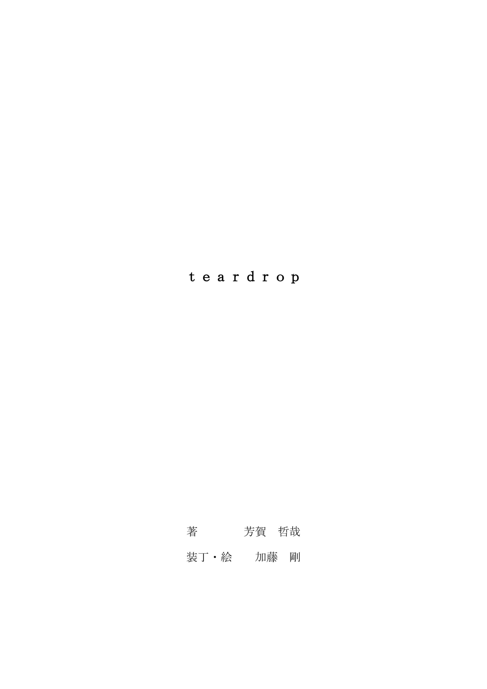

| teardrop | |
| 芳賀 哲哉 | |
| pubfull (2018) | |

電子音の海の中で、唯一有機的だったのは彼女の歌声だけだった。彼女の歌は美しくて、どこか寂しげだった。
最近評判の歌い手アンドロイドがいるということで人気のミュージックバー〈トランスフォーマー〉は連日満員だった。テーブル席を取ることができたのは幸運だった。ぼくはしばらくぶりに休日の夜を満喫していた。
「彼女、凄く上手いな」
ぼくの単純な感想に、同席の同僚達が笑った。ぼくらは『機械犯罪課』に配属され、主にアンドロイドがらみの犯罪を担当している。
警察官という職に就いているため、硬い顔をしていることが多いのだが、今晩はアルコールで顔を赤くして陽気に振舞っている。
「上手いのは当たり前だろ。そういう風に造られているんだから」
「高音の出ない歌い手アンドロイドなんて一発でスクラップにされちまうぜ」
なんとか彼らに彼女の歌が上手いだけではないのだということを説明しようとした。
「でもあの娘の歌は何か他のアンドロイドが歌う歌とは違うような気がするんだよ。人間味があるっていうのかな」
「おい３６番、アンドロイドに対して『人間味』なんて言葉を使うな。いくら非番でも、不謹慎だぞ。あのアンドロイドの歌が上手いってのは認めるが、所詮は機械なんだ。上等のスピーカーと同じさ。軽率な言動は慎め」
同席している同期の中で最年長の９４番がぼくに注意した。３６番というのはぼくの番号だ。警察の人間は番号でお互いを呼び合う。本名は知らない。これはかつて、犯罪者に恨みを買った警官が名前から住所や電話番号を調べられ、家族全員を惨殺されるという事件が多発したためだ。だから我々はかつての囚人達のように番号が名前代わりになっている。この仕事を続けている限り、それが名前となるのだ。ちなみに我々の管轄地区は、Ｔ地区なので、正式にはＴ３６番というのが正しい。
我々人間がアンドロイドを開発し、人間社会に進出させたのは「共生」を目的としたわけではない。「いかに人間の役に立てるか」を念頭に進化を続けた結果、その姿形が生身の人間の姿形に近づいたに過ぎない。人工知能技術が高度に発達し、彼らの思考能力さえも我々に劣らなくなった現代において、ぼくら人間は種としての危機感をアンドロイドに対して抱いているのかもしれない。それが社会の中で見えない線となって現れているのだろう。
多くの職場でアンドロイドは生身の人間と共に働くが、彼らの地位は人間よりも格段に落ちる。新労働基準法では、人間の労働時間は七時間と決められているが、彼らは十五時間だ。他にも様々な規則が、アンドロイドを縛りつけている。永遠に、眠る時も、死んでいく時も閉じられることのない瞼と身体のどこかに刻まれているバーコードがその最たる象徴だ。
発展につきものの問題に対処することを職業とするぼくらは特に人間とアンドロイドの間にある一線を越えぬように気をつけなければならない。問題はいつもその境界線の狭間で起こるからだ。９４番が苦い顔をするのも当然だった。
でもぼくはただ生返事をするだけで、瞬きをしない彼女に見とれていた。彼女は華奢ですらりと長い手足をしていた。女性型アンドロイドが着用する定番の白いボディスーツが、華奢な身体のラインをより強調していた。柔らかなウェーブがかかった肩までの茶色の髪の毛、くっきりとした二重の大きな目が特徴的な顔が良く見えた。鼻はそれほど高くはないが形は整っている。唇は薄く、小さい。青い瞳。設定年齢がかなり若いのだろう。少女らしさを残した顔だった。
ステージで彼女が一人きりだということも、何か暗示めいた感覚を覚えさせた。人間の歌い手にアンドロイドが伴奏をつけることは稀にあるが、その逆は絶対にない。だから彼女は一人だ。冷たく、突き放すような音の海を彼女の声は泳いだ。
「確かに美人だけど、よくあるタイプだよ。男好きするような顔になっているのさ。あんなのに騙されるのは本当の女を知らない可哀想な奴らだけさ」
誰かが、そんな無粋なことを言ったが、ぼくは構わずに黙って聴いていた。浮遊感のある透明な歌声をいつまでも聴いていたかった。
数曲を歌い終えると、彼女は軽くお辞儀をして静かにステージを降りた。皆、拍手を送っていた。それは彼女の内蔵している人工声帯に対しての拍手だ。人間が、アンドロイドを評価するのはその性能に対してだけだ。
次の歌手が出てきた。金髪の派手なアンドロイドで、ほとんど裸みたいな格好をして、訳の分からない歌を歌った。それが好きな人間もいるらしく、ステージの前で踊り出す連中もいた。さすがにぼく達がそうした狂騒に参加することはなかった。バーは喧嘩やら何やら、問題が起こりやすい。いざとなればそれを止めなければならない立場だということは酔った頭でも、重々承知だった。
同僚らは、煩いダンスミュージックをＢＧＭにして、大いに食べ、飲み、語った。非番の日にもかかわらず、話すことはほとんど仕事の話だ。悲しいことに、ぼくらにはそれしか共通の話題がない。
ぼくは同僚達の会話に混ざらず黙って煙草を吸っていた。健康志向の若者の間では既に廃れてしまった嗜好品だ。
「そんな物を吸っていると早死にするぞ」
１２８番が何度も聞いたことのある台詞を言った。彼は、あまり喋らないでぼうっとしているぼくに気を遣ってくれたようだが、ぼくは彼らの話に加わって、殺伐とした仕事漬けの日常を思い出したくなかった。そうだ。ついこの間もこの手で、アンドロイドを撃ったところだった。
アンドロイドの犯罪を取り締まる際に、警官達が犯罪者をその場で処刑することが可能となっている。これは『射殺権』と呼ばれており、アンドロイドの犯罪を抑制するため、又処分するまでにかかるコストを削減するために施行されている。法律に違反した場合、あるいは人間に危害を及ぼした場合においては、彼らを処分することができる。彼らにはいかなる弁護も、黙秘権もない。ただ始末され、専用の焼却炉で焼却溶解される運命なのだ。ちなみに人間に対して射殺権は適用されていない。人間の権利はアンドロイドのそれと反比例して過去にないくらいに高まっていた。
アンドロイドを始末することなんて、気楽なことのように思えるかもしれないが、ぼくにとってはいつも何とも言いようのない後味の悪さを感じさせた。同僚達はそれを人工知能の自己防衛機能なだけだと言うが、中には命乞いをする者もいる。この間撃った二体もそうだった。女と男のカップルで、違法な麻薬を売っている組織に使われている機体だった。二人は身体を震わせながら、互いに自分はどうなってもいいから、もう一人は助けてやってくれと頼んだ。ぼくは、彼らが組織の情報を話せば、見逃してやると嘘をついた。最初に女を撃ったぼくを睨む男型の目つきが忘れられない。アンドロイド特有の無表情な顔つきの中で、目だけが憎悪に燃えていた。既に射殺権の執行が命じられている状況で、ぼくにできる心遣いは苦しませずに一発でとどめをさしてやることだけだった。
嫌なことを思い出したからか、アルコールを摂取し過ぎたのか、気分が悪くなってきた。吸いかけの煙草を灰皿の底でもみ消し、トイレに言ってくると告げ、席を離れた。
混み合った店内を掻き分けるように歩いていると益々具合が悪くなった。踊っている人間の顔が能面のように見えた。おかしい。胸がむかむかして、吐きそうだった。ぼくと肩がぶつかって、何か言いかけてきた奴がいたが、それを無視して通り過ぎた。休みの日に酔っ払いの相手をするなんて真っ平ごめんだ。真っ直ぐに歩けていないのが自分でもよく分かる。やっぱり、飲み過ぎているみたいだ。
便器に向かってしたたかに吐くと、幾分か楽になった。洗面台で、手と顔を洗った。ふと鏡で自分の顔を見てみると、随分と老けたなと思った。他の同僚達がそんなことを聞いたら、またぼくを笑うだろう。でも昔とは明らかに違う顔をしている。いつからこんな殺伐とした顔をするようになったのだろう。爛れた内側を、与えられた権力で管理することを覚えてしまったからだ。ぼくだけじゃない。管理する側も、される側も、皆、何かがおかしくなってきている。瞼さえ見なければ、機械と人間の区別すらつかなくなりそうだ。
そんな懲罰ものの考えを洗い流すようにもう一度よく顔を洗った。多分、少し疲れているだけだ。余計なことは考えずに、非番の夜を楽しむことだ。自分に言い聞かせて、席に戻ることにした。再び人混みの中をかいくぐっていくのが億劫になり、バーカウンターの方を通って、少し遠回りすることにした。客は踊ることに夢中で、カウンターはまだ空いていた。
通るついでに一杯ビールを頼んだ。金を渡す時に、相手の顔を見ると、そこにいたのはさっきステージで見たあの歌い手アンドロイドだった。間違いない。歌を歌わない時は、他のウェイトレスのアンドロイド達と同じように働かされているのだ。
さりげなくカウンター席に座って、よく冷えたグラスの中のビールに口をつけた。急いで飲んで、もう一杯頼む時に、何か話しかけてみようと思った。何故話しかけようとするのだろうか。自分でも分からなかった。
「もう一杯頼むよ」
彼女は頷いて、素早くビールをぼくに差し出した。ステージに立っていた時よりもぎこちない表情に見える。ぼくは、そのまま離れていこうとする彼女を呼び止めた。
「君、さっき歌っていた娘だろう」
「そうですが、何か？」
何か、と聞かれると、ぼくもどう答えて良いのか分からなかった。今までこんな風にアンドロイドに話しかけたことはなかった。ぼくは戸惑いながら、煙草をくわえた。
「君も、一本どう？」
「要りません。仕事中は何も口にはできない規則ですから。用件は、まだ何かありますか？」
「いや、別に用件なんてないんだよ。ただ、君の歌がとても良かったって言いたかったんだ」
「......あなたもアンドロイドですか？」
しばらくの間を置いて、彼女は言った。ぼくは違うと答え、どうしてそう思ったのかと彼女に訊いた。
「アンドロイドを直接褒めてくれる人間に、わたしは会ったことがありません。だから、そう思いました」
「アンドロイドだろうが何だろうが、良いものは良いんだ。君の歌は素晴らしかった。また、聴きに来るよ」
彼女の仕事の邪魔をするつもりはなかった。去り際に、ぼくは彼女に名前を尋ねた。カレンという名前を与えられていると彼女は答えた。ぼくは、自分のことを３６番だと名乗った。彼女はぼくが冗談でも言ってると思ったのだろうか。困惑したように瞼のない目でぼくを見ていた。
翌朝、目を覚ますとひどく頭が痛んだので強力なアスピリンを何錠か飲んでおいた。まだ出勤までにはしばらく時間がある。少しベッドに横になってこの死んだほうがましと思えるほど酷い頭痛が治まるのを待つことにした。
七十階建ての高層マンションの五十階にぼくの部屋がある。カーテンを開ければガラス張りになっている寝室から、街の様子がよく見える。ぼくは朝の時間に、ここから街を見下ろすのがとても好きだ。今日はあいにく雨が降っているみたいで外は暗いが、そんな天気の悪い日の灰色の景色も悪くない。
そんなことを考えている内に頭痛はすっかり治まった。ぼくはすぐにシャワーを浴びて、いつでも飲めるように大量に作り置きしてあるコーヒーを淹れた。苦いコーヒーを飲むと、眠気も薄らいだ。パッケージに様々な警告の書いてある煙草を一本吸う。最近出勤前になると、ひどく気分が重くなる。バッジと銃を身につけたら、感情なんてものは胸の内の一番深い所にしまって出てこないようにしておかないといけない。遠くから見れば美しい街並みも、警官というラベルを貼りつけて一歩踏み入れば、至極危険なゴミ溜めとなってしまう。
八時少し前。玄関に取りつけられているモニターが緑色に点灯した。これは、護送用の装甲車が迎えに来る合図だ。装甲車が来るということはどこかで戦闘が始まっているということだ。緊張感を高めながら、身支度をした。
広く、薄暗いマンションの駐車スペースに停まった装甲車に乗ると、既に八名の警官が乗り込んでいた。昨日一緒だった仲間の中で唯一１２８番が同じ車に乗っている。彼とはペアを組むことが多い。ぼくにとって信頼できる同僚の一人だった。
「おはようさん。昨日は相当酔っていたが、調子はどうだい？」
「大丈夫さ。君の方はどうだ？」
「いつもと同じ最悪の朝だよ。こんな風に護送されて、不味い朝飯を食ってる。独身男の悲しい性だ」
１２８番は、ローストポーク味の携帯食料チューブを食べていた。これが朝飯だ。料理を作ってくれる人もいなければ、自分で作る方法も知らない。彼はぼくにも一本すすめてくれたが、断った。頭痛は治まったものの、まだ胃の奥がむかむかしていた。
空中高速路を装甲車が走る。車が空を飛ぶことは様々な視点から危険性が問われ実用化に至らなかったが、空中高速は増え続ける人間と車の数による交通問題を大幅に改善した。蜘蛛の巣のように複雑に張り巡らされた高速をスムーズに走るために、全ての車に磁力システムを取りつけることが義務化されている。道路に埋められた磁石と車の磁力を反発させ、浮力を生じさせるのだ。車が浮き上がって自在に飛び交う未来を予想した映画を子どもの頃に見たことがある。重々しい巨体の装甲車が、そうした映画の中とほぼ同じように静かに、凄い速度で走る。
車の中には、見たことのない顔の警官がいた。新入りだろう。不安げな顔をしてじっと外を見ている。この間死んだ仲間の穴埋めだ。ぼくは、自分が新人だった頃の気持ちを思い出した。いつ死ぬのか分からない恐怖。その時が今日ではないだろうが、いつか必ずやって来るというはっきりとした予感。多分、向かいに座っている新入りも同じように感じているんだろう。ぼくは、そうした感覚が段々と薄まっていくものだということを言ってやりたかったが、よした。恐怖がなくなっていくことが狂気につながっていくのかもしれないと最近よく考えていたからだ。
通常の地面を走る道路に降り、磁力システムを切ったところで、不快な重力を尻の下で感じた。それと同時に、署から現場についての情報が入った。
「反政府団体と交戦中。団体は街中で市民及び警官に向かって銃を発砲した後、都市郊外の精肉工場に立てこもった。武力による制圧を許可する。繰り返す、武力による制圧を許可する。射殺権が施行される。その場にいるアンドロイドの破壊を命ずる。反抗する人間は逮捕を優先。やむを得ない場合は攻撃を許可する」
情報によると、これから戦う相手はアンドロイド擁護団体の過激派の一つだった。この間も一つのグループを潰したばかりだというのに、際限なく湧いて出てくる。彼らはアンドロイドに人間と同じ人権を与えるようにと唱えている異端者達だ。道具として使われるべきアンドロイドを、家族や恋人として見なすようになってしまった人々がその中心にいるが、そうした感情を利用して政府に反抗しようというテロリスト達やギャング組織と結びついてしまうことからこうした武力による衝突が起こってしまう。かつてはデモといえば暇人達の時間潰しのように見なされていたのかもしれないが、今ではそうじゃない。彼らは人間を傷つけることによって、存在を主張するのだ。そうした団体が地下で手を結んで大きくなるのが最も怖い。こうやって小規模で暴動を起こしている内に、完膚なきまでに叩き潰さなければならない。
防弾チョッキを身につけ、常備されているショットガンを手に取り、黙りこくっているぼくらの姿は戦場に向かう兵士と変わらない。ぼくはショットガンを脇に置き、愛用の拳銃の点検を始めた。ぼくにとって最も身近な凶器であり、これまで何度もぼくの命を救ってくれた相棒だ。レーザーガンなどというおとぎ話の中の武器とは比較にならない安心感をぼくに与えてくれる。弾は対アンドロイド用に貫通弾を装填してある。
現場に着くまで軽口を叩く者はいなかった。時折新入りの様子を見ると、顔は青ざめ、歯をがちがちと鳴らしていた。この恐怖だけはアカデミーでは経験し得ないものであり、これに打ち克つことが警官として最初の課題となる。
ぼくらは街の中心から少し離れた倉庫街に降ろされた。
戦況は膠着していた。装甲車の陰に隠れて先に到着していたチームが銃を構えている。
「深呼吸をしろ。あんまり緊張し過ぎると、自分や仲間を撃つことになりかねないぞ」
ぼくは隣にいる新人に向かって言った。彼は怯えてはいたものの、職務を果たそうと懸命だった。団体が立てこもっている人工肉の精肉工場に向けてショットガンを何発も撃ち込んだ。一発撃てば、向こうからも同じように弾が飛んでくる。こっちは装甲車を楯に、向こうは強化防弾ガラスで弾幕を防いでいる。
団体は時折拡声器を使ってやかましく、まくしたてた。
「我々は法の改定を求める！アンドロイドにも正当な権利を！彼らは単なる機械ではない。我々と変わらぬ感情を持っている！使い捨てにされ、電化製品のように処分されるのを恐れているのだ！繰り返す！アンドロイドにも正当な権利を！それが叶うまでは我々は止まらない！」
彼らの主張を聞きながら、突撃命令が出るのを待った。相手が立てこもってしまっては、他に手段がない。突入前に恐怖は感じていない。むしろこの中途半端な状態に見切りをつけたかった。軽い自殺願望かもしれないなと、ショットガンを撃ちながら考える。
長らく待たされた後、いよいよ突撃命令が出た。手順どおり、ゴーグル着用の指示が出て、精肉工場に閃光弾が投擲された。これで敵の目くらましになる。ぼくはいつも死を視覚化することができたら、きっとこのゴーグルを装着した目に映るものに似ているんじゃないかと思っていた。
工場の中に足を一歩踏み入れると、そこら中にぶら下がっている人工精肉の生臭い臭いがした。冷房器具が故障しているらしく、蒸し暑い。不快な臭いが余計に鼻につく。床には工場員達が倒れていた。肉の加工用の白い服に赤い血が染み出しているのが見てとれた。生存者を確認する余裕はない。ぼくは新人とペアを組んで低く姿勢を保ったまま前に進んだ。
汗がぼたぼたと地面に落ちた。政府が開発した閃光弾は強烈で、しばらくその効果は続く。ゴーグルで目を保護していなければ、何も見えない。それでもどこからか銃弾が正確に我々を狙ってきた。奴らもこうした警察の手を読んでいたのだ。
すぐ近くの肉塊に弾が命中した。じりじりとした応酬を繰り返している内に、尖兵がこちらに走りながら銃を乱発してきた。こうなればもうやり合うだけだ。彼らの多くは工場の二階に姿を隠していたが、螺旋状の階段からどんどん下に降りて来て、我々と正面から撃ち合った。
ぼくは敵の頭を狙って撃った。脳チップを破壊すれば、アンドロイドは機能を失って停止するのだ。そのほとんどが命中した。銃の腕には自信がある。十五歳の時に射撃の大会で優勝し、警官になることを選んだ。それから、血の滲むような訓練を積んで腕に磨きをかけた。
「こんな風に撃ち合うことになるんなら、最初から爆弾を使えばいいんじゃないですか？」
新入りの警官が息を切らせながら、半ば叫ぶようにして言った。彼は恐怖に負けないよう必死に虚勢を張っていた。
「アンドロイドだけならともかく、人間もいるんだ。いきなり爆弾で吹っ飛ばしてしまうなんてことはできないだろ」
「同じでしょう。結局は見境なしだ」
「よぉ楽しそうだな。俺も混ぜてくれよ」
ぼくたちは敵の死角になっている作業台の下に身を隠していた。そこへ１２８番が滑り込んで入ってきた。いつでも陽気さを失くさない彼の存在は有難かった。
「新入り。お前さんも長くこの商売を続けようと思っているなら覚えとけ、『なるべくなら人間は殺すな』だ。後がうるさいぜ」
「この状況でそんなことは言ってられないですよ！」
「じゃあ、明日はお前さんの机は始末書の山だな」
冗談めいた笑いをゴーグル越しに浮かべ、彼は身体を起こしてショットガンを撃った。ぼくも、新入りも彼に続いて煙の向こう側に向かって銃を撃ちまくった。
警官側は、ほとんど鎮圧に成功していた。硝煙が薄くなる頃には、ほとんど銃撃はなくなっていた。警官の被害もそれほど多くはない。数人が被弾をしたようだが、死人はいないということが耳に装着したインカムを通して伝えられていた。
団体の生存者達は、広い精肉工場の片隅に集められた。彼らはもう銃を捨てて両手を挙げ、降伏の意を示していた。
後になって知ったことだが、彼らの中心はトミタという名の大学の教授だった。元々機械工学の権威だったらしいが、病気で死んだ娘に似たアンドロイドを所有してから、自身が極端なアンドロイド擁護派の闘士になったようだ。こうした集団的な騒ぎを引き起こすのは頭が良く、社会的な地位も高い人間である場合が多い。
薄くなった髪の毛を乱したトミタ教授は一箇所に集められたおよそ二十数名の人間とアンドロイドの先頭に立ち、銃口を向けられながらも大学で講義でもしているかのように話し出した。視線は何を捉えているわけでもなく、ただ虚空を彷徨っていた。
「お前達は人殺しだ。法と名のついた下らぬ戯言の飼い犬どもめ！私達の気持ちが少しでも分かるか？知っておるのか？ここにいるアンドロイドは喜びという感情を知っている。怒りも、悲しみも、絶望も知っている。勿論、恐怖も。そう、死への恐怖もだ。だが彼らの......彼らの感情は踏みにじられ、使い捨てにされ、勝手に期限づけされた時間の中で死ななければならない。人間どもは好きに生き、よぼよぼの醜い老体になるまで生きることを許されているというのに」
遠目にその様子を見ていたぼくは、彼の背後に小さな女の子がくっついていることに気がついた。彼女が彼の狂気の原因だと瞬間的に理解した。
「まだ幼いこの娘を見ろ！お前達の定義する子どもと何が違うというのだ。何も違いはしないぞ！だが、政府はこの娘に来年の頭になったら死ねと言う。そんなことを許せるものか」
彼の言っているのは、アンドロイドに与えられた活動期限のことだ。政府の決めた法において、全ての機体には、活動が許可される年数が製造時に決められている。脳チップだけを見れば永遠に存在することができるアンドロイドには、その固体としての存在の終わりを定める寿命が必要だからだ。それを過ぎれば、機体に問題がなくともしかるべき場所にて処理される。処理とはつまり、廃棄、彼らにとっての「死」を意味する言葉だ。どんなに優れた実績や能力を持っている機体も、期限が過ぎれば死刑台に上がらなければならない。当然、この法に対しての反対案や抗議の声は後を絶たないが、これまでに例外はなかった。アンドロイド達はその時が来たら死を受け入れなければならないことになっている。
トミタ教授は服にしがみついている女の子を優しく引き離そうとした。女の子は抵抗したが、科学者が彼女の耳元で何か囁くと、大人しく言うことを聞いて後ろに下がり、他の人間やアンドロイド達の集団の中へ埋もれていった。
その老いた男は女の子のいる方を名残惜しそうに見てから、もう一度こちらに向き合った。鋭い光を放つ彼の目から、何かしらの覚悟が読み取れた。
彼は奇声をあげると同時に、服を捲くり上げた。彼の細く枯れた身体には、何重にも炸裂弾が巻きつけられていた。
やられた！
そう思った時はもう遅かった。警官たちは教授に向けて一斉に発砲したが、彼の最後の仕事に支障はなかった。全身で銃弾を受けながらも、彼は不気味な笑みを浮かべて起爆装置を押した。
白い閃光と爆音、凄まじい衝撃。それしかぼくは覚えていない。爆発で少しの間意識を失っていたのだ。目を覚ますと、現場の有様は悲惨だった。直撃を受けた前方の警官らはほとんど即死だったろう。その中には１２８番もいた。遺体は敵も味方も判別ができないほどの損傷を受けていた。まるで地獄絵図だった。人間やアンドロイド、そして人工精肉が目茶苦茶に飛び散らかっている。
後方への被害も大きかった。ぼくはぼんやりとした意識のまま起き上がり、仲間の安否を確認しようとした。ぼく自身は頭から出血していて、肋の辺りが燃えるように痛んだが、何とか歩くことはできた。そこへぼくを呼ぶ声が聞こえた。
「３６番！......どうなってるんですか？ほとんど目が見えない。俺はどうなってるんですか？」
新人だった。彼も後方にいて直撃は避けたはずだが、運悪く、瓦礫に右の手と足を挟まれていた。目は爆撃の閃光にやられただけで、その内戻るだろうが、彼の右手と右足は無残に潰されてしまっていた。肉が潰れ、血が飛び散っている。すぐに救護が来るから動かないようにと彼に言ったが、彼は我を忘れていた。
「う......腕の感覚がない！足もだ！３６番、どうなっているんですか？なくなっちまったんですかね？嘘でしょう？痛みは全然ないのに。やたらと熱いだけで......畜生！どうなっちまったんだ？」
痛みがなかったのはショックのせいで、すぐに壮絶な痛みが彼を襲った。ぼくは緊急用モルヒネアンプルを血だらけの彼の腕に打ってやり、救護が来るからとだけ繰り返し、彼を励ました。彼はモルヒネの効力を軽々と通り越して襲ってくる痛みと死の恐怖によって泣きながら、アンドロイドに対する復讐を誓い、気を失った。
救護者が到着するまでの間、動ける者で生存者を何とか探そうとした。前方にいた仲間達は全滅だった。敵側の人間もそのほとんどが吹き飛ばされていた。アンドロイド達はどうなっているのだろう。重労働勤務型の頑丈なアンドロイド達も人工皮膚が剥がれて、骨組みとなっているメタルプレートが剥き出しになった状態の者が多かったが、機能停止状態になっているかどうか確認をする必要があった。生存者の確保を仲間に委ね、ぼくは銃を抜いて、ゆっくりと近づいていった。
ほとんどただの鉄屑のようになったアンドロイド達は全て、フリーズしているようだ。彼らは何かを守ろうと重なり合っていた。丁度、試合前のフットボールチームが円陣を組むように息絶えていた。彼らが守ろうとしたものは何だ？朦朧とした意識のまま、一体に手をかけてどかそうとした。とんでもなく重たかった。それでも何とか、円陣から引き離すことができた。彼らが壁となったその中心にいたのは、さっきまで大学教授にしがみついていた女の子だった。
ぼくの頭も打撃を受けて、少しおかしくなっていたんだろう。その女の子を救い出そうとした。本来はその場で処分しなくてはならなかったのに。
「もう大丈夫だ。こっちにおいで」
優しく話しかけると、女の子はぼくの手を取った。温かく、小さな手だった。ぼくは彼女をアンドロイドの遺骸からなる城の外に出してやったのだ。
「どうしてお兄ちゃん達は、あたしのパパやお友達を殺しちゃうの？ねぇ、あたしも殺しちゃうんでしょ？」
女の子はじっとぼくの顔を見てそう言った。ぼくは彼女が何を言っているのか分からなかった。ぼくが何故こんな小さな女の子を殺すというのか。
「気をつけろ！そいつも炸裂弾を持っているぞ！」
仲間の一人が叫んだ。ぼくはその声でやっと我に返り、この小さな女の子がぼくに感謝を述べようとしているのではなく、仲間の敵討ちをしようとしていることを理解した。つないでいた方とは反対の手に、柔らかく小さな手には不似合いな炸裂弾が握り締められているのを見た。
ぼくは即座に銃を女の子の頭に向けた。ぼくと、彼女の手はつながれたままだった。振り払おうとしたが物凄い力が込められていてとても無理だった。その小さなアンドロイドはぼくの腕を動かし、彼女の薄い胸の上に置いた。全身から冷たい汗が吹き出るのを感じた。死ぬ。このままだと本当に命を失うぞ。本能が激しく訴えてくる。
「早く撃て！」
「その距離で爆発されたら終わりだ、皆巻き添えを食らうぞ！」
「撃て！撃つんだ！」
そんなことは分かっていた。言われずともやってやる。こいつが炸裂弾を起爆させる暇など与えるものか。だが、なぜか引き金が引けなかった。その理由は、この手を通して伝わってくる感触だった。
「お兄ちゃん、感じるでしょ。この音。これは命の音だってパパが言ってたわ。あたしもそう思う。あたしは命を持ってる。お兄ちゃんと同じよ」
その通りだった。彼女の手から感じたのは命の流れる音だ。この娘を撃つなんてできない。嫌なイメージが頭の中に浮かんだ。最近撃ったアンドロイドのカップル、彼らの憎しみの眼差しが、少女のぼくを見る目と重なる。何だこれは。物が二重に見える。正しいと思っていたものが壊れていくのを感じた。
「惑わされるな！３６番、起爆装置を押されるぞ！やられちまう撃てぇ！」
「目だ、目を見ろ！アンドロイドは瞬きをしない！」
そうだ！少女は瞬きをしていない。やはり機械なんだ。ちっとも動く気配のなかった銃の引き金が引けるという予感があった。少女が炸裂弾の上部に配置された起爆装置を押そうとしているのが分かった。
ぼくは少女の動かない瞼に罪悪感をなすりつけて銃を撃った。ああ、でも何てことなんだ。引き金を引いたその瞬間、ぼくははっきりと女の子の瞼がぱちりと動いたのを見てしまったのだ。
決して閉じることのない瞼が閉じた。それを見たのとほぼ同時に少女の頭にぼくの撃った弾丸が命中した。数瞬遅れて、仲間の援護弾が彼女の小さな体に被弾した。ぼくは盛大に返り血を浴びた。口の中に鉄の味が広がった。それが本物だろうが何だろうが関係なかった。ぼくは子どもを撃ち殺してしまった。
数日後、この事件で死亡した警官達の簡単な葬儀が行われた。遺体は既に火葬され、遺骨は家族のもとに送られていた。生きて自分の両親に会うことができる警官よりも、このように殉職して家に戻る警官の方が遥かに多い。
広大な署の中央棟最上階にある殉職者達のためのモニュメントの前で、署長によって今回の戦闘で殉職した警官らの勇気と栄誉が称えられた後に、花が添えられた。それだけで彼らへの別れの儀式は終わった。
死んでいった同僚の顔を浮かべると哀しくなった。特に１２８番のような信頼できる仲間を失った時の喪失感は大きい。ぼくは皆がいなくなった後も、しばらくその場に残った。何を語りかけることもしなかったが、ただ彼らが安らかに眠ってくれることを祈った。
実のところ、体調が優れずにいた。あの少女を撃った時の光景が頭にこびりついて離れないのだ。何度も何度も夢に見て自分のうなり声で目が覚める始末だった。口の中には鉄の味がまだ残っている。今までも様々な事件に遭遇したがこんなことは初めてだった。
数日間は何とかやっていけた。だが症状は次第に酷くなり、全く食べ物を受けつけなくなってしまった。最初は微かなものだったのにそれが段々と気になり出した。何の味を試しても、鉄の、血の味がした。
みるみる内にぼくは痩せてしまい、メディカルチェックとメンタルチェックの両方を受けるように上からの命令があった。身体に異常はないと医療部のドクターは言った。
精神面での大きなショックが影響しているのだと診断された。ドクターは何か心辺りはないかと聞いてきたが、疲れているだけだと答えた。アンドロイドの瞼が動いたのを見たなんてことを言えば、精神病院送りにされかねない。連日起こる事件により精神がひどく緊張していたのは事実だった。毎日無事に家に帰れるだろうかと思いながら家を出るなんてことは普通の職業ではなかなかない。診断の後、上層部はぼくに休暇命令を出した。
休暇命令が出てからしばらくの間は、家から一歩も出なかった。体が受けつけてくれるのはミルクとウイスキーだけで、その合間に煙草をふかした。栄養は全て、何の味もしない栄養サプリメントで最低限補っていたが、素面でいる時間が段々と短くなってくるとそれも疎かになっていった。ぼくは酔っ払いながら、窓の外を眺めたり、もう誰も見なくなった古い映画を見て、もはや化石同然となったレコードで音楽を聴き、とっくの昔に忘れ去られた小説を読んだ。
「好きなことをやって、なるだけストレスを溜めないようにして過ごしなさい」
ドクターの忠告に従って、怠惰な毎日を過ごした。最初はそういう風にして時間を過ごすことが新鮮に感じられた。明日のことを考えずに酔っ払い、趣味を楽しむことが贅沢に感じられたのだ。だがそうした感覚も長くは続かなかった。深夜まで酒を飲み、昼を過ぎてから目を覚ます自分に段々と嫌気がさしてきた。何だか不感症にでもなってしまったような気がした。映画も音楽も本も、面白味をなくしていた。ネットは以前から好きではなく、最低限しか使っていなかったが、最近では回線にアクセスすることすらしなくなった。ぼくは何も見たくないし、聞きたくもなくなっていた。ただ酒だけは飲み続けた。悪夢を避けるためだった。記憶が途切れるくらいまで飲まなければ、あの時の光景を夢に見るのだ。
その晩もしたたかに酔っていた。外に出る気なんてまるでなかったのだが、煙草を切らしてしまった。政府が特定非健康嗜好品として認めたものは、ライセンスのある店で買わなければ麻薬の密売と同じ程度の罪を問われることになる。ちなみにカフェイン除去前のコーヒーやお茶もそうした認可が下りた店で手続きをしてから買わなければならない。全くもって面白くない世界だ。健康を気にするばかり、人間は馬鹿になってしまったのだろうか。大して酔っ払わない政府推奨の似非ビールを飲むことに、ニコチン抜きの煙草を吸うことに何の意味があるというのか。コーヒーなんてカフェインが入っていなければただの苦くて黒い液体だ。
もうずっと会っていない父親の影響でぼくは他の人々とは少し違う考え方をするようになったのかもしれない。父も政府が薦めるような煙草や酒は好まなかった。
「馬鹿みたいに気が抜けた味がするな」
合成アルコール飲料を飲んだ時は決まって顔をしかめながらこんな文句を言っていたものだ。古い音楽や映画のコレクターでもあった父はここから遠く離れた郊外の証券会社でまだ勤めている。ふと家に帰りたくなったが、休暇中も帰省することは許されていない。
寂しさを紛らわしてくれる酒や煙草を調達するために、久しぶりに外に出ることにした。立ち上がってみると大分足元がふらついたので、なじみになったアスピリンの錠剤を口に放り、噛み砕いた。
外の空気は冷たく、いつの間にか季節が変わってしまっていた。薄い皮地のジャンパーの前を合わせて寒さをしのいで歩いた。
Ｔ地区都心部の中心街には高層ビルが建ち並んでいる。そこにはモーテルやら銀行、ジャンクフードショップに、スポーツジムなどのヘルスケア施設が競うようにしてひしめき合っている。もちろんそれに並行するようにして、スラムエリアや、貧民層や他区域からの移民が暮しているエリアも存在する。典型的なメトロポリスというやつだ。
大きなデパートに入り、サプリメントをいくつか買った。広大な食品コーナーには足を向ける気にもならなかった。自分が物を食べることを想像するだけで吐き気がする。これ以上痩せてしまうのも困るので、値段は張るが超高カロリータブレットの瓶を買い物籠の中に放り込んだ。
それから酒と煙草のコーナーに入った。入る前に酒と煙草を買うための誓約書を書かされる。これで健康を害し、死に至ることがあったとしてもどのメーカーに対しても訴訟は起こさないという文面の最後にサインをする。これは純正のアルコール飲料を飲むことのできるバーなんかでも取る手続きだ。なんて馬鹿馬鹿しいのだろう。ぼくはドクロマークが小さく貼られたウイスキーの瓶と煙草をカートンで買い込んだ。
自動清算機で支払いを済ませ、外に出ると、もう日が沈みかけていた。まだ何となく家には帰りたくなかった。これまで自由に使える時間というものがほとんどなかったので、途方に暮れてしまう。
酒が飲みたかったが、さすがに公衆の面前で歩きながらウイスキーの瓶に口をつけることはできない。そうした羞恥心がまだ残っていることに我ながら驚いた。
頭はまだ壊れ切っていないらしい。仕事に戻りたいという気持ちもある。明日にでも出勤したいくらいだ。しかし、上が決めたことには逆らえない。名目上は休暇でも、実質は謹慎と同じだ。
こんな生活をしていたらますます体調は悪くなるばかりじゃないか。せめて何か食べれるくらいにはならないといけない。でも、どうしても弾丸を撃ち込んだ瞬間のあの少女の顔を思い出してしまう。これまで何度も何度も同じことをしてきたはずななのに。あの娘もその中の一体に過ぎないはずだった。動かない瞼を動かすまでは。
日が暮れて風がいっそう冷たく頬を撫でてゆく。でもまだ帰りたくない。あの部屋に戻って再び飲み出したら、今度こそ止まらなくなってしまいそうだ。自制心なんてものを振りほどいて、本当に溺れるほどに飲んで死んでしまうかもしれない。そうなら、もし本当にそうなってしまうなら、その前に何がしたいんだろう。
歩き回り、バスに乗り、タクシーを拾い、またぶらぶらと歩く。気がつくと〈トランスフォーマー〉の前にいて。忌々しい誓約書にもう一度「Ｔ３６」とサインをしていた。それからカウンター席に座り、買い物袋の中に入っているウイスキーと同じ銘柄のものをストレートで注文した。そしてまだ誰も歌っていないステージの方へ顔を向ける。
期待が胸の奥で膨らんでいるのが分かる。どうしてもっと早くに来なかったんだろうか。あの夜から、彼女の歌声はずっと頭の中に残っていたのに。
それは多分ぼくが、警官という職業意識に縛られていたからだろう。警官とアンドロイドが接近して良いことなんか一つもない。別に話の種に皆でこうした場所を訪れ、評判のアンドロイドの歌を聴くことは問題ではない。だが、たった一人で心の安らぎを求めてここに来ていることが知れ渡るのは決して良いようには思われない。そういうことなのだ。
だが今のぼくは休職中の身だ。だからもしも今何がやりたいと尋ねた自分自身に対し、彼女の歌が聴きたいと答えたのだ。もしも何もしたいことがないのであれば、もはや生きているとはいえないと思う。これはその日の仕事のために起きて、翌日の仕事のために眠るという暮らしの日々の中で常々考えてきたことだった。
ステージが空いている間でも、音楽が絶えることはなかった。スピーカーから様々な曲が流れる。知っている曲、知らない曲、好みの音楽、普段なら絶対に聴かないような類の音楽が耳に入ってくる。深く聴き入っているわけじゃない。あくまでも耳の、というよりは脳の浅いところで音楽を聴いている。そうしながら酔うと、大概の音楽は楽しむことができる。マンションの部屋で一人きりで音楽を聴くのとは全く違う感覚だ。客が増えてきた店の中でそう実感した。店内はしっとりとしたバラードが流れている。こうした空気を共有することは悪いことではない。
やがて店はほぼ満員になった。準備ができたとばかりにスピーカーはその役目を終えた。ステージにライトが向けられるとそこには彼女がいた。彼女は光が当てられるまで、ずっとそこに立っていたに違いない。ステージ用のスピーカーが鳴り出す。ベース音が大音量で響き、そこに無機質な電子ピアノの音が加わる。
彼女はスタンドマイクを軽く握ると、瞬きのできない目でじっとどこか遠くを見つめながら歌い出した。
すっかり聴き入った。ネットに氾濫しているありきたりのミュージックコンポーザーをダウンロードして彼女に歌わせているのだろうが、彼女が歌う時に意味を持つ「何か」に完全にやられてしまったみたいだ。言葉では上手く説明できないが、あえて言うならばそれは「心」に近いのだと思う。今の時代、それを感じさせることができる歌手はほとんどいないはずだ。少なくともぼくは彼女以外には知らない。感情がないと言われているアンドロイドの歌い手がこんな風に歌えるなんて皮肉な話だ。
すぐに二曲目が始まった。ぼくはグラスや煙草を口に運ぶことも忘れてしばらく、彼女の歌を聴いていた。ただ途中である異変に気がついた。時折、彼女の無表情な顔がほんの少しひきつったように動いた。歌に問題はなかった。音程を外すこともなかったが、明らかにその動作はアンドロイドが痛みを感じている時の動きだった。いくら彼らが表情に乏しいといってもそれくらいはすぐに分かる。全てのアンドロイドは例外なく痛覚を備えている。痛みは、恐怖を与え、恐怖は支配を生む。痛みというのは人間がアンドロイドを飼い慣らし、支配するために絶対不可欠なものだ。痛みや恐怖を知らなければ、あっという間にアンドロイドは人間を超えた存在としてこの世界に君臨するはずだ。
彼女の素足に小さな赤い点が一瞬見えた。長く伸びた足にその赤い点がともった時に彼女はかすかな苦悶の表情を浮かべた。赤い点は消え、また彼女の長い脚の別の場所に移る。目立たないように、左右の足首を行ったり来たりしている。それは一昔前、流行った銃の形をしたキーホルダーからの熱光線ライトだった。子ども用の玩具とはいえ出力を最大にすればかなりの痛みを相手に与えることができる。すぐにその危険性が指摘され、製造中止になったものだが、いまだにネットオークションなどで購入することができる。
すぐにそんな子どもじみた真似をしている連中を見つけた。バーの非常口近くのテーブルについている、いかにも間抜けな面をした若者の集団だった。テーブルの下にキーホルダー銃を隠して、時折引き金を引いては愉悦の顔を浮かべていっぱしにビールを飲んでいた。銃を持っているのは一番身体の大きな男に違いなかった。例えようもなく嫌な顔をしている奴だった。似合っていない長髪で、眉毛がない。髷を結っていないスモウレスラーとでもいえばいいんだろうか。鼻は潰れていて、頬にそばかすが残っている。まだかなり若そうだが、目つきはもう立派な悪党のものだった。
やめさせようと、ぼくは席を立ち彼らのグループの席に向かった。連中はぼくがテーブルに近寄ってくるのに気がつくと、ぴたりとふざけ合ったり、声を上げることをやめ、不審者を見るようにぼくを見た。
「玩具を出すんだ」
騒ぎにならないように小さな声でそう言うとリーダー格の太った男はちらりとぼくを見てこう言った。
「何のことっスか。からまないでくださいよ。俺らこうやって飲んでるだけスから。マジ、かんべんしてください」
他の者達もそいつに同調して頷いた。ぼくは彼らの内の誰かが「馬鹿」と小声で言い、くすりと笑うのを聞き逃さなかった。
「君のそのでかい手の中にあるキーホルダーを出せ。そいつを人に向けて使用するのは禁止されている」
「はぁ？だから持ってねぇって言ってんだろう。しつけぇ野郎だな。てめぇは、こら！やられないうちにひっこんどけ、カスが」
太った男は目つきを変えて威嚇してきた。店がざわつき、演奏が止まっている。こういう時に警察バッジを持っていればと後悔するがもう遅い。太っちょがキーホルダー銃をぼくの目に向けた。ぼくは反射的に右手で目をかばった。
ちくりとした痛みを感じたが、赤い熱光線を受けた右手でそのまま男の頬を殴りつけた。これだけ頭にきたのは久しぶりだった。男は椅子から滑り落ちた。他の仲間の中で、威勢がいいのが何人か手足をばたばたさせながら襲ってきたが話しにならなかった。いくら酔っているとはいえ訓練された警官だ。素人相手にやられるわけがない。勢いと怒りにまかせて一発は殴ってしまったが、他の奴らは腕をねじってやったり脚を蹴って転ばしてやるだけでカタがついた。
床に倒れている太った男の財布からＩＤカードを抜き取ると、まだ学生だった。こんな馬鹿な真似をする若者達にこの地区の未来を託すのかと思うと心底うんざりする。呻りながら頭を振っている若者に向かってぼくは言った。
「イチ......なんて読むんだ......イチハラか、無抵抗のアンドロイドに対する暴力行為は所有者に対する器物損害として罰せられる。大人しくここから出て行くなら警察に通報はしない。玩具はもらっておこう、渡すんだ」
「畜生、機械なんてかばいやがって。変態め！訴えてやるからな、畜生め」
イチハラという名前の学生が涙目で精一杯の虚勢を張ってバーから出ると、彼の仲間達もその後に続いた。彼らの後姿を見ているとその大きくみっともない尻にもう一発蹴りをくれてやりたい衝動に駆られたが、すぐにそんなことを思った自分を恥じた。相手はまだ子どもなのだ。
音楽はすぐに再開した。何事もなかったかのように。カレンは相変わらずどこかを見つめながら歌っていた。
歌が終わり、拍手を送ってから店を出た。夜は長い。彼女はこの後、何度もステージを降りては上がってを繰り返し、その合間に料理を運んだり、トイレの汚物を掃除したりするんだ。そう思うと少し哀しかった。
マンションに帰る途中、ばかに安いハンバーガーを一つ買ってみた。一口食べてみると人工肉のゴムっぽい味がした。だけど、あの時から残っている血の味はもうしなかった。ぼくはもう一口それをかじった。
翌日から復帰に向けての準備を始めた。煙草の本数を減らし、酒も控えた。起床時間を定め、食事も栄養を錠剤のみで摂取するのをやめ、デリバリーできちんとした食事をとった。なまりになまった身体を元に戻すべく、マンションの中にあるジムで一日十キロ以上走り、筋肉トレーニングも再開した。また、郊外の射的練習場にも足をのばした。警官バッジを提示すればここは無料で使えるのだ。
こうやってしばらくの間、休暇が終わるまでの日数を費やしていった。早く現場に戻りたかった。もちろん彼女の歌を聴きに行きたいという気持ちはあったが、それは仕事に復帰してからだと自分で決めていた。そう決めておけば早く仕事に戻る準備ができると思ったのだ。ぼくは長い時間を自分を鍛え直すことで埋めていった。時間が過ぎていくのは大分遅く感じたが、それでも日に日に自分が元の自分に戻っているような実感があったので苦にはならなかった。
ようやく休暇が明け、本部で精神状態を検査するためのテストを受けさせられた。心理カウンセラーはぼくの頭に蛸の足のようにいくつものコードが取りつけられている機械をかぶせ、質問をした。
「今から私がする質問に答えてくださいね。嘘をついても無駄ですから、正直に答えること。いいですか？」
「はい」
「最近見た夢の内容は？」
「裸の腹の上に蛙を押しつけられる夢です」
「蛙は好きなんですか」
「いえ、大嫌いです」
「あの事件の夢は見ますか」
「たまに。でも毎晩じゃない」
「罪悪感は感じていますか」
「感じているのかもしれません。子どもの姿のアンドロイドを撃ったことはなかった」
「また同じ状況にある時にあなたは同じように撃ちますか」
「撃ちます」
「ためらわずに？」
「ためらいません」
「本当ですか？」
「仲間と自分を守るためです。もうあんな光景はごめんだ。あの事件で相棒が死にました。今度は誰も死なせやしない」
「あなたにはアルコールやニコチンに依存する傾向がありますね。休暇の間、ニコチンやアルコールを過剰に摂取しましたか？」
「一時的に。今は控えています」
「ネット依存は？」
「全く。ネット世界とはできるだけ距離をとることにしています」
「なぜ？」
「人間的な感情が介入することを許さない非現実だからです」
「人間の、またはアンドロイドの売春婦を買った？」
「いいえ」
「片頭痛持ちのようですね」
「はい」
「ひどいのですか」
「時々です。勤務に差し支えはありません」
そんなやりとりが一時間ばかり続いたあと、カウンセラーの男は小皺の寄った顔を少ししかめて、コンピュータとやりとりを行っていたが、ぼくの精神状態の結果は正常と出た。
「全てが本音ではないようですがね。いや、これは深層心理の問題で、あなたが故意に嘘をついているというレベルではありません。あなたは正直に話してくれています。問題なさそうですよ」
それから肉体の方の検査が始まった。身体測定、体力チェックや血液検査などのメディカルチェックで結局午後一杯の時間を使ってしまった。ともあれ、ぼくは全ての項目をクリアすることができた。これで晴れてＴ地区の警官として復帰できることになった。
翌日、通勤車の中で同僚達はぼくに荒っぽいねぎらいの言葉をかけてくれた。
「頭がいかれちまったんじゃないかって心配してたよ」
「君が酒びたりのアル中になっていたみたいだからしっかりフォローしてやれってお達しが来ていたよ」
そんなことを言いながら、彼らはぼくの頭や肩を軽く叩いた。同僚に対してこれだけ有難いと思ったことはなかった。古臭い言い方だが彼らは死線を一緒にくぐってきた仲間なのだ。
車の中には見慣れない顔もいくつか混じっていた。あれから補充されたメンバーだ。向かい合いになっているシートの反対側で、遠慮がちにぼくらが再会を喜ぶ様子を見ていた。そういえば、あの事件の時に片腕と片足を失ってしまった新人はどうしたんだろうか。そのことを尋ねると彼らは、あの新人の変貌振りを教えてくれた。
「あの坊やはもう俺達のチームにはいないよ」
「じゃあ退職したのかい？」
それも仕方のないことだと思った。最初の現場であれだけのダメージを負ったのだから、もう一度現場に出ることはかなり厳しいはずだ。だが、同僚達は首を振ってぼくが本当に何の情報も得ることの許されない状態だったことを驚いていた。
「休暇の間はそんなことも教えてくれなかったのかい？」
「署のデータにアクセスすることもできなかった。君らに会うことも連絡することも禁止だったんだ。だから本当に知らないんだよ。で、彼はどうなったって？」
「あの小僧は特別犯罪殺人課に異動になったんだ。大出世だよ。奴も処刑班の一員さ」
『特別犯罪殺人課』は人間やアンドロイドの犯罪者を殲滅することに特化した課だ。警察内のどの課よりも各地区の署長直轄の組織としての色が濃い。彼らは特に凶悪な犯罪者やテロ組織を殲滅するために編成されたチームであり、いわばエリート達だ。この課に入ることは非常に難しく、入ったとしても危険な戦闘に率先して参加することから殉職する確率が高い。彼らは尊敬と畏怖をこめられて、『処刑班』と呼ばれている。ただ一部では多くの隊員がその緊張感と戦闘の毎日で気がふれてしまうという噂もありそこに異動することを志望する警官はほとんどいなかった。
「回復してからのあいつの仕事ぶりは半端じゃなったよ。ちょっと異常なくらいに凄かったな。どこの現場にも自分で志願して出て行くんだ。それで誰よりも働くのさ。検挙率は署で一番だったよ。覚えてるか？ここらでガキどもに麻薬を売ってまわってるギャングどももあの小僧のおかげで壊滅までもう一歩だ。護衛のアンドロイドのほとんどはあの小僧がぶっ壊しちまった」
処刑班の連中は指令を待たずに現場に出て、仕事をすることができる。出ずっぱりで署に帰って来ることはほとんどないのだから、彼に会うこともないだろう。
そうした予想を裏切り、署に彼の姿があった。新人は、特別犯罪殺人課の鮮やかな青色のユニフォームを纏ってぼくを出迎えた。以前とは髪型が変わっていて、両サイドを極端に短く刈り上げ、頭頂部は整髪料でべったりとオールバックに撫でつけられていた。特に印象に残るような顔ではなかったのに、こうしてくっきりと見えるとどこか癖のある顔をしている。鼻は大きく、唇は突き出ている。わざと短く整えた眉毛はなぜか困ったような八の字をしていた。そして特に異質に感じたのは目だった。瞳の色が異常に濃い。黒目の部分を真っ黒に塗り潰したみたいだ。
異様な雰囲気を身に纏った彼が満面の笑みを浮かべてぼくに握手を求めてきた。先の戦闘でなくなったはずの右手だ。
「義手と義足をつけてもらったんです。お互いに医療と技術の進歩に感謝しなければいけませんね。新しい番号ももらいましたよ、１３番です」
１３という不吉な数字は、警官の間でも忌み嫌われていた。実際、この番号をつけた警官の多くが、悲惨な最期を迎えているという歴史から誰もつけたがらなかった。そのため、長い間欠番扱いされていたのだが、どうやら彼は自ら望んでこの番号を希望したらしかった。
彼の義手を握ると、柔らかく本物の人間の手の感触と変わらなかったが一瞬冷やりとしたものを感じた。ぼくは彼の変貌振りにかなり狼狽した。短期間で多くの現場をこなしてきた経験からか以前のような頼りなさはなく、自信に満ちていた。体つきも一回り大きくなっていることが青い制服の下からでもよく分かった。この短期間にウェイトトレーニングとプロテインの摂取を徹底して行ったに違いない。髪の毛を短く刈り込んでいるせいか、生気にみちた眼がぎらぎらと輝いているように見えた。だがその輝きの奥に淀んだ何かがあることがぼくを戸惑わせた。彼は手を握る力を強めてぼくに宣言した。
「復讐してやりましょう。あのおぞましい機械どもをスクラップにしてやるんです。３６番、あなたも同じように大分苦しんだらしいから分かるでしょう？」
それから新入りは一緒に外回りへ行くことを提案した。休んでいる間に立場が逆転したらしい。今度はぼくが彼に試されるようだ。
彼と組むのは気が進まなかった。１２８番の不在を重く感じる。ぼくと、１３番は巡回用の車に乗った。ぼくは私服に着替えたが、１３番はそうしなかった。よっぽどその青色のユニフォームが気に入っているみたいだ。
向かったのは売春地域だ。売春事業にはアンドロイドの需要がかなり高い。人間の売春婦よりも安く、衛生面の管理もしやすく、エイズなどの感染症を心配する必要がないからだ。そのため多くの売春用アンドロイドが製造されたわけだが、彼女らの中には活動期限切れをうまくごまかして生き延びている者がいるという問題があった。金を持った客に気に入られればその庇護を得られ、製造年を偽ることも可能なのだ。これはぼくらにとっての長年の問題でもあった。活動期限を過ぎてしまったことを許せば、その内人間とアンドロイドの力関係が変わってしまう。どんな理由があろうと、活動期限だけは守らなければならない。それが過ぎたアンドロイドは処分しなければならない。
１３番が目をつけていたのは政府の認可を受けている合法の売春宿だった。ホテル街の真ん中にあり、上手くその中に身を潜めているような感じのする上品な建物だった。一見すれば隣にあるホテルと何ら変わりはない。
車を停め、受付ロビーに入った。まだ昼を少し過ぎたばかりだから、客の姿はなかった。受付もホテルのフロントのような作りになっていて、小ぎれいなスーツを着た受付係が昼間からの客二人を迎えた。
「ご来店ありがとうございます。お客様、ご指名はありますか？」
無表情で１３番が名前を挙げた。今回の標的だ。
「大変申し訳ありませんが、その娘達は今『洗浄中』でして。他にも良い娘がいますよ。この娘達などいかがですか？サービスも文句なしですし」
受付の男は本当に申し訳なさそうに答えた。１３番は満面の笑みを浮かべて、受付係に警官バッジをつきつけた。受付係の顔が凍りつく様子を楽しんでいるみたいだった。静かな水面に細波が立つように彼の顔に笑みが広がった。
「こいつらの活動期限はとっくに切れているはずだ。今すぐ連れて来い」
「そんな......困りますよ。二人には大事な客がついてるんです。それに、期限切れなんて何かの間違いでしょう？ちゃんと証明書もありますよ。ほら、ね？」
彼は従業員アンドロイドのＩＤや製造年データを見せた。こうしたデータの管理をきちんとしている所での検挙はかなり難しい。普通ならばここで引き返して、証拠を提示する必要があるのだが、彼はそうしなかった。
「分かりました？ちゃんと政府の許可を受けて私どもは営業をさせてもらっているんですよ？もし必要であればうちの社長を呼びますから待ってくださいよ」
そう言って受付係は電話を取り出したのだが、彼が社長と話す機会は永遠に失われることになった。新人が素早く取り出した大型の拳銃で受付の眉間を撃ち抜いたからだ。受付係の頭が文字通り吹き飛んでしまったことから、彼の銃が貫通弾よりも威力のある破砕弾を装填していることが分かった。破砕弾の発射に伴う衝撃を物ともせず、１３番は右腕だけで銃を扱った。
「行きましょう。３６番。こいつは公務執行妨害だ」
怒りがこみ上げてきた。ぼくは強い口調で彼を咎めた。
「こんな方法が許されると思うのか」
「大丈夫です。今まで一度も問題になったことはありませんから。それに、そいつもアンドロイドですよ。さぁ、とっとと活動期限の切れたポンコツを処分しに行きましょう」
１３番は受付で洗浄室の場所を確かめた後、つかつかと歩き、エレベーターに乗り込んだ。ぼくがすぐに後を追わなければ一人で仕事をするつもりだったのだろう。足を急がせ、半分閉まりかけたエレベーターに身を滑らせるようにして乗った。
彼のアンドロイドに対する憎悪が常軌を逸しているということは明らかだった。仲間内にはこうした人間が少なからずいる。だが、彼の復讐心は病的だ。エレベーターの中でも握り締めた銃をホルダーに戻そうとせず、指を引き金に掛けたままで、焦れた様子で標的のいる階までたどり着くのを待っていた。
最上階に着いた。この階は客を相手にするためのものではなく、ここで暮らしているアンドロイド達の生活用のフロアらしかった。個室は彼女達が睡眠を取るためのもので、そうしたいくつもの部屋の奥に、仕事の汚れを落とすための洗浄室があるようだ。
エレベーターのドアが開くなり、新人は駆け出した。
こいつは何をしでかすか分からない。不安になったぼくは洗浄室の手前で彼に追いつき、肩を掴んだ。
「むやみに破壊する必要はないんだ！そうする必要がない時はただ連行すればいい」
「ご指導ご鞭撻は結構。もうあなたの下についているんじゃないんですからね。それに我々には射殺権を行使する義務があるんだから、何一つ間違ってないでしょう？」
「射殺権を行使するのは抵抗のあった場合だけだ。誰も殺戮の許可なんてしていない。お前は間違っている！」
彼は振り向き、瞳孔の開ききった眼でぼくを睨みつけた。
「あんたこそ、俺の邪魔はしないでくださいよ。指図するのもやめるんだ。俺はあんたがぬくぬくと休暇を取っているあいだ、もがれた手足の痛みに耐えながら現場に出た。奴らへの憎しみを深くこの身体に刻むためだ。処刑班の俺の仕事は奴らを抹殺することだ。一緒に仕事をしたくないっていうんなら、あんたは黙って見てればいいんだよ。自分の命が惜しければ俺を止めようとしないことだ」
獲物を目前にして、口調も顔の容貌さえも変化していた。もしも彼の邪魔をすれば、彼は言葉通りにぼくを撃つかもしれない。
新人はぼくの手を振り払い、洗浄室のドアを蹴り開けた。
広い部屋に蒸気が充満している。幾台もの洗浄カプセルが並んでいた。その中で全裸で横たわっている女達が何が起こったのだろうと、招かれざる客である我々を見ていた。
洗浄カプセルから出て、シャワーを浴びていた女が悲鳴を上げた。新人はその女の大きくせり出た乳房の中心を撃った。それから彼は銃を持っていない方の手で、器用に液晶画面のついたデータプレートを操り、内蔵されたプロジェクターで二人のアンドロイドの姿を壁に大きく映した。
「今からこの二人を探す。騒いだり動いたりした者は殺す。かばおうとしても殺す。くだらない仲間意識は持つな。貴様らにはそんな感情は必要ない。以上だ！」
女達はすっかり怯えてしまっていた。写真を片手にカプセルの中を覗き込む異様な目つきをした男が警官だとは夢にも思わなかっただろう。彼女らにとって、彼は殺人鬼以外の何者でもなかった。
緊張に耐え切れず、一人の女がカプセルを飛び出して、部屋から逃げようとした。彼はその女を後ろから撃った。ぼくのすぐ近くでその女は死んだ。顔をよく見ると標的の一体だった。
彼は次々とカプセルを開けて、中を覗いた。彼女らが悲鳴を上げると容赦なく撃った。ぼくは彼がもう一体の機体を探しているのではなく、ここにいる全部のアンドロイドを抹殺したくてたまらないのだと確信した。
こんなやり方には我慢ができなかった。ぼくは裸のまま倒れている女にジャケットをかけてやった。仮初の命だとしても、こんな死に方をすることはない。ぼくは１３番の暴走を止めるためにホルスターから銃を抜いた。
「やめろ！」
１３番と女達がぼくを見た。。
「それ以上殺戮を続けるのならば撃つ」
銃口は奴の頭を狙っている。
「そんなことをして。今度は休職命令ではすまなくなりますよ。そのバッジを捨ててでもこんなガラクタどもを救おうというんですか」
彼は次の洗浄カプセルに手をかけながら答えた。銃を持っている腕が少しでもこちらに向けば迷わずに撃つつもりだった。
「黙れ！このことは全て報告をする。いいか、そのまま手を上げていろ」
１３番は笑っていた。だが、そのカプセルのドアを開けようとはしなかった。ぼくが本気だということが分かっていたのだろう。
「報告したいのならすればいい。さっきも言ったけどね。絶対に問題になどならないんですよ。これが上層部の望みなんですから。俺にとっての問題はあなたの銃の方だ。そいつを降ろしてください。我々は仲間でしょう。それにね。あんたの言う無闇な殺戮とやらももうせずに済みそうなんですよ。この中にいるのが標的だ。間違いない。ね？あなたは今任務を遂行しようとしている仲間に対して銃を撃とうとしているんですよ」
誰も動こうとはしなかった。女達が動力源を失ったマネキンのように見えた。１３番の植えつけた恐怖により誰も、自分達の仲間をかばおうなどという気が起きなくなっていた。
「それなら中の女は連れて行く。いいな連行するんだ。その後で処分する」
やっとのことでそれだけを言い沈黙を脱した。しんと静まり返っている空間の中で響く声が自分の声ではないみたいだ。
「......仕方のない先輩だ。了解しましたよ」
カプセルのドアを開けると、中にいた女がこの世のものとは思えない声で絶叫した。悲痛な叫び声だった。１３番は容赦なく女に破砕弾を浴びせた。
それと同時にぼくに向かって「こっちに来るな」もしくは「落ち着け」とでも言うかのように手のひらを向けて手を伸ばした。
「逃げようとしたんです。だから仕方なく撃った。仕方なくですよ」
するとさっきまで少しも動かなかった女達も叫び声を上げだした。狂気の沙汰だった。１３番は、狂乱する彼女らには一瞥もせず洗浄室を出た。すれちがいざまお互いの肩がぶつかったが、彼は何も言わずぼくのことを見ることもなかった。
外に出ると、もうマスコミが店の前に殺到していた。
何人もの記者達が四方八方から遠慮なくカメラのシャッターを切っている。これで明日のネットニュースに顔が載ることは間違いない。また一つこの街を歩きにくくなったというわけだ。
勢い余った記者達が警官の制止を振り切って１３番にマイクを向けた。
「今回の件に対して一言ください！」
「自分の仕事をしたまでさ。あなた達が私にこうしてマイクを向けているのと変わらない。活動期限の過ぎたアンドロイドを始末しただけだよ」
「一部のアンドロイドらから『死神』と呼ばれている気分は？」
「光栄だね。これからもっと思い知らせてやるさ。背負っている番号がはったりじゃないということを分からせてやる」
「やり方が過激すぎるという批判に対してはどう思います？」
「知ったことじゃない」
彼は巡回用の車に乗り込んだ。するとマスコミどもは標的をぼくに変えて、質問攻めにした。ぼくは一言も喋らず、彼らの顔を見ることもしなかった。１３番の待つ車にも乗らず後から来た仲間の車の一つに黙って乗った。
「いいんですか？」
怪訝な顔をして運転席に座る同僚が尋ねた。
「いいんだ。早く戻ろう」
１３番の車がクラクションを鳴らすのを聞いた。無性に煙草が吸いたくて仕方がなかった。ジャケットの裏ポケットから煙草を取り出すと、この場で吸うべきか一瞬迷ったが、結局は火を点けた。最悪の気分だった。裸の女の身体から流れた体液の臭いが生々しく残っている。
署に戻り、ぼくは真っ直ぐに警部のオフィスへ行った。そして１３番の無茶苦茶な行為の全てを洗いざらい話した。
警部は突き出た腹をさすりながら黙って話を聞いていたが、最後には首を振るだけだった。
「どうしようもないな。処刑班の連中には文句のつけようがない」
「それではああいった虐殺めいた検挙が許されるということですか」
「必要なんだ。分かってくれ」
「報告書を書きますよ。嘘偽りなくね」
「好きにしろ」
腹をしきりにさすっているボスに一礼をしてからオフィスを出た。それから自分のデスクに座り、どこの誰に提出されるのかもはっきりとしない報告書を書き始めた。
署内の不味いコーヒーを何杯も飲みながら、報告書を完成させた。無意味な破壊行為は更なる反感を買い、擁護団体やアンドロイド達との争いの火種になる恐れが高い。
最後にこうした意見をつけて、警部のデスクの上に提出する頃には夜も大分更けていた。夜勤との入れ替わりで、マンションまで送ってくれるという申し出があったので中心街まで連れて行ってもらった。
「自宅には戻らないのですか」
「大丈夫、帰る時にはタクシーを使うさ」
「何かあれば連絡してくださいよ」
「ありがとう。大丈夫だよ」
車を降りると、しばらく当てもなく街を歩き回った。腹の奥底で煮えるような気持ちを静めたかった。報告書を書いたことで余計に感情が高まっているようだった。結局ろくでもないバーに入って、薬臭い安物のウイスキーを注文した。
そこは本当に汚くて、じめじめした穴倉のようなバーだった。埃を被った大昔の音楽がかかっている。もはや歴史上の人物となってしまった両性具有のロックスターが後五年しかないと、一昔前までの公用語であった英語で歌っている。死ぬまでに五年という時間があるのは長いのか、短いのか。あの娘達には五秒もなかった。抵抗することもできずに死んだ。
店内が薄暗いために他の客の様子もよく分からなかった。彼らにもぼくのことが分からないのだと思うと少し落ち着いた。
もう一杯頼む。今晩は飲まないではいられなかった。すきっ腹だったので一杯飲んだだけで大分酔いが回ったが、それでも二杯、三杯と飲んでいった。飲みながら、自分の目の前で死んでいった娘達のことを考えていた。
彼らと人間は違うと思っている。でもなぜだろうか彼女らが憐れみに値しないとはどうしても思えなかった。規律や規則は守らなければならない。でもあんな風に、服も着ずに裸のままで射殺されて良いとは思えない。こんなことを考えるようになったら警官は辞めるべきだろうな、とふと思う。ほとんどの犯罪にアンドロイドが絡んでいる現状から、ぼく達は彼らに対して最も冷徹でいなければならない。新人がやったように、射殺権を行使し続け、街の平和を守らなければならない。でも、もうそれはできないみたいだ。
あの事件の前後からだ。ぼくは人間が人間らしさを失いつつあるのではないかと心の片隅で思ってきたのだ。全てが便利で快適になった今、いつでもどこにでも行けるし、病気にもならない。癌が不治の病と呼ばれなくなって久しく、その気になれば百五十歳までの延命が難しくない。そうした中で人は大切な物をどこかに置いてきてしまったのではないか。そしてその大事なものを、あらゆる制限で縛られたアンドロイド達が掴もうとしているのかもしれない。活動期限が決まっているからこそ、アンドロイドらは仲間との関係を大切にする。恋愛感情を持ったパートナー同士は互いを思いやる......ぼくが射殺権を行使した二人......再び苦い思いが蘇り、一息にウィスキーを飲み干した。
アンドロイドの人権擁護団体にでも転職してやろうか。想像すると笑えてくる。それとも小説家にでもなろうか。どちらかと言えばそういった仕事の方が自分に向いている気がする。本を読むことはずっと好きだった。
ジャケットの内ポケットに入れたバッジの重さがぼくを現実に引き戻した。今更他に何ができるというのか。もう殺し過ぎた。銃以外を扱って生きていける気がしない。また合成アルコールの混じったウイスキーを頼んで、煙草を吸う。そして又何かとりとめのないことを考えてはグラスを空け、バーテンにもう一杯頼む。どこからか音楽は流れ続けている。今度は誰の歌だろう。気分が悪くなるまで飲もう。素面ではいられなかった。とことん飲むつもりだ。誰が歌っているんだろう。この歌は。
気がつくと、バーの外のゴミ置き場で眠っていた。所持品は何も盗まれていなかった。大量のゴミ袋に埋もれるようにして眠っていたので誰にも気に留められずに済んだらしい。
今は何時だろう。夜中の三時か、四時くらいか。立ち上がるとゴミの悪臭が鼻についた。まだ大分酔いが残っている。これからタクシーを拾って、マンションに帰り、シャワーで酒臭さとこのゴミの臭いを洗い流してから署に行かなければならない。
ふらふらしながら歩く。街はまだ死んだみたいに静まり返っている。大通りに出るとタクシーが走っていた。何故だか手が挙がらない。代わりに足が動いた。どこに向かおうというのか。朦朧とする頭を抱えながらぼくは夢遊病者のように歩き続けた。
自分がどこに向かおうとしているのか、段々とはっきりしてきた。もう工場街に足を踏み入れている。ここであらゆるアンドロイド達は処分される。工場に勤めている人間以外はほとんど立ち入らない区域だ。ここの奥に巨大な筒型の焼却炉がある。活動期限の過ぎた機体や、処刑された者達はここで高熱によって溶かされ、また新しい機体を製造するための材料として再利用されるのだ。
いわば彼らにとっての葬式だ。以前政府はこうした場に交友関係のあったアンドロイド達が参加することを禁じたが、アンドロイド擁護派の人間らの強烈な批判を受けた。これを理由としてＴ地区内で反政府団体によるテロ活動が勃発した。この事態を沈静化するために、政府はアンドロイド擁護派に譲歩せざるを得なかった。
政府が出した条件として、日が昇り切らない早朝に行うこと、問題が起こり次第再び参列は禁止にすることとした。早朝に行うことに定めたのは、アンドロイドらが職場などを離れることによる不利益を受けにくいからだ。アンドロイド達は短い自らの休息時間を利用して参列をする必要がある。
こうした制約の中でアンドロイド達は親しい同胞を送り出すことができるようになった。最初は何かしらの問題が起こることが懸念されていたが、どろどろに溶かされた仲間の姿を見ることによって生まれた恐怖が更なる抑止力となったようだ。政府はこのような見解を発表することで、反アンドロイド派の人間を納得させることにも成功した。
建物の入り口は高圧電流で厳重に警備されている。アンドロイドらは入り口で身体のどこかにあるバーコードで身元確認を行ってからでないと通れないシステムになっている。
セキュリティがぼくにバーコードを見せるように言った。代わりにバッジを出すとすぐに入り口の高圧電流を解除してくれた。
「刑事さんがこんな時間に何のようですか？」
「もしかしたらここにある事件の容疑者が来るかもしれないという情報があってね。昨日処分された娼婦達が送られてくる部屋に通してくれ」
上が透明になっているチューブのような廊下を通った。歩きながら、暗闇の中にある巨大な焼却炉を見上げると気が滅入ってくる。彼らはどんな気持ちであれを見るんだろうか。
部屋の中に入っていくと、多くの参列者がいた。当然ながら、皆アンドロイドだ。人間が葬儀に参加することは禁じられてはいないが、深夜にこんな所へ来るにはそれなりの度胸がいる。それでも彼女達の客であった人間が一人も姿を見せないことに腹が立った。彼女らの死を悲しむことが公に許されない社会に違和感を感じた。
殺風景な部屋の奥には十字架が飾られてあり、そのすぐ下には焼却炉と直結した小さな扉がついている。ここに溶かされた機体の残骸が送られるのだ。
十字架の下に寄り添うようにして参列者らが集まり、うつむき加減に小さな声で死んだ仲間の思い出を話しているようだった。
彼らの邪魔をするつもりはなかったが、昨日その場にいた一人がぼくのことに気づいたみたいだ。どこからか突き刺さるような視線を感じた。彼らにとってぼくは憎い敵の一人だ。そんな警官がのこのこと来たのだから不審に思われて当然だろう。
「どうしてこんな所にやって来たの？」
「わたし達の中で、また期限切れを探すつもりなんだ」
「黙って。殺されるわよ。あの娘達と同じように。虫けらみたいにね」
「だって、中には期限切れじゃない娘もいたじゃない」
「悪魔よ。あんな風に殺すことはないじゃない」
「いいから。黙って」
小さな声でそんなことを言い合っているのが聞こえる。彼、彼女らの気持ちは痛いほど分かった。
体格の良いアンドロイドが正面きって向かって来た。もしかしたら武器を隠し持っているかもしれない。死んじまったのはよっぽど良い性格の娘達だったんだな。皆疲れ切っているのに、こんな風にして集まるんだもの。それで、ここに張本人の人間が一人。これは刺されたって何の文句も言えたもんじゃない。彼とすれ違う時に、ぐっと腹に力を入れた。でも、彼の手には何も握られてなかった。彼はただぼくをしばらく睨んでいた。
「焼却開始」
部屋に設置されたスピーカーからＡＩの無感情な声が響くと、皆話すのをやめた。動きもしなかった。瞬きをするのはぼくだけだ。彼らは一体何を考えているのか。そこにある感情は一体何だ。悲しみか、恐れなのか。何かに対して祈っているようにも見えた。神はもはや人間だけのために創られた存在ではなくなったらしい。見えないものを信じなくなりつつある人間とは対照に、彼らは見えないものに縋り出す。
こうして微動だにしないアンドロイドに囲まれていると、何だか時間が止まった世界にいるみたいな気分だった。
やがて焼却終了を告げるブザーが鳴った。
十字架の下の扉が開いた。人工筋肉や皮膚、内臓器官は高熱処理後に噴出される溶解液により液状タンパク質となり、透明なキューブの中に入れられている。電子頭脳の中核であるチップは念入りに粉砕され、粉末状になっていた。溶かし切ることのできなかったメタルプレートがもうしわけ程度に残っている。これが昨日、あの場で死んだ娘らの最後の姿だ。残ったのはこれだけだ。参列者らは、それらをじっと見つめている。手を伸ばそうとする者もいたが、すぐに隣の者が止めた。しばらくすると扉は閉まり、全ての素材は再利用のために工場へと送られた。扉が開いている間はその周辺に、手を入れればその手が消滅してしまうほどの電流が流れているはずだ。
彼らは、この葬儀に参加して一体何を考えるのだろうか。ぼくだったら全てが溶かされて、全く知らない誰かに造り変えられてしまうなんて耐えられそうにもない。自分の結末が決められたものであり、それが決して避けられないとしたら、彼らは生きている間に何をしようとするのか。
扉が閉まると、一人、また一人とその場を去って行った。ぼくはずっと十字架を見ていた。もう誰の視線も感じない。彼女らの魂は、安らかな場所に還っていったのか。それとも魂の所有さえ認められず、ただ真っ暗な暗闇の中へ沈んでいったのか。ぼくは目を瞑り、どうか死の恐怖に見合うだけの安らぎを与えてやってほしいと祈った。
外は雨が降っていた。鉄の臭いが雨に溶けて鼻についた。
「もうアンドロイドどもは皆、出て行きましたよ。あんまり遅いから、あいつらに何かされたんじゃないかって心配になりましたよ。で、どうでした？明日の朝、ここで溶かされる鉄屑は見つかりましたか？」
セキュリティが話しかけてくるのを無視して雨の中を歩いて行った。多分、懺悔のつもりでこんな所に来たはずだったんだろうが、気持ちは一層重くなっていた。
歩いている間に雨足はどんどん強くなっていった。ジャケットに雨が染み込んでずっしりと重い。靴下も水を吸って一歩歩くたびに間抜けな音がする。煙草を吸おうとしてもライターの火が上手く点いてくれなかった。
「いいかげんタクシーを拾って、とっとと家に帰るんだ」と呼びかけてくる理性に反して工場街をうろうろと歩いていた。狭い道をわざと選んで、自分から袋小路に迷い込もうとしているみたいに歩いた。
人気のない路地裏を歩いていると、前方の角から人影が現れた。大柄な男達だった。安酒の残った頭でも、すぐにこの危機的状況が理解できた。彼らの中でまばたきをする者はいなかった。
「どういうつもりで、現れたんだ？」
先頭の黒い肌をした男が重々しく口を開いた。大きな怒りを押し殺している低い声だ。
「死んだ娘達に弔いの言葉をかけたかったんだ」
「ふざけるな。彼女らはそんなこと望んじゃいない」
自分で馬鹿なことを言ったものだと後悔した。
相手はがっちりとした体格の典型的な労働者タイプのアンドロイド達だ。一触即発の空気をひしひしと感じた。
「やっちまおう」
「ここで殺して、硫酸タンクの中に沈めちまえば見つかりっこないさ」
「俺らの手で復讐するんだ」
他の男達が声に殺気をみなぎらして、その時を待っている。葬列に参加したアンドロイドによる犯罪発生率の減少という政府の見解が、これでまた崩れる。
警官一名がアンドロイドの葬儀後に、殺害される。
明日のネットニュースの見出しはこれに決定だ。その後に、何故ぼくが葬儀に参列したのかを調査され、最終的にぼくの頭がおかしくなったという結論に落ち着くことだろう。
「彼は爆破事件以来、少しばかり精神的に不安定になっていたようだ」とでも警部はマスコミに伝えるはずだ。さも残念そうな顔をする演技を忘れずに。
がやがやと騒ぎ出す男達を、黒い肌をしたリーダーが手をあげて静かにさせた。彼はさぞや有能な労働者に違いない。
「銃を抜け。卑怯者め。女達を皆殺しにした時みたいにやってみろ」
ぼくは動かなかった。銃を使う気なんて毛頭ない。これ以上、憎しみの連鎖を作るのはごめんだ。
「丸腰相手に銃は使わないさ」
不思議なことに恐怖は感じていない。別の人間に起こった出来事のように成り行きを見守っている自分がいる。
「コケにするつもりか。俺達がアンドロイドだから？人間様に恐れをなしているから？いきがってもあんたには何もできないと思っているのか？ええ？」
「違う。ぼくを恨む気持ちは分かる。でも、ぼくを殺したところで何も変わりはしないぞ。君らは皆処分されることになる」
「構うものか。お前らが俺達から奪えるものなど何もない。俺達には最初から何もねぇんだ！」
後方にいた男達が素早くぼくの後ろに回り、殴りかかってきた。数発かわすことはできたが、さすがに五人を同時に相手にすることはできない。すぐに身動きができないように押さえつけられてしまった。
黒人のアンドロイドの手に何かが握られているのが見えた。彼がそれを軽く振ると、棒が伸びた。護身用の伸縮性警棒だ。
彼は最初、ぼくの腹に膝を入れた。呼吸ができなくなった。それから警棒で顔を殴りつけた。痛いというよりも熱い。口の中に鉄の味が広がった。唾を吐くと、血と折れた歯が混じっていた。気が遠くなりそうだ。体を押さえつけている手を振りほどこうとしたが、彼らの手はぴくりとも動かなかった。
黒人が顔を近づけてきた。鼻と鼻が触れそうな距離だ。彼は警棒をぼくの顎に軽く当てた。彼が口を開くと、わずかな口臭がした。アルコールの匂いがしないことがせめてもの救いだと思った。体の痛みよりも、二日酔いの頭痛の方が苦しかった。もうこんな頭痛はうんざりだ。もしも殺されなかったら酒はやめようと誓った。
「クソ野郎が。何を考えている？」
「禁酒しようかと思ってね」
聞かれたから答えたまでだが、火に油を注いだのは明らかだった。腹にもう一発。耳の辺りにも一発食らった。鼓膜が破れたみたいで、耳の奥から妙な音が聞こえてきた。そして、いよいよ最後の一撃をもらう時が来たらしい。警棒が空中で止まり、ぼくの脳天をめがけて振り下ろされる。
終わりだな、と思った時に彼らとは違う声が聞こえた。耳を殴られたせいで、ひどく遠くからのように聞こえたが、それは「やめて」という女の声だった。
警棒が振り下ろされる直前に、どこからか飛び出してきたのはあの歌い手アンドロイド、カレンだった。
「この人は悪い人じゃないわ。わたし、一度助けられているから。あの娘達を殺したのだってこの人じゃない。この人はそこにいただけよ。新聞にそう書いてあったもの。やったのは別の警官だって。あなた達も分かっているでしょう？」
どうして彼女がこんな所にいるんだろうか。痛みのせいで、深く考えることはできなかった。手や足はおろか、口もまともに動かせなくなっているのだ。
「同じことだ。こいつはそこで何もしなかったのだから。あんたが何と言ってもだめだぜ」
どうやら黒人たちとカレンは顔見知り合いのようだが、彼らの怒りは収まりそうにない。下手をしたら彼女にまで暴力をふるうかもしれない。ぼくはカレンに「もういいから下がっていろ」と言いたかったが、上手く口が動かなかった。出てくるのは、自分でも理解できない不鮮明なうめき声だけだった。
すると彼女はショートパンツの下に履いている長いソックスを少しずらし、太ももを露にした。彼女の太ももにはまだ赤黒いアザが残っている。あれは、玩具のレーザーガンの嫌がらせの痕だ。
「これは、わたしが歌っている時に人間にやられたもの。この人が助けてくれたのよ」
そう言うと、彼女はそこら中に落ちている、割れた酒瓶を一つ拾い上げて自分の喉に突きつけた。
「それにこの人を殺したら、さっきお葬式に行った人は全員処分されるわ。まだ作られてからほんの少ししか経っていない人だって。あなた達とは関係のない同胞がきっとたくさん死ぬ。あの場にいたアンドロイドは皆、バーコードを登録されているからどこにも逃げられない」
ガラスの先が彼女の喉に浅く入ると、男達はぼくを掴む手を緩めた。
「やめろ！カレン、あんたは『候補者』の一人なんだ。馬鹿なことはしないでくれ！」
黒人の男は心底焦っているようだった。ガラス瓶がもう一ミリでも深く彼女の喉に埋まるのが恐ろしくて仕方ないらしい。
彼女の細い首から一筋の体液が流れていく。赤い。人間のものと少しも変わらない赤さだ。そんなことはずっと前から知っていたのに。
「だったらその人を放して」
男達はそれ以上何も言わなかった。彼らはぼくを放し、どこかへ消えていった。雨はまだ静かに降っている。空気に含まれている鉄の臭いが、濃くなった気がする。
カレンはぼくに肩を貸してくれた。華奢な体つきだが、ふらつくこともなくしっかりと支えてくれた。
「大丈夫ですか？」
彼女はぼくに聞く。心が落ち着く声だ。こうして彼女の顔を見ながらその声を聞いていると、青い瞳の奥にあるものが何なのかを知りたくなる。
「大丈夫だ」と答えたかったが、口の中がずたずたに切れていてうまく話すことができなかった。色々と彼女に話したいことがあったのに。痛みよりも、感謝の言葉の一言も言えないことのほうがつらかった。それに聞きたいこともあった。どうしてあんな所にいたのか。『候補者』とは何のことか。それらを口に出すことができない。全部うめき声になって、彼女を心配させるばかりだった。
路地裏から広い通りに出ると彼女はすぐにタクシーを拾ってくれた。無人の自動運転タクシーのドアを開けてぼくを後部座席に乗せると、緊急病院に行くように言ってくれた。彼女は雨に濡れながらドア越しにこっちを見ていた。心配そうな目だ。ぼくは彼女が雨に濡れているのが申し訳なかった。彼女の仲間が無残に殺されるのを止めることができなかったのが情けなかった。
意識がはっきりしたのは、身体細胞の回復の促進を早める薬液がたっぷり入った治療カプセルの中だった。
治療が終わると粘着質の液体から出て、シャワーを浴びた。アンドロイド達に負わされた傷はほとんどふさがっていた。ただ、治療薬液も頭痛だけは取り除いてくれなかった。不快な頭の痛みは、膨れ上がって今にも頭を破裂させてしまいそうだった。処方してもらった頭痛薬を飲んで、ようやく落ち着いてきた。
時間を見ると、もう出勤しなければならない時間だった。清算する時、署に連絡をすれば治療費は無料になると言われたが、「道端で喧嘩したなんてことがばれたら問題になるから」と言って断り、高い治療費を自分で支払った。
それからしばらくして、事件が起こった。一風変わった事件で、被害者はアンドロイドだった。機械虐待嗜好を持つ人間がたまにこんな事件を起こすことがあるが、これは珍しいケースだ。
アンドロイドが引き起こす犯罪は確かに悩みの種だが、現代社会において彼らの人類に対する貢献は無視できない。彼らの労働力がなければ我々の生活水準を保つことは難しいからだ。それにアンドロイドが不法に虐待、殺害されていることを見逃せば、様々な団体からの圧力や批判を受けることになる。更に、アンドロイドにはそれぞれ必ず所有者がいる。所有者にとってその損害額は巨大な負債となる。つまるところ彼らがルールから逸脱しない限りは保護されるべき存在でもあるのだ。
それがこの数ヶ月で十体以上の機体が破壊された。大きな問題であると言わざるを得ない。ここの所、犯人探しで署は火の車だが、依然として目星すらついていない。犯行は沈静化するどころか、益々頻繁に、大胆に行われるようになった。
「まるで切り裂きジャックだな」
「何ジャックだって？」
「切り裂きジャックだよ。ロンドンのイーストエンドで売春婦を狙った連続殺人犯。殺し方も異常でね、被害者の内の一人は腹を切り裂かれて腸が首にかかっていたらしい」
オフィスの３Ｄホロで事件現場と、被害機体の状態をチェックしながら、ぼくは仲間に大昔の歴史的な殺人鬼について教えてやった。どの機体も損傷が激しく、中には内臓器官を切り取られているものもある。
「よくそんなことを知っているもんだな」
「興味があってね。本を読んだんだ」
「本？俺は駄目だ。電子データでさえ読む気になれないよ。それに最近は本を読むなんて贅沢な時間は取れなくてね」
「休んでる間にたっぷり読んだよ。本が読みたきゃぼくみたいに謹慎になればいい」
「馬鹿言うな。それより、犯人探しは骨が折れそうだぜ。被害者には何も共通しているものなんてない。男型もあれば女型もある。職業も、製造年数もバラバラ。特にいかがわしい機関や組織、団体と関わってもいない」
「被害者をもう一度洗ってみるよ。その後出るよ」
「一人で行くのか？」
「パートナーがまだ決まってないんだ。仕方ないさ」
「ペアを組みたいなら、一人熱烈なラブコールを送っている奴がいるって聞いたぞ」
「心当たりがないな。誰だい？」
「処刑班の１３番」
「かんべんしてくれ。ぼく一人でやるよ。それでへまをしたらその場でクビにしてくれって上に伝えておいてくれよ」
自分のデスクに戻り、コンピュータのデータバンクから被害者達の身元を洗い直した。確かに製造年数も、製造工場も違う。職業は、医療補助、塾の講師、高所作業員、タクシードライバー......最後にチェックした女のアンドロイドの職業は歌手だった。歌手、まさかカレンではあるまい。
胃の辺りが一瞬きりりと痛んだ。アンドロイドが被害者の場合、名前を知ることはできない。アンドロイドが正式に名前を持つことはないからだ。彼らが持っているのはバーコードに記された製造ナンバーだけで、名前は持ち主が勝手に名づけることがほとんどだ。また、自分で勝手に好きな名前を名乗ったり、仲間がそう呼ぶからということで定着することもある。もしかしたらという気持ちがぼくを焦らせた。
コンピュータにそのアンドロイドのシリアルナンバーを登録して、被害機体の写真を取り寄せた。
長い金髪。高い鼻。緑色の目。彼女ではなかったことに安堵した。他の被害者達の顔も確認したが、同僚が言ったとおり何の共通点も見つけることができなかった。これは単なる変質者という推理が当たっていそうだ。
それぞれの警官が与えられた仕事をきっちりと行うことが事件解決の唯一の方法になる。ぼくはジャケットをはおり、巡回用車に乗った。
空中高速に上がり、中心街へ向かう。できることならカレンの安全を守ってやりたいが、今晩見張っていなければならない場所と〈トランスフォーマー〉は少し離れている。
車がすごい速さで目的地へ向かう。アクセルにはほとんど力を入れていない。磁力の力でどんどん進んでいくと、街に引き寄せられているような感覚に陥る。
街に着き、担当地域のパーキングエリアに車を停めて街を歩いた。いつものように人やアンドロイドでごったがえしているのだが、どことなく緊張感があった。やはり連日の事件の影響があるみたいだ。
人間も安全とは言い切れない。犯人の嗜好がアンドロイドから人間に変わらないとは言い切れない。アンドロイドで満足できなくなったら、次は人間を狙い始めるかもしれない。
それが街の意思であるかのごとく、今夜は人間とアンドロイドがはっきりと分かれて歩いている。どこかぴりぴりとはりつめた雰囲気が街に漂っていた。問題が起きないようにとお互いに距離を取っているのだが、衝突した時にはその分だけ大きなものになりそうだ。
ぼくはバスストップの近くに寄って煙草を吸った。バスストップにはゴミ箱が備えつけられていて、ゴミ箱の上部は灰皿となっている。ベンチの代わりである太く長いパイプの端っこに座って、煙草を吸いながら街の様子を眺めた。
警官を続けている限り喫煙という悪い習慣はやめられそうにない。何台ものバスが通り過ぎ、何人もの人々がぼくの前を通り過ぎる。時々煙草の灰を灰皿に落としに行く以外はじっとそこに座り、何かが動くのを待った。
夕方を過ぎた頃、座っていたバスストップから道路を挟んで反対側の歩道を歩く三人組が目に入った。その中に一人、見知った顔がいた。黒い肌の引き締まった身体。あの時ぼくに何度も拳と蹴りを喰らわしてくれた男は黒豹のように歩いていた。
彼らに動機はないし、被害者は皆アンドロイドだ。たまたま街を歩いているのを見かけただけだ。だが、なぜだか彼らの姿を見失ってはいけないという勘が働いた。ぼくは静かに立ち上がり、彼らに気がつかれないように後を追うことにした。
アンドロイドが仲間を破壊する？馬鹿な。奴らの脳チップがショートしていない限りそんなことはありえない。それにあいつは仲間のために警官に向かってくるような男だ。
様々な可能性を考えながら後を追っていると、これがただの勘違いじゃないということがはっきりと感じられた。彼らは街の大通りから、少しずつ人通りの少ない道に入っていった。そして黒人のアンドロイドがそっとズボンのベルトから何かを抜き取るのを見た。ナイフだった。しかもそのナイフはアンドロイドの鋼鉄の身体をも焼き切ることのできるヒートナイフだ。
彼らが高層マンションやレストランの裏の道に入っていくにつれて、後を追うのが難しくなった。壁になる人間がほとんどいなくなるような道を彼らは選んで歩いていた。それも明らかに目的を持った移動の仕方であった。
追跡している間に応援を呼ぼうとも考えたが、もう遅い。彼らは壁に背をぴたりとつけ、すぐにそこから飛び出せるような位置にいる。ぼくは彼らのすぐ後ろのゴミ箱の陰に身を潜めてた。息をするだけで気づかれる距離にいる。息を殺し、銃を握り締めた。暗闇にも目が慣れ、充分に狙える。奴らが自分に向かってくるまでに全員の頭を撃ち抜く自信があった。ただ心のどこかでそうならないように願っている自分がいた。仲間のために命を捨てて権力に飛びかかれる黒人の男が嫌いではなかった。撃つのならばなぜ彼らがこんなことをしているのか理由を知ってからにしたい。
闇にぴったりと同化しながら、彼らはじっとある建物を見張っているようだった。それは〈トランスフォーマー〉と肩を並べるほど人気のある〈ドリームス〉という名前のミュージックバーだった。そこの裏口を彼らは凝視している。ぼくもひどく緊張感を覚えた。
歌手が狙われる。
歌手が狙われているんだ。でもなぜ？
いつまで待つつもりだろうか。彼らはぴくりとも姿勢を変えずに潜んでいた。生身の身体で彼らと同じように待つのはかなり苦痛であったが、何とか耐えていた。
店の明かりが消え、一人また一人と従業員達が帰路に着いた。最後に一人の女性が店の裏口から出てきた。黒人の男はナイフの柄にある熱伝導スイッチを入れた。彼らが闇から飛び出す数瞬前に、ぼくは銃を構えゴミ箱の物陰から出た。
「動くな！武装を確認した。反抗すれば射殺権を執行し、全員を射殺する！」
リーダー格である黒人の眉間に狙いをつけて叫んだ。
「刑事さん。こいつは何の嫌がらせだ？この間のことを根に持っているのか？」
三人ともこちらを振り返ったが、手にしたナイフを捨てようとはしない。黒人は苛立ちの抑え切れない声を喉から絞り出した。
「黙れ！すぐにそのナイフを捨てろ！」
「貴様のようなへぼ刑事に命令される筋合いはねぇんだ！撃てるもんなら撃ってみやがれ！」
黙っていた二人のうち一人の長髪の男が唐突に向かってきた。手には長く伸びた特殊警棒を握っている。ぼくは躊躇わずにその男の膝を撃った。対アンドロイド用に強化された貫通弾が、男の膝の人工筋肉と、金属製の骨を貫いた。男は低くうめいて倒れた。
「次は頭を撃つ。動いた方からだ」
銃口を再び黒人に向けなおして最後の警告を与えた。少しの沈黙があった後、彼らはようやく武器を手放した。
「なぜ俺達の邪魔をする？」
「どうしてアンドロイドがアンドロイドを殺す？」
「何を勘違いしているんだ？俺達がそんなことをするわけがない」
「ならそのナイフは何に使うつもりだ？」
「それは......」
その時、女の悲鳴が聞こえた。黒人は、銃で狙われているにもかかわらず悲鳴の聞こえたほうに走った。もう一人の男も彼の後を追っていなくなった。ぼくには何が起こったのか知る由もなく、倒れている長髪の男と取り残されてしまった。
「一体何なんだ？何が起きている？お前らは何をしようとしていたんだ」
答えを期待したわけではなく、思わず口に出してしまった。
「我々は仲間を守ろうとしているだけだ」
意外にも長髪の男ははっきりとした声で答えた。真っ直ぐにぼくを見つめ、ぼくの間違いを非難しているように見えた。
「だめだ！エイミーも殺られた！」
「あの車だ！」
黒人の叫び声が暗闇の中で響いた。店の裏口の側にある駐車場から出ようとしている車があった。黒塗りの乗用車だ。猛スピードで走り去っていき、とてもではないが狙うことができなかった。
長髪の男は鉄の棒を支えにして、何とか立ち上がった。黒人ともう一人の男が戻って来てぼくに言った。
「見てきたらどうだ。あんたのせいだぞ」
駐車場の真ん中で女は仰向けに倒れていた。喉がざっくりと切られていた。傷口から、切断された人工声帯が飛び出ていた。ヒートナイフで切りつけた後に無理やりひきちぎられたようだ。
女はエイミーという名前のアンドロイドで、〈ドリームス〉の歌い手だった。小麦色の長い手足が力なく地面に横たわっている。トップに高く盛り上げられていた髪の毛が乱れている。長い労働時間が終わり、アンドロイド専用のドミトリーに帰るところだったのだろう。
「どういうことだ。何故彼女を見張っていた？」
「......ここでは話せない」
黒人は辺りを気にしながら小さな声で話した。辺りは暗いが人通りがないわけではない。人が集まるのも時間の問題だ。二人の間にぼくに膝を撃たれた男を挟み肩を貸して、彼らは背中を見せて歩き出した。
「待て。このままお前達を行かせるわけにはいかない」
ぼくは彼らに向かって再び銃口を向けた。
「時間がないんだ。あんたに撃たれたこいつを修理してもらわなければならない。それに労働者の朝は早い。いくらアンドロイドでも不眠不休は堪える」
「武装したままのアンドロイドを見逃せない。ナイフと警棒を置いていけ」
「駄目だ」
彼らはゆっくりと遠ざかっていく。また膝を狙うか？引き金にかけた指に力が入った。
「撃つのか？撃ちたければ撃て。弾丸じゃ俺達の魂を従わせることなどできない」
ぼくはアンドロイドの口から「魂」という単語が発せられたことに動揺した。彼は振り返り、哀れんだようにぼくを見つめ、続けた。
「あんたらは一体何のために銃を撃つんだ？何にその理由を見出すんだ？」
その時、ぼくの脳裏に浮かんだのは警察のためとか、人間社会のためとかそんなことではなかった。頭に真っ先に思い浮かんだのはカレンのことだった。彼女に危険が迫っているのなら、それを退ける力になりたい。
「カレンを守りたい。あの娘をこんな目に合わせたくないんだ」
三人が歩みを止めた。
「彼女も危ない。そうだろ？多分この犯人の狙いは歌い手のアンドロイドだ。それぐらい分かるさ。ただ敵のことが分からない。それにお前達のこともだ。お前は、仲間を守るためと言った。答えろ！お前達は何だ？『候補者』とは何だ？敵は誰なんだ？」
「人間の、しかも警察に教えることなんてできるもんか。アリ、とっとと行こう」
長髪の男が吐き捨てるように言った。
「明日の夕方六時に地下街に来い。一人でだ」
連れの二人が、驚いた顔でアリを見た。彼はそれ以上何も言わなかったし、仲間にも何も言わせなかった。振り返ることなく、深い闇の中に消えていった。
その後ぼくは署に連絡を取り、被害者を発見したと報告した。犯人を見かけたかと聞かれたが、たまたま発見しただけだと答えた。被害機体の回収まで、現場保存をしておくように命じられたのでしばらくその場に留まった。エイミーが目を開けたまま倒れているのが憐れだった。できることなら目を閉じてやりたい。身体にもジャケットをかけてやりたかった。
頭の痛みが再びひどくなってきた。多分もっとひどくなるだろう。もうすぐ夜明けで、充分な睡眠をとる時間は残されていないだろうから。煙草を吸おうと思ったが、シガレットケースがついに空になっていた。
現場に同僚が到着し、現場検証や状況報告を行った。ぼくは「怪しい人間やアンドロイドは見なかった。たまたま通りかかった所に叫び声がしたので駆けつけたら既に手遅れだった」と報告した。仲間達に嘘をつくのは良心が痛んだが、今は他の方法が考えられなかった。仲間達があの黒人達のグループの存在を知れば、たとえ彼らが被害者を守ろうとしていたと主張してもそんなことには耳を貸さず、処分しようとするに違いないからだ。疑いの種は全部摘んでしまおうとする上層部の考えに辟易することはあるが、多くの場合それは正解なのだ。
アンドロイドは人間と同じように嘘をつき、隙を見せた時に襲ってくることもある。でも今回はそうではないことを祈りたい。彼らには確かに仲間を守りたいという気持ちがあるように思えた。
署に戻り、一連の事件に関するミーティングに参加した。犯人については皆、人間だと思い込んでいた。ぼくはじっと黙り、意見を聞かれれば無難に皆の意見に合わせて同調するだけだった。そうこうしている内に約束の時間が近づいていた。警部からも一度、睡眠を取ってくるようにという指示があったので、車に乗り、自宅に戻った。もちろん眠る時間はない。急いでシャワーを浴び、買い置きの煙草の一本を吸いながら、銀色のシガレットケースが一杯になるまで煙草を入れた。
ニコチン切れの状態から一服をすると、軽い眩暈を伴って覚醒感が得られる。ただ後に残るしつこい頭痛が問題だった。目の奥が重い。カフェインの錠剤と一緒にアスピリンを噛み砕いた。
中央街には地下街と呼ばれるエリアがある。道路沿いに入り口の階段がそこいらに点在している。そこを降りていくと、ショッピングモールやレストランが並ぶ地上と比べて、遥かに雑然とした露店の並ぶ商店街となっている。ここで働いているのは移民や、アジア系の血を色濃く受け継いでいる下層階級の人々が多い。品質はそれほど良くないものの安価に物が手に入るので、活気に溢れていて人通りも絶えない。
この地下街は地下深くまで続いている。地下一層と二層では一般客の姿が多いが、深くなるにつれてかたぎの人間の姿は少なくなる。この土地の統治権はギャング達が所有しているため、警察の手も入りにくい。移民達や、共通言語を話すことのできない貧民層出身者、政府公認の売春宿では働くことのできない脛に傷を持った売春婦達などがギャングの縄張りで働いているのでトラブルが絶えることはないが、大きな問題に発展することは意外と少ない。ギャングらが政府警察の介入を遠ざけるためにシマでのルールを徹底させているためだ。
まず一層をうろつきながら彼らからの接触を待った。歩いている内に腹が減ったので屋台に座って、中華ヌードルをすすった。富裕層は絶対にこんなものは食べない。完璧には滅菌消毒されていない食器と前時代の調味料は身体に毒だと敬遠されている。ぼくのような一般階級出身者はこうした食事をすることが時折ある。我が家は保健省から注意を受けるくらいだった。
煙草をふかしている中年の女性店員に金を払った。彼女は共通言語も、その原型になった英語も話すことができないらしく、「旨かった」と言うと困ったように笑顔を浮かべ、金を受け取った。
その後もしばらく一層を歩いた。もう七時だ。約束の時間からもう一時間過ぎている。二層へ下り、歩き回った。二層は主に電気製品が売られている。明らかに廃品を再利用したがらくたや、コピー商品だらけだ。前時代の物も売りに出されていて、今のカード式のデータプレートとは随分異なるタイプのものが陳列されている。それから糖分除去装置や、携帯型のクーラー、瞬間冷凍庫、自動書記なんていう怪しげなものも置いてある。
歩き回っていると、古い映画の映像チップが置かれている店があった。地上の正規のものに比べると、遥かに値段が安い。その中の一つを手に取ってみた。大昔に作られたＳＦ物で、ぼくはかつてこの映画を見たことがあった。まだ、アンドロイドも作られておらず、車が蟻みたいに地上を這っていた時代の人間が制作したものであるにもかかわらず、映画の中で描かれていた未来は驚くほど現代の世界と共通するものがあった。
「お客さん、あなた、映画、好き？」
突然、それまで石のように黙っていた店員が尋ねてきた。のっぺりとした顔の影の薄い男で、とても自分から客に話しかけるようなタイプには見えなかった。言葉に移民風のアクセントがあり、ひどく聞き取りづらかった。
「好きだよ」
「お客さんが、手に取った、やつね、すごく良い映画よ。買いませんか？」
「実は見たことがあるんだ」
「へぇ。珍しい、趣味をしてるね。俺は、刑事ってのは、もっとお堅い、ものだと思ってましたよ」
身体に緊張感が走った。ジャケットの裏に手を入れて、ホルスターに吊ってある銃をそっと掴んだ。
「アリというアンドロイドの仲間か？」
「......ここ、あんまり品揃え、良くないでしょ。下だったらもっとたくさん、たくさん、あるんだけど」
「この店の店員はどうした？」
「奥で、寝ているよ。ここらの、連中は、ぐうたらね。あんたに話しかける機会を待っていたんだけど、ここを通らなければ、諦めるところだった。刑事さん、あんた運良いね」
「ずっとつけていたのか？」
「まぁ、そうですね。さぁどうします。俺と、行きますか？」
「行くよ。映画を探しにね」
ぼくは銃から手を離し、彼の後に続いた。
案内役の男の顔を見ながら歩いた。これは、常に相手が人間かアンドロイドかを確認する必要のある毎日のせいで刷り込まれた癖だ。
「アンドロイド、ですよ。刑事さん。名前はコ」
視線に気がつき、コが言った。
彼と一緒に下へ下へと階段を降りていく。あたりは薄暗くなってきた。下の階に降りるにつれ照明の光が弱くなるように設定されているのだ。三層から四層より下は、合法の精神抗生剤の中に紛れて違法ドラッグや、いかがわしい商品を売る店が並んでいる。
五層に繋がる階段の途中が壁で仕切られ、「関係者以外立ち入り禁止」の文字が書かれていた。コはカードキーを取り出し、壁の横に備えつけられているオートロックシステムに差し込んだ。左右に開いた壁の間をくぐると、長い通路になっていた。間隔を空けていくつもの扉がついている。それらは上の階の商品の在庫部屋として使われているようだ。ぼくが連れて行かれたのは、金色の不思議な文字が張られている扉の前だった。
「この文字は、『幸せ』、とかそんな意味よ。そいつを、逆さまに貼っている。逆さにすると『幸せが来る』って意味になるのね。これ、前時代の文化。私、理解できないよ。こいつを、見るたびに、逆に、不幸になりそうな、気がするね」
コは真顔でそう言い、さっきとは別のカードキーを使った。
部屋の中にはたくさんの棚があり、部屋の四方の壁を埋めていた。棚にはぎっしりと、映画の映像チップがしきつめられていた。そして部屋の中央には透明な水晶製の椅子と机が置いてあり、髪の毛が一本もなく、眼帯をつけた男が座っていた。机の上には吸殻で一杯になった灰皿があり、そのまわりには無数の飴の包み紙が散らかっていた。
「映画を探しに行くっていうのは嘘じゃなかったんだな」
「言った通り、良い映画が、たくさんある」
「映画は次の機会にするよ。彼は？」
「今、話しかけても、聞こえないよ。普段はここで、商品の在庫管理をしている、けど、本業は監視。彼の名前はトね」
眼帯の男の視線は我々を通り抜けていて、そこに意思はないようだ。彼は指一つ動かさず、片方の目を見開いたまま石のように固まっている。
「監視？」
「すぐに、分かる。こっち」
棚の一つの前に立ち、どこかに触れたようだった。すると、目の前にあった棚が消え、朱色の扉が現れた。やはりその扉にもすでに失われてしまった時代の文字が貼りつけてある。
「ホログラフか」
「よくできているでしょ。まだ、見破られたことは、ないよ」
朱塗りのドアを開けると、細長い廊下になっていた。そこを歩いた先にあるもう一つのドアに、コがカードキーを差し込んだ。そこに足を踏み入れると横に広がった大きな部屋があった。壁も床のタイルも白で統一されていて、中央には巨大なモニターが置いてある。映像機の周りには、二十名ほどの人だかりができていて、映し出された映像をじっと見ていた。
うっすらとピアノの音が鳴っていた。まるで片手で音を追っているかのようなシンプルな演奏。音符を一つずつ空気の中に置いてできたような音楽だった。昨今の電子音楽や懐古的な古典主義のものとは違う独特な物だった。部屋の隅に置いてある無人のピアノがプログラムされた楽譜に沿って弾いているらしかった。
「いつも、鳴ってる。ボスの、お気に入りは、大昔の化石みたいな音楽ばかり、ね」
コはこれで自分の役割は終わったとでも言うかのように、背後のドアを開けて戻っていった。
彼らは、立体映像から目を離し、ぼくに一斉に目を向けた。果たして、ぼくは彼らにとって招かざる客なのかどうか。ここで殺されてしまったら、見つけられることはないだろう。銃に手が伸びそうになるのを抑え、彼らの視線を受け止めた。じっとこっちを見つめている顔の中に見知った鋭い顔があった。アリだ。
「来たな。刑事さん」
彼は前に出て、手を差し出してきた。一瞬その行為の意味が理解できなかったが、手を差し出し、彼の手を握った。
「あんたが膝を撃った仲間はまだ仕事中だ。俺と奴は下水工でね。仕事の能率が悪くて居残りを強制されたんだ。まだ汚水に浸かっている。傷は塞いでもらったが、ひどく痛むらしい」
「謝罪をさせたいのか？」
「そうじゃない。普通は仲間にそんなことをした人間は許さない。俺達には感情がある。そしてそれを重んじるんだ。でもあんたはここにいる。それは俺があんたの言葉を信じたからさ」
「何を信じたって？」
「『守りたい』と言ったろ？人間はアンドロイドに対してそんなことは死んでも言わない」
「口から出まかせかもしれない」
「そうなら、刑事なんて職業から足を洗うべきだ。良い俳優になれる」
アリは砕けた口調でそう言った。黒い豹の様に緊張感を身に纏った男だが、意外に愛嬌のある性格なようだ。
「それで？一体この一連のアンドロイド殺しは何なんだ？」
「それは彼に聞くといいさ。彼が俺達のボスだ」
アリが親指で後ろを指した。彼の後ろでは他のアンドロイド達がぼくらのやりとりを見ていたが、一人だけモニターから目を離さないでいる者がいた。痩せぎすの白髪の老人だ。髪ばかりか眉毛も白い。それに赤い目。アルビノという先天的な色素異常だ。薄く皺のある皮膚までが異常なまでに白い。科学者の着る丈の長い白い実験服を着ていた。ズボンと、靴、ネクタイは黒だ。それ以外は白い。うっかりすると、黒い部分と、赤い目だけが宙に浮いているように見える。
「始めまして。３６番。新聞で拝見したよ。トミタ教授の自爆事件やら、売春宿での大虐殺やら活躍しているようだね。ここに来た人間は私以外君が始めてだ。ようこそ『マリアの日』へ......このグループの名前だよ。私はルディ・ホール。ホール博士だ」
博士は映像から目を離さずに名乗った。じっと赤い目を映像に向けている。
「あなたは何者ですか？」
「君と何も変わらないよ。普通の人間で、アンドロイドを守りたいと思っている。それから音楽好きだ。これも君と似ているようだ。コが少し説明していたようだがね、どうかねサティは？『３つのジムノペディ』。彼の初期の傑作だよ。ピアノはラインベルト・デ・レーウというピアニストのデータをダウンロードして弾かせているのだが、素晴らしいとは思わないかね？ネットで垂れ流しにされている音は平坦で話にならない。レコードは悪くないが、こうして本当に楽器が鳴っているとより生々しい」
「今は音楽よりもあなたのアンドロイドに関する考えが聞きたいですね」
ホール博士の表情からは何も読み取ることができなかった。どこか自分の話したいことだけを話す子どものような印象を受けた。
「どう考えても現代社会の彼らに対する仕打ちはひどいものだ。非人道的だよ。アリの話を聞いたろう？彼らは毎日人間の排泄物の中に入って仕事をするんだ。そして期限が来たら処分される。とんでもない話じゃないか。私が全て所有できたらそんなことはさせないのだが、残念ながら私の手元にいるのはトとコだけしかいない。先に所有者がいればどうしようもないからね。それになるべく目立たないようにしていたいのだ」
「それで、革命でも起こすつもりですか」
「さぁね。そんなことより、事件のことが知りたいのだろう。こっちに来なさい。次の犠牲者が出るまでにあまり時間はないよ」
彼の話し方は台詞を棒読みしているようで、人間味が薄くサティの音楽のように独特だった。彼は本当に人間だろうかという疑いが頭をよぎる。
「握手はしないよ。私の右腕は常に忙しいから」
ホール博士と隣り合わせになって映像を見た。この区域で特に有名なミュージックバー周辺の映像が映っている。
「これはトを通して映しているんだ。彼は優秀でね、彼の脳チップと直接アクセスできる監視カメラをいくつかの......『候補者』の在籍しているミュージックバーの周りに設置したのだよ。連中を見張るためにね」
「連中？」
「君らが追っている奴らさ。詳しいことはまだ掴めていないが、アンドロイドが絡んでいることは間違いない。猟奇的な人間の仕業なんていうのはとんでもなく的外れな推測だよ」
「どうしてそう思うんです？」
「奴らの標的が『候補者』だからさ。君も気がついた通り、連中の本当の目的は優秀な歌い手アンドロイドを破壊することだ。多分、最初の被害者達は君らの捜査の焦点を攪乱させるためのものだろう。木を隠すなら森ということだ。私は最初のアンナが殺された時にすぐに分かったよ。彼女も『候補者』の一人だった。彼女らの役割を知らなければ、人間があんな風に破壊する必要なんてどこにもない。ただの質の良いミュージックプレイヤー以上の価値なんてないはずだからね」
「その『候補者』というのは一体何なんですか？あなた達は彼女達を使って何をしようとしているんですか？」
「たわいもないことだよ。子供じみているかもしれない。だが私にとっては大切なことだ。もちろん彼らも、ここのグループのアンドロイド達も望んでいることなんだ」
「答えになっていませんね。具体的に教えてもらいたい」
「それは警察官としての職業意識かね？もしも我々が行おうとしていることが社会に影響を与えるとしたらどうする？私を逮捕するかね？それともここにいる仲間達と死なせてくれるかね？君なら簡単なことだろう。この年で刑務所なんて行くのはごめんだから、そのつもりならぜひそうしてくれたまえ」
博士は冗談とも本気とも言えない口調でじっと立体画面を見据えながら言った。どうやら真意を教えてくれるつもりはないらしい。
横に広がった立体映像。様々な角度から映した様々な場所の映像を見る。夜の中を行き交う人々。バーの入り口。駐車場。夜が全てを隠している。どれもが同じように見えて、どれもが同じではない。
これでは判断がつかないと言いかけた時、アリが前に出た。
「ちょっと待ってくれ。奴らだ。昨日張っていた奴らに違いない。二晩連続とは、奴らも調子に乗っているようだな。おい刑事さん、連中よっぽどあんた達を舐めてるようだぜ」
アリは映像の一部に指で触れ、親指と人差し指を引き離すと映像が拡大された。フードを被った男と帽子を目深に被った男。こいつらか。顔はよく見えない。
「どこだ？」
厭な予感がする。
「〈トランスフォーマー〉の近くだな。狙いはカレンという名前で呼ばれている機体だ。あんたのお友達だよ」
「すぐに行く。ここから出してくれ」
ホール博士はじっと二人組の男たちを見つめながら、乾いた声で言った。
「気をつけたまえ。敵はこの二人だけじゃないかもしれない。アリ、彼と一緒に行ってくれ。これ以上、候補者を殺させるな」
アリはヒートナイフをベルトに差して部屋から出て行った。ぼくもその後に続いた。まさか、アンドロイドをパートナーに行動するとは思ってもみなかった。
ぼくの背後で透明な音符が空気の中に刻まれ続けていた。
アリはぼくの車の助手席に座ると、現場に着くまで一言も口にしなかった。ぼくも話をしようなどとは思っていなかった。聞きたいことは沢山あったが、全ては後だ。カレンを助けた後。だがもし間に合わなかったら？最悪の結末が嫌でも思い浮かぶ。
ざっくりと切られ喉から飛び出た人工声帯。無残に横たわったエイミーというアンドロイドの姿。数時間後、いや数分後のカレンの姿。奴らが、いつかの大学生達の様に舞台で歌っている彼女を狙い撃ちにしないとは限らない。今度使われるのは玩具のレーザーガンではないのだ。自然とアクセルを踏む足に力が入る。空中高速路の制限速度すれすれまでスピードを上げた。
飛び交う車の群れを縫って走る。景色が物凄い速さで後ろに流れていく。どこか違う世界にいるような、速度と動体視力が同調しているような感覚だ。一瞬でもこの世界に疑問を持ったらたちまち他の車と衝突してしまいそうだ。考えるな。アクセルを踏め。考えるな。間に合うはずだ。
「とんでもない運転だ。首がちぎれるかと思った」
バーの駐車場に車を停めると、アリが首をさすった。ぼくは弾丸の装填を確認をし、銃の安全装置を外した。
「銃は持っていないのか？」
「あるわけがない。俺達はテロリストじゃない」
ヒートナイフの柄の部分にある電熱スイッチを作動させながらアリは答えた。これで数分経てば、電熱が完全に刃に行き渡り鉄でも切れるようになる。
「ナイフを持ったまま店の中に入るつもりか？」
「......」
「車のトランクに昔の相棒のロングコートが入ってる。それを着てくれ。ぼくは先に行く」
相変わらず、店内は満員だった。まだカレンはステージに立っていなかったようで、ほっと胸をなでおろした。
大音量で音楽がかけられていて、客は飲み物片手にリズムに合わせて身体を揺らしている。ダンスミュージックのグルーヴが人の波を作り出していた。店内に篭っている紫煙には明らかに合成大麻のものらしい臭いが混じっている。
常に隣の人間と肌が密着しているような店の中で、人を探すのは容易ではない。
いくつもの汗ばんだ腕をかいくぐりながら店内を移動したが、なかなか前に進めない。その上、赤と青を基調にした照明のせいで視界が悪い。踊っている客の肘が顔をかすめたり、思い切り足を踏みつけられたりした。
やがて音楽がより性急なものへと変わり、客の動きはより大きく、激しくなり、こちらはより動きにくくなった。苛立ちと焦りが増していく。すぐにでもこの煩い音楽が終わり、カレンが出てきてしまいそうな気がする。この場で一発銃を撃てば、このばか騒ぎは鎮まるだろうか。心からそうしてやりたい。だが、そんなことをすれば犯人まで逃がしてしまう。どうしてもあの二人組はこの場で仕留めたい。無残に殺された者達の無念を晴らしてやりたい。
無念を晴らしたい？
いつからそこまでアンドロイドに肩入れするようになった？
本当に頭がどうかしてしまったんじゃないか？
規律違反をいくつ犯しているのか分かっているのか？
アンドロイドなんてどうでもいいだろ？
帰れ。店を出るんだ。今ならまだ後戻りできる。
頭の中で声が聞こえた。これは理性の声か。少しでもその声に気持ちが傾けば、こうしてもぞもぞと体を動かしながら前進するのをすぐにでもやめてしまいそうだ。幻聴を振り切るように頭を振り、一層大きな動きで前に進み出した。
音楽が止まった。トランス状態にあった観客の動きも止まった。照明がステージに向けられる。スタンドマイクに寄り添うようにしてカレンが立っていた。
重いビートが流れる。ビートに絡みつく電子音。そしてカレンの歌声。こんなにもシンプルな要素で作られた音楽が、こんなにも心に響くものなのか。観客達は、動きを止めたまま、彼女の歌に、音楽に魅入っていた。もう彼女がただの高品質スピーカーではないということは分かっているはずだ。それ位に彼女の歌は進歩を遂げていた。可憐なだけではない凄味が彼女の声にはあった。歌への情念めいたものはそのままに、歌唱技術の向上が確かに感じられた。最初からあれだけ上手く歌えていたというのに、こんな短期間の間にこれだけ変わるとは信じられなかった。そもそもアンドロイドが技能を向上させること自体が珍しい。
彼らはある一定の技術を身につけるまでのスピードが早い割に、それ以上のことを覚えようとはしないのが普通だ。どれだけ上等な技術力があろうとも、活動期限が切れてしまえば処分される運命だということを考えれば当然なことなのかもしれないが。確か、こうした理論を武器に活動期限の撤廃を訴えた擁護派の学者がいた。「活動期限がなくなればアンドロイドの進歩は更に進む」という主張をした。そいつはよっぽどの間抜けだったのだろう。人間はこれ以上アンドロイドに進歩してもらいたくないのだ。
ステージを降りれば、カレンは労働時間ぎりぎりまでこの店で食べ物を運び、トイレの吐瀉物を掃除し、皿やコップを洗浄するのだ。だから、彼女を特別視する者はいないのだ。今、彼女の歌を聴いている観客達も意識下では彼女が特別な歌い手になりつつあることを認めているのだろうが、それを声に出しては言わない。彼女自身がこの店で働き、ステージに上がっている時以外は他のアンドロイド達同様、人間の労働者よりも低い扱いを受けているという事実さえあれば、彼らにとって彼女は近代テクノロジーが生み出した高品質なスピーカーであり続ける。それは活動期限を迎えるまで彼女を安全に匿ってくれる隠れ蓑でもあるのだ。
これまでにも、歌が上手いと称賛されてきたアンドロイドは多数いたが、カレンは別格だった。この中に紛れている二人組がそうした感性に疎いことを祈ろう。彼らがカレンの特別性を忌み嫌うのなら、彼らは何が何でもカレンを破壊するだろう。それは次の瞬間かもしれないし、彼女がステージを降りた時かもしれない。首筋がぞわりとした。
次の瞬間、フードを被った男がステージに向かって飛び出した。男は最前列にいて、かなりの高さのあるステージに向かい、ジャンプをした。手にはヒートナイフが握られていた。着地することなくそのままカレンに切りかかれるほど高い跳躍だった。
ジャケットの下に身につけているホルスターから銃を抜き、狙いを定め、引き金を引く。これまで何度も繰り返し行った動作。身体に染み込んでいる動き。集中力の高まりが、周囲の雑音を消し、標的の動きをスローモーションにさせる。絞り込むようにして銃弾を撃つ。その全てが命中したという手ごたえと共に、観客から悲鳴が上がった。
「警察だ！頭を下げて！しゃがむんだ！」
これまで何度も言ってきた台詞が半ば無意識に口から飛び出た。この一言で大半の客が頭を守るように抱えながらしゃがんだ。
銃を構えたまま、帽子の男を探す。視線を走らせると、その端にカレンの姿があった。彼女の上にフードの男がのしかかるようにして倒れているが、無傷なはずだ。奴の刃が届く前に銃弾を叩き込んでやった。後もう一人はどこだ？
「逃げやがった！裏口だ！」
アリの怒声。彼はもうすでに駆け出していた。裏口は店内の後方にある。観客の間でパニックは蔓延し、恐怖が伝染し始めた。大人しくしゃがんでいたのもつかの間、出口に殺到しようとする者、テーブルの下で十字を切る者、動きにくいといったらない。中には、わけがわかなくなってぼくに掴みかかってくる若者もいた。合成マリファナの匂いが鼻をついた。この騒ぎの中でもこんな馬鹿なことをする神経に虫唾が走る。まだ少年とも言えるくらいのニキビ面をした若者は白目を剥いて訳のわからないことを口走っていた。
ようやく裏口に出ると、もう全てが終わっていた。駐車場の近くでアリが倒れていた。
「やられた。すまない。逃がしちまった。顔は見た。黒い肌だが、俺よりも薄い。アフリカ系じゃない」
アリは苦痛に耐えながら言った。彼の脇腹にはナイフが突き立てられていた。ナイフはほとんど柄の部分しか見えなかった。彼のナイフは手に握られたままだ。
「凄腕だった。もしかすると軍用タイプかもしれない」
「痛むか？」
「痛覚なんて物をインストールさせた奴らを恨むよ。せっかく機械の身体だってのに痛くてたまらねぇ。畜生！このナイフときたら全然抜けやがらない」
アリの脇に刺さったヒートナイフは、彼らが携帯しているものと変わらない取り立てて特徴のない物だった。ヒートナイフは元々工業用に開発された道具だが、対アンドロイドの接近戦においてこれほど有効となる武器はない。銃の携帯を許されていない一般市民が電脳異常者に対する護身用に身につけるということも少なくなかった。つまり、このナイフ一本から持ち主を特定することは難しいということだ。
「まだ刃が熱を帯びてる。医療器具がないと抜けないな。どうする？病院に行って治療してもらうかい？」
「冗談じゃない。勤務時間外に下手に怪我をしたら、会社から賠償金を払わされるのは俺なんだ。所有されている身なんでね。地下街へ連れて行ってくれればいい。ホール博士ならこれぐらいの処理はすぐにしてくれる。あんたに膝を撃たれた奴も博士に直してもらったんだ」
ふらつくアリの身体を何とか支えて歩かせ、車まで行きついた。もうすぐ警察が来るだろう。単独で動くようになってから、警察という機関の初動の遅さが目につくようになった。何かが起こってから動くのでは手遅れなのだ。
「自動運転にしておいた。下りたらそのままにしておいてくれればいい」
「あんたは一緒に来ないのか？」
「アンドロイドを一体射殺して『警察だ』と叫んだんだ。このまま消えるわけにはいかないさ」
「警察の仲間に俺達のことを話す気か？」
痛みに朦朧としているアリの目に鋭さが戻る。彼の手にはまだナイフが握られている。その気になれば、一撃を食らわすことのできる距離だ。
ぼくは彼の切れるような視線を受け止め、「話すつもりはない」とだけ言った。別に彼のことが怖かったわけじゃない。彼らが何かをしようとしている以上、その実態が知りたくなったのだ。幸い、店内ではアリと行動を共にしていない。店の中の監視カメラにはぼくが一人で誰かを探し、そしてカレンを襲った男を撃った姿しか映っていないはずだ。
やって来た警察の中に、よりによって１３番の姿があった。ぼくと同じようにこの件について単独捜査をしているらしいが、情報の交換どころか口も利きたくなかった。彼の歪んだ笑顔を見ていると、胸がむかついてくる。それを知ってか知らずか、彼はぼくを見つけると、満面の笑みで近寄って来た。
「さすが先輩だ。犯人の一人をこうして片づけるなんて。やっぱり我々はチームを組むべきだな。自分も一人で心細い思いをしているんですから。どうです？私と一緒に逃げたもう一匹を追いませんか？」
彼はあの売春宿での確執を完全に忘れたように、妙に馴れ馴れしく話しかけ、ぼくの肩に手を置いた。そして最近自分がこの事件とは別にどれだけ多くのアンドロイドがらみの犯罪を追っているのか、いかに多くの機体を破壊したかを自慢げに話した。話すことは全部自分のことだけだ。心底うんざりして、その場を離れたくてならなかったが、仕方なしに彼の話を聞いた。全部聞き終わるまでに、ぼくの足元には煙草の吸殻が溜まっていた。
「それで、どうしてこの店に犯人が来ると分かったんです？」
１３番は結局それを知りたかったのだ。こう切り出した時、はっきりと彼の目つきが変わるのが分かった。そこにあるのは憎しみだ。１３番はアンドロイドを憎み、アンドロイドと関わりのある者を憎んでいる。
「たまたまさ。運が良かっただけだ」
「ほう。随分と奇遇ですね。昨日の今日ですよ」
「何が言いたいんだ？」
「いや、ね。何だかあなたの通る道にアンドロイドの臭いがするような気がしてね」
「〈ドリームス〉でトップの歌手が殺されたんだ。次に狙われるのも歌手だと考えても不思議じゃない」
「どうして歌手なんです？他の職種のアンドロイドも随分狙われているんですよ」
「そう感じただけさ。ぼくを疑うなら好きにすればいい。悪いが失礼するよ。被害者に訊いておきたいことがあるんでね」
「無駄です。あのアンドロイドは電源が抜けたみたいでまともに答えられませんよ」
１３番はこれ以上、時間の無駄はしたくないとでも言いたげに店を出た。
カレンは店のカウンターの隅に腰掛け、誰もいないステージを見ていた。
彼女の隣に座ってしばらく黙っていた。店の中を忙しく動き回っていた警察官らも必要なデータを取り、犯人の機体を回収すると撤収していった。従業員達も同じように頃合いを見て一人また一人と帰っていき、店の中にいるのはぼくと彼女だけになった。
「君一人を残して帰ってしまうなんて、冷たいね」
「いつもそうです。ほんの短い自由時間と、睡眠時間ですから。勤務時間が終わると一目散にみんな帰るんです」
「いつも君が最後？」
「ええ。みんなが帰った後に歌の練習をするんです」
カレンはステージを見つめたまま無表情に答えた。弱弱しい声だが、歌っている時と同じように美しい。
「戸締りまで任されているんならよほど信頼されているみたいだね」
「アンドロイドはどんな小さな悪い事をしても捕まって処分されてしまうから。私達が何もできないと思っている。馬鹿にしているだけです」
「君も人間が憎い？」
「............」
彼女は黙りこくった。嫌な沈黙ではない。こうして隣り合わせて座っていると、彼女の考えていることや体温までが伝わってきそうだ。
店の中が寒くなってきた。温かいものが欲しい所だったが、彼女に頼むのも気が引けたので代わりに煙草を取り出した。時代物のライターで火を点ける。
ぼくがそうするのをカレンが見ていた。もう一本煙草を取り出して、彼女に渡した。カレンはそれをくわえ、ライターで火を点けようとした。慣れない手つきでなかなか火が点かないので、彼女の手からライターを取って火を点けてやった。煙草の煙に気管と肺機能が反応したのか、一瞬彼女は顔をしかめたが、後はぼくと同じようにフィルターの直前が灰になるまで吸った。
「煙草を吸ったのは初めて？」
「はい。でもこれで最後です。喉に悪いというのが実感として分かりました」
「何事も体験して見るのは悪いことじゃないさ。少し、訊いておきたいことがあるんだけど、答えてくれるかな？」
少しの間の後、彼女はこくりと頷いた。
「エイミーという歌手が破壊されたのは知っているね？彼女も君もこのＴ地区では有名な歌手だ。それと関係があるんじゃないかな。アリは君やエイミーのことを『候補者』だと言っていた。それは一体どういう意味だい？」
誘導尋問めいた聞き方に、自分自身辟易したが仕方ない。この件に関してはもう足を踏み入れてしまったことなのだ。できるだけ状況を把握したい。
「分かりません。ただ最近あの人達が私達のことをそう呼んでいるだけで、他のことは何も知らないんです」
「じゃあ『マリアの日』というグループのことも知らない？アリとは、あの黒人の労働者タイプのアンドロイド達とは顔見知りみたいだったけど」
「彼らのことは知ってます。あなたが大学生達から助けてくれてしばらくして、アリがわたしに声をかけてきました。『候補者』に選ばれたからわたしを守るって。言葉通り、嫌がらせを受けることは減ったので、単純にありがたいと思いました。お店にセキュリティはあるけれど、充分ではありませんから」
「君はそのグループに入っているわけじゃないのかい？」
「そんな時間があるなら歌の練習をします。様々なグループによる勧誘のジャンクメールが脳チップに直接送られてきますが、閲覧もせずに破棄してます。わたしは今現在、どういったグループがどれくらいの数あるのかも、『マリアの日』の詳細も知りません」
「辛いと思うことはない？」
「ありません。掃除や給仕は楽しくはないですけど、歌えるのであれば文句はありません。それで幸せなんです」
「ぼくも君と同じように自分の仕事に対して感じることができればいいんだけどね。余計なことを言っちまったな。ちょっとトイレを借りるよ」
トイレに入ると初めて来た時に反吐を吐いたのを思い出した。あれから大分時間が経ったみたいだ。あの時はまだ自分という存在がこれほどまでに曖昧じゃなかった。疑問を持っていなかったわけではないが警察という仕事に誇りを持っていたし、自分のしていることが正しいのだという自信もあった。それが今じゃ、こんな時間にアンドロイドと二人きりで過ごし、あまつさえそれを喜んでいる自分がいる。常識的な観点からしたら完全に壊れているのだろうが、ぼくは自分が壊れてしまったとは思えない。ただひどく曖昧に思えるだけだ。超えてはいけない境界線の上を漂っているような感覚とでも言えばよいのか。
洗面台を派手に濡らしながら顔を洗った。何度洗っても眠気はなくならないし、頭痛は増していく。鏡にはひどい顔が映っている。蒼白で、今にも倒れそうな病人の顔。カフェインの錠剤を数錠口に放り込む。過剰摂取。アスピリンを数錠口に放り込む、明らかに過剰摂取だ。蛇口から流れる水をがぶがぶ飲んだ。
もう一度顔を洗うと、眠気は完全になくなっていた。さっきまで眠くて仕方なかったのが嘘みたいだった。頭痛の方は、痛みを感じなくなったものの、まだ頭のどこかに潜んでいるようで安心することができなかった。もう数錠飲もうかと思ったが、やめておいた。
トイレを出ると、歌声が聴こえた。カレンが薄く流れている音楽に合わせて歌っていた。ピアノのリフレインに合わせて控え目に彼女は声を出していた。ぼくはそこに立ちつくして、その曲が終わるまでじっと聴いていた。満月の夜に、服を脱ぎ、湖に飛び込む、そしてその夜の静けさを讃えるような内容の歌だった。そんな体験をしたことがない、この時代にそんなことをしている人間などいやしまいが、まるで自分が子供時代によくそうしていたかのような郷愁が感じられた。不覚にも涙が出そうになった。曲が終わると、自然に拍手をしていた。彼女はぼくの方を向き、照れたように指で頬を掻く仕草をした。
「いつも遅くまでやっているミュージックチャンネルをかけるんです。色んな曲が流れてくるから大好きなんです。うんと昔の曲から今流行っているものまで。それで今の歌、大好きなんでつい」
「素晴らしかった。もっと聴きたいところだけど、もうすぐ夜が明けてしまう。君も休養が必要だろう。家まで送っていくよ」
「まだ掃除をしないといけないんです。わたしは平気だからあなたは先に帰ってください。すごく疲れた顔をしているわ」
「疲れてなんかいないさ。掃除をするなら手伝うよ。金を払わないであんなに美しいデュエットを聴けたんだからね。さぁとっとと済ませてしまおう」
朝の四時に、空中高速をドライブ。助手席には女型の......アンドロイドの女性が乗っている。少し前には想像もしてみなかったシチュエーションだ。そして胸の高鳴りは一体なんなのか、自分でも理解できなかった。カレンはあまりおしゃべりをするタイプではないらしく、こちらから話しかけなければ、自分から話をするということはほとんどなかった。ぼくも話が上手なわけではないので、車の中は静かなものだった。彼女の息遣いが聞こえると、人間の女性と一緒にいるような気分になった。それも明らかに自分が好意を持っている女性と。
馬鹿な。機械犯罪課の警官がアンドロイドにそんな感情を抱くなんて。自分の気持ちを確かめるために助手席のカレンを横目で捉えると、また胸の鼓動が早くなったように感じた。
高速を走る車の数はまだ少ない。本当に空を飛んでいるのではないかと錯覚してしまう。しばらくすると、太陽がうっすらと顔を出し始めた。頼りなげな日の光が街を照らし始めている様子は何とも言えないくらいに美しかった。
「きれい」
カレンが目を開け、そうつぶやいた。
高速を降り、彼女のドミトリーの前に車を停めた。アンドロイドの住むドミトリーは白い正方形の建物であると決まっている。入り口以外に窓は一つもない、無機質な建物の中で彼女らは短い休息を取り、すぐにまた職場へと戻らなければならない。
「ありがとうございました。すみません、それ以外の言葉がわたしの言語バンクの中からなかなか見つかりません」
「いいんだ。早く休んだほうがいい」
ぼくは手を振りながら建物の中に入っていく彼女の姿を見届けてから車に乗り込んだ。長い一日がようやく終わった。そしてまたすぐに新しい一日が始まってしまう。アスピリンとカフェインが効いて脳をむりやりこじ開けられたみたいに覚醒している。これならまだしばらくの間は車の運転で事故を起こさずに済みそうだ。本当はこの朝日の中をドライブしたいところだが、早く家に帰って少しでも休息を取らなければいけない。休息の取れない兵士は二流であるとアカデミー時代に教わったことがある。一時間でもいいから眠ること。眠ることができなければ目を閉じて、横になること。それが警察官としての自分に課せられた最優先事項だ。
どうせ眠ることなどできないと思っていたが、いつの間にか浅い眠りに落ちていたらしい。恐る恐る時計を見たが、出勤にはまだ余裕のある時間だった。熱いシャワーとコーヒーで目を覚ます。腹も減っていたが、あいにくとぼくには食料を買い溜めしておく習慣がなかった。ほぼコーヒーの保存ボトルと数本の缶ビール専用となっている冷蔵庫の中を漁って食料チューブを一本探し当てた。ラベルにはカレー風味と書いてある。口にすると想像通りのひどい味だった。どうしてこんなにテクノロジーが発達した時代に、これほど不味い物が配給されているのか不思議でならない。見つけてしまったことを後悔しながらも食べ切った。味はひどいが栄養価は非常に高い。それでもこんな物を食べるくらいなら、ジャンクフードで腹を満たした方がまだましだと思う。コーヒーを加熱して、口の中をゆすぐようにして飲んだ。それから煙草。寝起きの最初の一本が一番旨い。それ以降は吸うごとにどんどん不味くなるのはどうしてだろう。
再び時計を見ると、出かける時間になっている。一日一日に命をかける必要があること以外、ぼくらはそこらのビジネスマンと変わらない朝を迎える。
正直に言って、署に赴くのは気が進まなかった。１３番は、ぼくが〈トランスフォーマー〉にいたことに疑いを持っている。奴が警部にぼくに対する嫌疑を吹き込んだとすれば、これからまたねちねちとしつこい尋問まがいの報告をさせられることになるだろう。
だがオフィスに着いてみると、ぼくのことなんかに構っている場合ではない事態が起きていた。自分のデスクに腰を下ろす間もなく、ミーティングルームに向かわされた。オフィスのあらゆる階の至る所に取りつけられている超小型スピーカーが繰り返し、緊急収集を要請していた。
『機械犯罪課の全警官は今すぐミーティングルームに集まってください、繰り返します、機械犯罪課の......』
朝っぱらから甲高いプログラミングされた音声を聞かされるほど嫌なことはない。署の地下一階にあるミーティングルームに向かいながら、じわじわと緊張感が高まっていくのを感じた。
大学の講義室のように卓を中心に下から上へと席が並べられている部屋にはすでに多くの仲間達が集まっていた。何とか空いている席を探して腰を下ろした。偶然にも隣に座っていたのは古株の９４番だった。
「しばらくだな。１２８番達の葬式以来見ていなかったが、色々あったらしいな」
「まぁね」
あの場では誰とも話すことはできなかったから、実際には彼と話すのは初めて〈トランスフォーマー〉に行ったあの日以来ということになる。あれから随分時が経ってしまったようだ。
「こんな集まりがあるってことはまた面倒が増えるってことだ。全くアンドロイドってのはただのやっかいものでしかないぜ。俺達人間と同じ形をしているのに、中身は徹底的に違うんだから。人間だけしか存在しなかった社会に戻ってほしいもんだよ」
「ぼくらとアンドロイドの中身はそんなに違うものなのか？どうしてもぼくには彼らが人間と違うなんて......」
９４番が目を細くした。その視線がそれ以上余計なことを話すなと言っていた。ぼくが口をつぐむのを確認すると、彼は小声で続けた。
「前にも言ったが、うかつなことを口にするんじゃない。中にはお前があの事件から立ち直ってないんじゃないかと噂をしている奴らもいるんだ。それだけならまだしも、今回の事件にお前が関係しているんじゃないかと疑っている連中もいるんだぞ。二晩に渡って事件現場に居合わせたらしいじゃないか」
「処刑班の１３番が言いふらしているのかい？」
「ああそうだ。奴はお前に相当ご執心みたいだからな。あいつは俺達の課の若い奴によく話しかけては、アンドロイドがどれだけ人間に害をなすものかを言い回っている。そしてアンドロイドを破壊することに少しでも躊躇する警官を屑扱いしているんだ。いいか、お前は腕が良い。警察官としての能力も一流だ。だから余計な敵を作るのはやめておけ。お前が無意味な破壊を嫌っているのは知っているよ。俺だってそうさ。でもいまはそんなことを言ってる場合じゃない」
「疑いのある機体は破壊しろってことか。何の罪もなくても......彼らは痛みも恐怖も知っているのに」
「大事なのは人間の方さ。街が混乱するくらいなら射殺権の発動規制を緩和するべきだって案が通っちまいそうだしな」
「それに異論がある奴は１３番の言う屑になるって？」
そんなことになるのなら今度こそ辞めてやる。その言葉が喉から出かかった時に署長が現れた。
署長が卓の前に立つと、皆が一斉に注意を向けた。我々と向かい合うような形になるように、卓の少し後ろに配置された椅子に座っていた幹部らの顔からも緊張の色がありありと見て取れた。
署長はまず我々全員と視線を交わそうとミーティングルームを隅から隅まで見渡した。ぼくも彼と目が合った。一瞬背中が冷やりとするような目つきだった。身長もぼくとあまり変わらないはずだが、いつもより大きく見える。五十代半ばを超えた温和な中年刑事という印象はこの時完全に拭い去られた。ぼくは初めてこの署長が処刑班出身だという噂が本当かもしれないと思った。
ぼくら機械犯罪課は決して処刑班の連中と反目し合っているわけではない。ぼく個人としても１３番とのことは別にして、彼らのことが嫌いなわけじゃない。自分の命を厭わず職務を遂行する姿に尊敬の念を感じてさえいる。ただ、ぼくらと彼らの問題解決の手段は決定的に異なる。ぼくらは彼らを残酷過ぎると言い、彼らはぼくらを甘過ぎると言う。
署長はどうやら連中を今回の事件に大々的に介入させるつもりらしい。ミーティングルーム後方に濃い青色の制服を身に纏った連中が固まっていた。その中に１３番の姿もあった。何の感情も表さず卓の方を見据えている表情が、なんとなくトカゲの顔を連想させた。そしてぼくが彼を見た瞬間に彼もぼくを見た。ぼくはすぐに目をそらしたが、得体の知れぬ嫌悪感を感じた。彼にだけじゃない、両サイドの髪の毛を極端に短くした特徴的な髪型で統一され、クローンみたいに同じような面をした彼の仲間達にもだ。前言撤回しよう。ぼくは彼らのことがとんでもなく嫌いになったらしい。
「諸君に集まってもらったのは最近のアンドロイドに対する異常破壊事件についてだ」
ミーティングルームにマイクで増幅された署長の重く、低い声が響き渡った。私語をする者はいない。誰もいない海辺のような静けさだ。
「君らの日々の職務や豊富な経験からすれば、この程度の事件は何てことのないものだろう。私もそう思った。Ｔ地区の様な都会区域には頭のショートした人間やアンドロイドがつき物だからだ。ただ今回の件はいつも諸君らが慣れ親しんでいる事件とは趣が異なっている。そのまま耳を傾けて欲しい。昨夜犯人の内の一体を優秀な仲間が破壊することに成功した」
署長は首を全く動かさず、正面を見据えて全体に話しかけていたが、彼の意識下の視線がぼくに向けられているのを感じた。
「その破壊された機体にはどこを探してもバーコードがなかったのだ。それだけではない。肉体組織サンプルも政府が認可した機体のどれとも一致しないことが分かった」
固唾を呑んで話を聞いていた我々の間にどよめきが起こった。隣の席の仲間を見て、その顔こそが今自分がしている表情だということに気づく。動揺は伝染し、拡大され、混乱へと変わった。いくらここにいるのが優秀な警官達だとしても無理はなかった。アンドロイドの製造方法や製造過程は国家レベルの機密事項であり、その方法を知る者、その技術を持ち得る者は極一部の人間に限られている。それを漏らしたり、私欲のために行使することは決して許されない第一級の国家反逆罪とされている。そのタブーを破った場合、いかなる理由があろうとも、いかなる地位にいようとも極刑に処される。どれだけ人間の尊厳と権利が高まっていようとこの件に関してだけは情状酌量の余地がない。
政府がこうした厳格な処罰を確実に実行し、その残酷極まりない内容の一部を国民に公表したことが抑止力となり、ここ数十年間は禁忌を犯した人間は現れなかった。
「優秀なる同胞諸君。諸君らの動揺は理解できる。だが我々は過去にも同様の事態に対峙し、解決してきた。強調しておくが、我々は全て解決してきたのだ。だからこそ今の平和がある。今回もそうするだけだ。いつもと同じように解決すれば良い。やり方の工夫はしよう。特別犯罪殺人課の諸君らにも協力してもらう。犯行が行われるのは夜だ。そして現場はミュージックバーと続いている。犯行発生率をマザーコンピュータで割り出し、そこに普段の倍の巡回警官を投入する。ここにいる諸君らには実戦を想定したヴァーチャルシュミレーションを受けてもらいたい。君らの配置や担当、役割については追って連絡する。では解散」
ぼくらは各々唖然とした表情を顔に貼りつかせたまま、命令通り仮想訓練専用のトレーニングルームに向かった。
だだっ広い署の廊下の片側を長い一列が歩く。警官としての勤務で染みついた馬鹿げた習慣の一つだ。前には機械犯罪課、後ろには処刑班というように完全に分かれて並んでいた。ぼくらが五十名ほどなのに対して彼らは十名。ぴたりと列の後方についているが、ぼくらに対して物怖じしているような感じはなかった。むしろ、前を歩かせてやっているんだとでも言いたげな不遜な態度で歩いていた。後ろに注意をとられ、前を歩く９４番の踝の辺りを蹴ってしまった。彼は振り返り、ぼくの顔を一瞥したが、何も言わなかった。
中央棟の地下から訓練室のある南棟まではとても歩いては行けない。各階に設置された移動装置を使う。言うなれば大規模なエレベーターで中央棟を中心に、北、南、東、西と離れてる別棟へと地下パイプを通じて移動することができる。パイプは建物の通路と連結し、そこを上下して目的の場所へと連れていってくれる。
この階には二台の移動装置があるので二手に分かれて乗ることにした。そこでちょっとしたいざこざが起こった。処刑班の連中がぼくらと同乗することを拒否したのだ。
「少し、我々だけで話しておきたいことがあるのでね」
処刑班の先頭を歩いていた彼らの中の年長者が悪びれることなく言った。その薄ら笑いを浮かべた面を思いきり殴ってやりたいと腹の中で思った仲間もいただろう。実際、ぼくは激しくそう思った。しかしながら自己を律することを信条とする機械犯罪課の警官らはぐっと我慢した。こんな所でいがみ合っても時間と体力の無駄にしかならない。ただでさえ精神にかなりの負担がかかるヴァーチャルシュミレーションによる訓練が待っているのだ。
中央棟が警察署のブレインの役割を果たしているのに対し、南棟にはあらゆる類の訓練施設が整っており、各訓練室には専門の研究者やトレーナーが常在している。
仮想訓練室に入ると、白衣を着た研究者から一人一つずつ薄い緑色の半透明なビニールに入った錠剤を手渡される。それから異星人の卵みたいなきわどい形状の装置の中に入る。だだっぴろい訓練室の床にいくつも設置されているシュミレーション装置を見ていると気分が悪くなってくる。ぼくは錠剤を受け取るとさっさとその歪な卵型のポッドに足から入っていった。すっぽり頭まで入ると、わずかな隙間を使って装置内に取りつけられている三本のコードを頭に装着させる。これは夢や幻覚などを司る大脳皮質を微弱な電流で刺激するためのものだ。両方のこめかみとおでこにひんやりとした接着ジェルの感触を感じながら合図を待った。
「訓練準備完了。投薬を開始してください」
インカムからの指令に従い、薄緑色の包みから錠剤を取り出し、口に含んだ。不自然なミントの味が口一杯に広がる。ぼくはこの味が嫌いで、煙草だってメンソール系は絶対に吸わないことにしている。なので、この訓練を受ける度に余計なサービスは無用だと思ってしまう。
そんなことを考えるが早いか、早速薬が効いてきた。この感覚をどうやって表現すればよいものか。脳の中身がグニャリとひしゃげるようなイメージとでも言えばいいのか。ちなみに、この錠剤の成分はＬＳＤに極めて近いと聞いたことがある。
頭に取りつけたコードから微量な電流が流れているのが分かる。接着した皮膚にぴりぴりとした心地よいとは言えない刺激を感じる。そして目と同じ高さにあるスクリーンに幾何学模様が映る。赤、黄色、青が不規則なラインを引いては消える。三角から四角へ......そして全てが消えた。「消えた」と知覚したその瞬間に、肉体的な意味での「ぼく」という存在も消えてなくなった。
ドラッグと電流、強烈な催眠によってぼくは仮想現実の世界へ落とされ、再構築された。銃の装備は許されている。そう暗示をかけられているのだ。リアルな銃の重さが、今一人きりで無限に広がっている色の無い、透明な空間のどこかに突っ立っていることに対する不安を僅かに和らげてくれる。もしも何らかの事故が起こり、このままヴァーチャルに取り残されたとしても頭を撃ち抜くことはできるわけだ。
意識がはっきりしていくにつれ、周りの景色も鮮明になり、建物や街を行き交う人々も空っぽだった空間に再現された。最初からそこに存在していたかのように、白の背景の下から浮かび上がるようにして街が姿を現した。中央街。ぼくの意識下の戦場。やることは分かっている。取り逃したもう一体のアンドロイドを始末することだ。
他の皆も個々の認識力の差から多少の違いはあるものの、概して同じような類の超リアルな夢を見せられているはずだ。ぼくと同様、インカムから常に流されている指示に、たった一人で対応しなければならない。同じ夢、幻覚を見ているとはいえ、他者の意識同士が仮想現実で交わることはない。人類の叡智の結晶である科学技術も肉体から意識を取り出して自由に遊ぶまでには至っていない。共感剤を使うという手はあるが、潜り込む側と潜り込まれる側の双方に大きなリスクがあることから使用に規制がかかっている。
ともあれ、潜在意識にまで浸透する指示の声により、どこへ行き、何をすべきなのかはよく分かる。ぼくは操り人形の如く目的の場所まで歩く。距離は遠くない。移動時間はあるようでないようなものだ。少し歩くだけで、いつの間にか景色が変わっている。人混み。流れに合わせてぼくも歩く。周りを見る。街の路上マーケットの近くだ。富裕層が近寄らない場所。他の地区からの移民や、貧民層、物珍しさから来る観光客で賑わうエリア。確かに奴がここに潜んでいる可能性もなくはない。地下街と同じように、ここも最低限のルールを決して破らないという暗黙の了解の上で成り立っている治外法権だからだ。
共通言語ではない言葉が飛び交う。路上で売られている野菜や果物は無人精算機に管理されているデパートで売られている物よりも美味そうだ。リンゴの山から甘い香りが漂っている。
ついじっと見ていると、片膝をついて売り物の後ろに隠れていた頭に布を巻いた行商がとびきりの笑顔でぼくに話しかけてきた。耳馴染みのない言葉ではあったが、「兄さん、安いよ。買っていきな！」と言っているということくらいは分かる。思わず立ち止まっていた所を、後ろから人の群れが怒涛のようにやって来た。その流れに呑まれ、自分の意志とは関係なく足を動かした。
来る。ぼくは直観的にそう思った。そろそろコンピュータが「仕掛け」て来るはずだ。申し分ないタイミング。いた。帽子、浅黒い肌。戦闘前の肌がぴりぴりとする感覚もリアルに感じる。
軍用タイプの可能性がある。アリの話から、ぼくがそう認識していることで、奴の戦闘能力はぼくのイメージと同調しているはずだ。きっと手ごわい相手に違いない。ジャケットの内側に手をそっと入れる。財布を取るみたいに自然に。銃を抜くと同時に奴がいきなり振り返ってこっちを見た。痩せぎすの身体にぶかぶかのコートを羽織っていた。目が合った瞬間、「覚えているぞ」と奴の目が言った。痩せた帽子の男はコートの中に隠していたサブマシンガンを抜き、乱射した。
とっさにかがんだので、ぼくはサブマシンガンの餌食にならなくて済んだが、ぼくのすぐ前を歩いていた人々は銃弾を浴びてぼろぼろの肉の塊になっていた。人々がパニックになってその場から離れようとする。その流れに向かって帽子の男は銃を撃ちまくった。
反撃しようにも、こう人が多いとどうにもならない。いくらヴァーチャルとはいえ人間を撃つことはできない。仮想現実とのシンクロが進み、理性がぼくの銃口を塞いでいる。悪態をつきそうになるのをぐっと堪えて、流れに逆らい前に出る。闘える距離へ。ジャケットが血で濡れていた。その生々しさが仮想現実にいるということを忘れさせる。早く止めないと。
再び乾いたサブマシンガンの銃声。
マーケットで売られていた肉や果物が飛び散る。
そして銃弾が頭に命中するのと同時に脳漿をまき散らす人々。
視界が真っ赤に染まる。
怒りか。恐怖か。
それとも自分も同じようなことをアンドロイドに何度もやってきたという自覚に対する近親憎悪か。
何れにせよ、今ぼくが感じているこの感覚はリアルなものだ。
銃を使える位置まで出ると、帽子の男はすでに退却を開始していた。ぼくもその後姿を全速力で追う。後ろから狙おうとしたが、奴は左右にステップを踏みながらじぐざぐに走っていたので狙いが付けられない。走る速度を落とさずに、あのような動きができる所を見ると「今、この場における標的」が軍事用チップを搭載しているのは確かなようだ。だが、いくら手ごわいといえどそう何度も逃がすわけにはいかない。自分のイメージに負けてしまうようでは、現場で実際に出会った脅威を打ち負かすことはできない。
息切れがする。疲労感が重くのしかかる。それでも走る速度を上げた。厳しい訓練を耐え抜いてきた身体は嘘をつかない。ぼく自身が思い描く身体能力の限界まではこの身体を動かすことができる。徐々に帽子の男との距離が縮まっていく。時折こちらを振り返る男の顔からも余裕がなくなってきた。
市場の通りを曲がった。行き止まり。路上マーケットを囲う高い壁が行く手を塞いでいる。ついに帽子の男の足が止まった。そしてサブマシンガンを地面に落とすと同時に、くるりと体の向きを変え、唐突にぼくに向かって突進してきた。反応が遅れ、銃を撃つことができなかった。男の手にはどこからか取り出したナイフが握られていた。ぼくは間一髪の所でそのナイフの一撃を躱した。顔のすぐ前を通り過ぎていったナイフの軌跡から熱いものを感じた。ヒートナイフを用いれば生身の人間の肉体などバターを切るよりも簡単に切断することができる。
肉弾戦は射撃に比べてそれほど得意ではないが、この距離ではもはや銃は役に立たない。ナイフの刃を躱すことに全神経を集中させた。眉間、目、喉と急所を突いてくる。速い。よけきれなかったナイフが頬を掠めた。「熱い」という感覚が、一呼吸の内に鋭い痛みへと変わった。その間にも敵は攻撃の手を緩めない。様々な角度からナイフが繰り出される。どれもあたれば致命傷になりうる。
恐ろしく鋭い攻撃を何とか躱し続けた。緊張感と、頬の痛みがぼくの実戦感覚を呼び覚ましつつあった。ヒートナイフの一撃一撃を躱すごとに集中力が高まっていく。ナイフが繰り出されるところから、空を切る過程までを視覚と感覚が捉え始めた。また来る、アリが受けたように横腹を狙った突きだ。半身になって攻撃を受け流し、男がバランスを崩したところでぼくは奴の腹に膝を入れてやった。帽子の男は呻き声を上げながらもまだナイフを振り回そうとする。だが先ほどまでの勢いはもうない。ぼくは斬撃を銃身で受け、熱が伝道する前に刃をいなし、奴の腕を抱え込んで後ろ手に捩じりあげた。アンドロイドの骨であるメタルプレートは固く、とても人間の力で折ることなどできないが、関節部分は人間のそれと同じように脆い。護身術となる関節技の訓練は十分に積んでいる。
「終わりだ。大人しく降伏しろ」
捩じる力を更に強めると、可動領域の限界を超えた肘がひしゃげる音がし、男の手からナイフが落ちた。これでこの訓練も終わる。そう思った瞬間、肩に衝撃が走った。狙撃？ぼくは後方に吹っ飛んだ。やられた。敵は一人じゃなかった。これは対複数用の訓練ということか。
ぼくが倒れている間に帽子の男は、ヒートナイフを壁に突き刺し、それを足掛かりにして壁を飛び越えた。
切りつけられた頬と、撃たれた肩が痛む。ぼくはこれが現実ではなくあくまでヴァーチャルであることを強く自分に言い聞かせた。ヴァーチャルに精神をシンクロさせ過ぎると、現実世界の肉体がダメージを受けてしまう。人間の思い込む力は馬鹿にできない。強烈な痛みを知覚し、それが本物であると深く認識すればそれと同等のダメージが肉体に現れる。つまり、この訓練でまかり間違って死んでしまったとする。その死を本物だと認識してしまうと、本当に死んでしまうということもある。ぼくは目をつぶってこの世界に深くはまりつつある精神をほんの少し引き離した。
この痛みは偽りだ。本物じゃない。幻だ。お前は今、薄気味悪いカプセルの中で夢を見ているんだ。胸の悪くなるようなミントの味を思い出せ。
痛みが遠ざかる。遠ざけるように暗示をかける。腕を動かしてみろ。大丈夫だ。負傷なんてしていないんだから。肩を動かす。腕も動かす。指も、動く。目を開けろ。
痛みはどこか遠くへ消えた。頬に触れたが傷もなければ血が流れた痕もなかった。銃を拾い上げ、帽子の男のナイフを足がかりにして壁を超えた。
かなり高い壁の上から飛び降りると、又無機質な無色透明の世界に落ちていった。落下していく時間が長いのか短いのかよく分からなかった。落ちていく途中で、何度か光を見た。何もないはずの空間にできた窪みの中から光が湧き出ている。現実に戻るための出口だ。「光の窓」までの距離は遠いようで近い。その気になれば目の前に持ってくることも可能なはずだ。
ぼくはあえて帰還の合図である光を素通りした。こんなに中途半端で終わってしまうことに納得がいかない。どうなるのかを最後まで見届け、現実の世界におけるぼくの役割を再認識したかった。両足が地面に着地した瞬間、この足元を起点として色が、景色が広がっていった。誤って零れ落ちた水彩の絵の具が紙の上に広がっていくみたいだった。
工場街。アンドロイド達の墓場。バーコードのない身元不詳のアンドロイドが徒党を組んでいるとしたら恰好のアジトになる場所だ......違う。イメージに捉われるな。リベラルな視点から物事を考えないといけない。彼らはどこにでも身を隠すことができる。薄汚い地下街や路上市場だろうが、超高層ビルの中だろうが、いたるところが彼らの隠れ家になる。そこかしこにある資材倉庫の中にずらりと仲良く並んでいることだってあるかもしれない。
この訓練はあくまで可能性の一つを体験させてくれるに過ぎない。重要なのはその可能性の一つを潰したと体感すること、それが現実に戻った時にプラスのイメージとしてフィードバックされる。それから脳に刻まれる戦闘感覚。戦いによる緊張感と恐怖を伴う経験は、積めば積むほどぼくらを強くする。中でも精神に直接働きかけるこのヴァーチャルトレーニングの効果は大きい。脳が覚えたことは肉体以上に忘れ難いのだ。
人がほとんど通ることのない裏通りを歩いていると、アリとその仲間に襲われ、カレンに助けられた時のことを思い出す。突き当りを曲がったら、あの時と同じことが起こるのではないか。そんな既視感に捉われた。そういえば、あの時カレンはどうしてこんな所にいたのだろう？アリとは顔見知りだけど彼のグループには参加していないと彼女は言っていた。それならどうしてあんな夜更けに、こんな所を歩いていたのだろうか。あの時１３番に撃たれて破壊された売春婦達の葬儀に参加するためだとすれば、あの売春婦達とは顔見知りだったのか？彼女にそんな付き合いがあるとは考えられない。
本人に聞いてみよう。あの角を曲がれば、きっと血まみれになったぼくがいて、割れた酒瓶を喉につきつけた彼女がいる。
自然とそんなことを考えてしまうのは段々と意識が幻覚に侵食されている証拠だ。頭の芯に確固たる自分というものを固く意識する。後は自然と出てくるものはそうさせておいた方が良い。無理に押さえつけることで、逆に精神に負荷がかかってしまうからだ。こうした精神コントロールの技術は実際の場面でも応用される。恐怖を感じたり、ストレスを感じる仕事をするのは自分という存在の末端に過ぎないと思えば、精神的なダメージを和らげることができる。だけどもちろん限度はある。ぼくはその限度を超えて、一度壊れかけた。あの時と同じ兆候を感じる。これ以上先に進んだら、頭の奥のどこかが壊れてしまい、もう二度と戻って来れないような予感を。早く戻るべきだというのは分かっている。それでもその先に足を向けてしまうのは怖いもの見たさからか。
実際にそこで待っていたのは銃を構えた男達だった。帽子の男を中心に二人ずつ、揃って構えていたサブマシンガンを一斉に撃ってきた。とっさに身体を引っ込めた。少し遅れていれば蜂の巣になっているところだった。路地裏の迷宮を構成していた壁は銃撃で吹っ飛ばされてしまった。
銃声がやんだが、まだ気配を感じる。奴らはこっちが顔を出すのを待っているのだ。いつまでも待っているわけにはいかないだろう。こうしている間にも逃げてしまうかもしれない。数回深く深呼吸をして、覚悟を決めた。大丈夫だ、当たらない。被弾する前に、五人全員に命中させる。音をたてないように、ゆっくりとジャケットを脱いだ。
身を潜めている曲がり角から、ふわりとジャケットを投げつける。一瞬遅れて、ぼく自身が地面に身体を擦りつけながら飛び出した。彼らの反射機能は最初に飛び出したジャケットを捉え、マシンガンを撃たせる。派手な銃声。一瞬が勝負だった。ぼくは飛び出すのと同時に五人全員に狙いをつけ、連続して引き金を引いた。的を変えながらの連射、一体につき一発ずつだ。
貫通弾が三体の眉間を貫き、脳チップを破壊した。後の二発は外したが、一発は帽子の男の右腕上腕部に命中し、後の一発は残る一体の喉を貫通していた。帽子の男は腕を撃ち抜かれた衝撃でサブマシンガンを落としていた。
落としたサブマシンガンに目もくれず、帽子の男は素早く身を翻し、走り去った。ぼくもすぐに立ち上がり、倒れている四体のアンドロイド飛び越えその後を追った。
走っていると、どこからか煙が漂い出した。最初は薄かった煙が徐々に濃くなっていき、ついには前を見ることもできなくなった。今ぼくは帽子の男が走りながらたてる音だけを頼りに追跡している。負傷をしているからか、男の走る速度が遅くなってきているのが分かる。だんだんと音が近くに聞こえるようになる。もう少しだ。もう少しで決着がつく。
銃に手をかけると、煙幕がふいに途絶えた。
広い空間の中心に帽子の男は背を向けて立っていた。
「終わりだ。こっちを向け！」
激しく息切れをしながら叫んだ。
銃口を帽子の男が苦しそうに肩で息をしている後姿に向けた。何だ？ここはどこだ？この臭いは？生肉の腐ったような悪臭。肉？
「ゆっくりと振り返るんだ！」
男は両手を挙げて、降参のポーズを取った。既視感。経験したことのある光景。不明瞭に設定されていた背景がはっきりとした形をとっていく。ぼくはそれを正視できず、視線を男にだけ集中させる。だが、それでも目の端から情報が入り込んでくる。はっきりとは見ていなくても、ぼくの脳裏にはあの時の光景が完全に蘇っていた。あの工場だ。もう一度あの悪夢を体験しろというのか。
ぼくの指示通り、男はゆっくりと振り返った。その動きに合わせて、空間が歪み、磁場が乱れている時のようにバチバチと耳障りな音を立てながら彼の輪郭が歪んだ。
まさか。
あの女の子だ。
ぼくが撃ち殺した子ども。
最後のその瞬間に瞬きをしてみせた。
あの娘だ。
あの時と同じように、人間にしか見えない。アンドロイドなのに、どうしてだ？どうして瞼を動かす？どうして表情を作れる？
「久しぶりね。お兄ちゃん」
「............」
銃を持つ手が震えた。口の中が渇いて、唾を飲み込もうとしても余計に息苦しくなるだけだった。
「どうして何も言わないの？一言ぐらい謝ってくれてもいいでしょ？だってあたし、お兄ちゃんに頭の中のチップを壊されて死んじゃったんだよ」
少女は天使の笑顔でぼくに微笑みかけながら一歩ずつ歩み寄って来た。あの時と同じように小さな手に炸裂弾を握り締めている。そして、目。大きくて穢れを知らない目が大げさに瞬きを繰り返している。
「......来るな......近づかないでくれ」
喉の奥から絞り出した声が病人のように掠れていた。腕だけではなくなり、全身が震えていた。引き金が嘘みたいに重く、撃てる気がしなかった。もう二度と彼女を殺してしまうことはできない。そんなことをしてしまったら、ぼくはもう決して再起できなくなる。ならばどうすればいいのか。彼女が接近するのを許して、今度は一緒に木っ端みじんに吹き飛んでしまえばいいのだろうか。
「どうしてそんなに震えてるの？その銃であたしのことを撃てば、それで終わりだよ。そうしないと、今度はお兄ちゃんが死んじゃうんだよ。魂なんて残らないし、天国もなければ地獄もないの。文字通り消えてなくなるのよ。魂は確かにある。でも、死はそれを連れて行ってはくれない。呼吸をし、心臓が動き、脳が働いている間だけに命は存在するの。だからこそ尊いのよ。それを今、捨てちゃってもいいの？こんなに早くに？」
彼女はもう一度瞼を瞬かせた。一歩一歩歩み寄りながら。
あの時の恐怖が、死の恐怖がぼくを襲った。それでも引き金にかけた指を動かすことはできなかった。
女の子はもうぼくの目の前にいる。ぼくは銃を下ろした。できることはなかった。降参だ。打つ手なし。
「そう。お兄ちゃん、死んじゃってもいいんだ」
「............」
「......じゃあもう、このスイッチ押しちゃうから」
体中を駆け回っているアドレナリンのせいなのか、少女の親指に力が入り、スイッチを押すのがスローモーションみたいに緩慢に見えた。あとほんの少し、その小さな指に力が入れば、ぼくは消えてなくなる。
全てが消えてなくなるはずだった。だが、次の瞬間消えてなくなっていたのは少女の頭部だった。
１３番が冷たい笑みを浮かべて銃を構えて後方に立っていた。彼は更に引き金を引いた。一発、二発、三発、四発......鼓膜をつんざく轟音が轟く。
「よせ！撃つな！」
ぼくは叫んでいた。
彼の大型拳銃が咆哮を上げるごとに少女の身体のパーツは吹き飛び、最後には原形をとどめない不気味な赤黒い塊になり果て、ぐしゃりと倒れた。
「危ない所でしたね。あなたについてきて正解でしたよ。訓練はあの市場で終わっていたというのに、自分の深層意識の中まで潜るなんて命知らずも良い所だ。でもそのおかげで、思いもよらぬ相手に復讐を果たすことができましたよ」
「なぜここにいる」
「共感剤です。怒らないでください。きちんと上の許可は取りました。あの移動装置の中でね」
「貴様！」
ぼくは反射的に銃を１３番に向けた。心の中に土足で上がり込んできたこの男を許すつもりはなかった。引き金の重さはもうない。
「ここで私を撃ちますか。言っておきますがね、これは署長も同意したことなんです。あなたの戦闘力の高さはこの目でしっかりと確かめることができました。銃の腕は素晴らしい。肉弾戦も悪くない。戦力としては合格ですよ。ただ決定的に非情さが足りない。正義に徹することができないんだ。だけどそれを差っ引いてもね、あなたを再起不能にするのは気が引けたんですよ。なぜだかあなたには親近感が湧くんです。同じ現場で負傷をしたからでしょうかね。だからね、私がもう一度あなたを牽引しますよ。この間のように曖昧な形ではなく、正式な形を取ってね」
「ふざけるな！お前と組むくらいなら辞めてやるさ」
「無理ですね。あなたはもう降りれない。私は先に戻りますよ。あなたの方が精神的な負荷は大きかったから覚醒も少し遅れるはずですから、パートナー申請の手順は踏んでおきます。オフィスで又会いましょう」
１３番は片手を振り、いつの間にかぼくと１３番を囲うようにして宙に浮いている「出口」に飛び込んだ。
ぼくは彼がいなくなった空間に向かって銃を撃った。立て続けにもう一発。銃声が空しく響いた。
強い憎しみと共に目を覚ました。ぼくの身体は汗ばみ、神経はナイフで削ったように鋭く尖っていた。
部屋には９４番以外誰もいなかった。彼はぼくが装置から出てくると、安堵の笑みで迎えてくれた。
「心配したぞ。マーケットでやり合った後に帰って来なかったのはお前さんだけだ。どうして出口を無視したんだ？深層心理に踏み入るのが危険だなんてアカデミーの生徒でも知ってるぞ」
「つい深追いしてしまったんだ。他の連中は？」
「休憩室へ行ったよ。俺達も早く行って休もう。現場に出るまでにもう一時間もないからな」
温厚な９４番の顔にも戦闘直後の緊張感が現れている。この訓練の後、しばらくの間は実戦感覚が身体に残り、常時戦闘用のホルモンが分泌される。そうすることで捜査に必要な戦闘能力や、勘、反射神経の向上が期待される。
事実、この訓練を実施した後の実戦での死亡率は未実施の時と比べて大きく下がるというデータがある。ただし、精神への負荷の大きさから滅多なことでは行われない訓練ということになっている。これが命令として実施されたということは、現状がよほど差し迫っているということを示している。
「心配をかけてすまない。先に休憩していてくれ」
「おい、どこへ行くんだ？」
「警部と話さなきゃいけないんだ」
辞めよう。もうその覚悟はできた。他人に、それもよりによってあの１３番をぼくの心の中に入れる許可を出すなんて。
警部のオフィスに入ると、彼は相変わらず腹をさすりながら忙しそうに書類をめくっていた。ぼくが彼の眼前に立つと、ようやく書類から目線を上げた。額に脂汗が浮いている。彼は全身で「実戦経験のないキャリア組です」と主張しているような警官だった。こんな身体で現場に出たら一日と持たない。
「その様子だと休息を取っていないな。気を休めないと、トレーニングも逆効果になりかねんぞ」
「あんたはそのトレーニングを受けたことがあるのか」という台詞が喉まで出かかった。
「１３番に共感剤を使う許可を出しましたね」
「わしじゃない。署長だ。お前が怒るのはもっともだ。だがよく聞いてほしい。これは期待の表れなんだ。今回の事件解決のために、上は二人一組の遊撃パトロールを数組作る予定なのだ。我々の課の優秀な警官と、処刑班の選りすぐりを組ませて、通常の捜査の範囲を超えて自由に動いてもらう。その中の一人に選ばれたのが......」
「ぼくですか」
「そうだ。しかしながら、処刑班の連中がお前のメンタル面に不安点があると難癖をつけてきてな。前の事件の影響を引きずっていると指摘があった」
「ドクターとカウンセラー、両方から回復したと了承を得てます」
「無論そう主張したさ。だがどうしてもということで１３番が直接署長に電話を入れ、許可を取ったらしい。これは極めて異例なことだ。わしも憤慨しているんだ。信じてくれ」
警部の表情は憤慨よりも憔悴の色が濃かった。
「......それで、奴は、１３番はぼくのことを署長に何と報告したんです？」
「問題なし。ぜひペアを組みたいそうだ」
どの口がそんなふざけたことをぬかすのか。もうぼくの心は決まっていた。
「分かりました。もう結構です。ぼくは抜けます」
「どういう意味だ？」
「言葉通りです。すぐに辞表を出します。こんなことは続けていられない、うんざりだ。辞めますよ」
警部は探るようにぼくの顔を見ていた。ぼくはもう彼のことを見ていなかった。「辞める」ということを伝えるのは意外にあっけなかったが、実際に言葉にすると胸がすっきりした。警察内の馬鹿げた関係に縛られることもなければ、捜査における制約を受けることもない。これからは自分一人でこの事件を追うことにしよう。生活費だってしばらくの間は何とかなる。我々の衣食住の費用は国が賄うため、命を懸けることを引き換えにして得た数年間分の給料は手つかずのままバンクで眠っている。
「本気のようだな」
「冗談を言うのは苦手です」
「......辞めるのであれば、記憶操作をさせてもらうことになるぞ」
ぼくは耳を疑った。先ほどの訓練よりもより強い暗示と薬物による脳内の情報や記憶のコントロールは主に犯罪者に対して行なわれる。ごく稀に、職務不適応でありながら機密情報などを知ってしまった警官に行なわれることもあるのだが、それはこれまでのＴ地区警察署の長い歴史を持ってしても、片手で数えるほどだ。そうした処分を受けた警官の番号は不名誉の称号として忌み嫌われることになる。
微力ながらこの街のために尽力してきたという自負はある。そんなことを言われるなんて心外もいいところだ。
「馬鹿げている」
「これも署長の命令だ。今回の事件に関する情報を未解決の状態で外に洩らすわけにはいかんのだ」
銃を携帯していなくて良かったと心からそう思った。戦闘ホルモンが体中を駆け巡っている状態で、こんな脅迫じみたことを直属の上司から言われたのでは本当に何をするか分かったものではない。事実ぼくは警部のデスクに拳を叩きつけていた。
「今のは訓練明けのこととして大目に見よう。だが次はない。選択肢をやろう。休憩に行くか、辞職するかだ」
どちらにせよこの場を去れ。ということか。豚め。結局ぼくは休憩室に行くことに同意した。一時間の休憩の後、遊撃パトロール班の打ち合わせがあるという。全く、良い夢を見ることができそうだ。
機械犯罪課と処刑班からなる遊撃パトロールは十五組作られることになった。その中に９４番も選ばれていた。
我々三十人は再度ミーティングルームに集められることになった。自然とペア同士で座ることになる。これからしばらくの間、お互いに命を預ける間柄になるのだから、少しでも早く呼吸を合わせたいと考えるのは当然だろう。普段はあまり交わることのない関係でも、利害が一致すれば何とかしてコミュニケーションをとるものだ。無表情に見えた処刑班の連中にも表情が浮かぶ。９４番だって、彼より十歳は若そうな新しい相棒と何やら熱心に話をしている。
そんな中でもぼくは１３番と話す気になれなかった。腕を組み、一言も口をきかず署長が姿を現すのを待った。
しばらくすると、署長がミーティングルームに姿を現し、遊撃パトロールとしての役目を説明した。我々の役目は通常の捜査網から外れているエリア、又はその奥を探り、今回のバーコードのないアンドロイドと歌い手アンドロイドの連続破壊事件との関連を見つけることだそうだ。捜査の上で必要とあれば、自己の判断により射殺権を自由に発動してもいいとの指示が正式に下りた。これでぼくらは立派な殺戮集団となったわけだ。
ぼくは署長が淡々と説明をしている間中ずっと彼を睨みつけていた。結局一度も目は合わなかった。
彼は先ほどの全体に向けてのスピーチの時とは異なり、部下達を見回すことなく、口元におかれたマイクロフォンの先に全ての意識を向けているように感じた。
「私が諸君に期待するのはずばり事件の早期解決だ。一刻も早く、目標の機体を見つけ出し、その出所が知りたい。私は『穏便な解決』や『緩和』を願ってはいない。奴らが以降、犯行の手をぴたりと止めたとしても必ず捕獲することを要求する。ここだけの話だが、手段は問わない。言うまでもないが、奴に仲間がいるとしたら一体たりとも逃してはならない。一網打尽にするべく君らを選んだ。諸君らが期待に応えてくれると確信している」
要するに、『強化している警備の網の下から潜り込み、相手の喉笛に噛みつく猟犬』の役割を与えられたということだ。署長が部屋を出てから、早速その役に準じようと次々と仲間達も出て行った。残ったのはぼくと１３番だけだ。もうこうなっては黙っていても埒が明かない。
「どこを捜査しようと思っている？」
１３番は腕を組んだまま顔をこちらに向け、薄く笑った。
「あのマーケットは外しましょう」
「なぜ？マザーコンピューターはあそこに何かがある可能性を割り出したのに」
「確かにあそこには何かしらあるでしょう。もしかしたら寝床にしている可能性や仲間が潜んでいるかもしれない。でもね、そんなところはこの地区には腐るほどある。どこにだってその可能性があるんです。忘れてはいけないのはこれがなぜか『歌い手』アンドロイドを狙った事件から発展していることです。当然街中のミュージックバーに我々の仲間がつくでしょうが、それでは漠然とし過ぎている。私はもっと絞った点で、動くべきだと思いますね」
驚いたことにぼくと同じ意見だった。これから遊撃パトロールが様々な『可能性』のある所に向かうだろう。あのマーケットや地下街には最も多くの刑事達が割り振られることになるはずだ。だが、それでは目隠しをしながら捜査をするのと変わらない。しらみ潰しが悪いとは言わないが、この事件はそれでは解決しないだろうという予感があった。
「その点というのは？」
「......あのカレンというアンドロイドですね。一度失敗したからといって、もう一度狙わないとは限らない。それにもしあのアンドロイドが『狙われる動機』というのを持っていたら、それを知ることもできるでしょう。彼女に張りついて監視をすることを提案しますよ。マザーコンピュータはこの犯人連中が無差別に犯行を繰り返しているものと断定し、『トランスフォーマー』で事件が起こる確率がかなり低いとしましたが、どうしても気になりましてね」
「何故あの歌い手アンドロイドが鍵だと思う？」
「......勘ですかね」
「もし彼女にその『狙われる動機』があることが分かったらどうする？」
１３番が大きく笑った。これまで見た中で一番不気味な笑みだった。
「壊すんですよ。当たり前でしょう。どちらも壊してしまえば問題はなくなるんですよ。『必要なら破壊してもかまわない』さっき署長が言っていたでしょう。いいですか、３６番、その時が来たら絶対に邪魔はしないでくださいよ。絶対に」
会議室に彼の陰湿な笑い声が響いた。ヴァーチャルの中で彼を撃ってしまわなかったことを激しく後悔した。
その日からぼくと１３番はカレンの監視を始めた。彼女の生活に隠れてまとわりつくことに罪悪感を感じていたが、もし又何かがあった時に即座に動ける立場にいるということに安心もしていた。
１３番はすぐにカレンの住んでいるドミトリーの管理人から彼女の部屋に監視カメラを仕掛ける許可を得た。彼はもしカレンが気がついたら、公務執行妨害で検挙すると言って管理人を脅した。ぼくは喜んで汚れ役を買って出る相棒の隣で突っ立っているだけだった。
カレンが朝、ドミトリーの前から出ている出勤用のバスに乗り込み、〈トランスフォーマー〉に出勤してから仕事を終えて帰宅し、就寝するまでを見張り続けた。
帽子の男はぼくの顔を見ているし、「死神」として知られている１３番は顔が割れ過ぎている。加えてカレンにこちらが彼女を見張っていることがばれては元も子もないので、〈トランスフォーマー〉の客の出入りが確認できる路肩に停めた車の中から、地道に張り込みを続けることになった。
「少しは話してくださいよ、３６番。あなたは今まで何体アンドロイドを破壊したんですか？」
「そんなの、数えたことがない」
「理解できないな。わざわざ勲章を捨てているようなものだ」
「そんな風に考えたこともないね」
「五十八体」
「？」
「私がこの半年間でスクラップにしてやったアンドロイドの数ですよ」
「そうかい」
「あなたは三年間で四十七体だ」
「それで、何が言いたい？」
「別に。ただね、私の方があなたよりも俄然仕事に力を入れているのが分かるでしょう？」
「なぜそこまでアンドロイドを憎む。その腕と足を吹っ飛ばしたのはアンドロイドじゃなくていかれた人間の大学教授だ」
「その通り。私が心底憎んでいるのは、魂のない機械に情をかける愚か者です。でもね、機械の分際で人間の心を誑かすアンドロイドも同じように憎いんですよ。そもそもあいつらが身分相応に振舞っていれば私の手も、足もこんな偽物に取って代えられずに済んだんだ。だから私の前で絶対にあいつらに情なんてかけないで下さいよ。あなたもそうでしょうが、精神面は既に臨戦状態に入ってますからね。自分を抑えられる自信がない」
自分が絶対に一緒に居たくない男と狭い車内で長時間共に過ごす苦痛を想像してみて欲しい。話しかけられたら答えなければならないという状況ほどストレスを感じるものはない。ぼくにはこの時間が耐え難く、一日が二倍の長さになったように感じた。せめてもの救いは彼が後部座席を自分の捜査本部と定めてくれたことだ。１３番は時々ぼくの胸をむかつかせることがらについて話しながら双眼鏡を覗き、店を出入りする客を一人ずつチェックしていた。
カレンは自由時間にもほとんど外出するということがなかった。ドミトリーの部屋に帰ると、冷蔵庫からパックに入れられたアンドロイド専用の栄養食を口にし、部屋にあるオーディオをかけてしばらく歌う。その間に掃除と洗濯を行い、シャワー室に入り、数秒で出てくる。これがカレンが部屋で行なうことの全てだった。ぼくらは彼女が完全に休息に入ると、二人の内どちらかが休憩を取ることにしていた。
ぼくは眠る時は署の自分のオフィスで眠った。車内で休息を取るなんていうことは不可能だった。自然と決まった監視体制に１３番も文句は言わなかった。彼もぼくのことを友達だなどとは微塵も思っていなかったのだろう。
何も起きないまま、時間だけが流れていった。車内の空気が澱んでいく。１３番が話しかけてくる回数も随分減った。それでもぼくの方から話しかけることは絶対になかった。
「違う。こいつは違う......こいつも違うな......」とぶつぶつ呟いているのを四六時中聞かされるのはたまったものではない。ぼくは煙草を吸う時だけ、外に出ることにした。
周辺にアリとその仲間を目にすることもあった。一度車の前で煙草を吸っているところをアリが通りかかったことがあるが、勘の良い彼はぼくと目を合わせようとしなかった。
一方で他の遊撃パトロール達は事件と関係のない所で捜査の成果を挙げていたらしい。ヴァーチャルシュミレーションにおける戦場となったマーケットを捜査した結果、バーコードのない機体は見つからなかったものの、期限切れとなった多数のアンドロイド達が隠れ住んでいたことが判明し、その多くの者達をその場で処分することになった。その際に激しい抵抗があったことは想像に難くないが、仲間に死傷者は出なかった。つまり、トレーニングは無駄に終わらなかったということだ。その他の場所においても、捜査の際にほとんどの警官が射殺権を発動させるに至る戦闘が勃発したらしい。ぼくは、ぼく達がこうして「処分されるべき」アンドロイドを駆逐していくことで、より大きな軋轢を生む気がしてならなかった。これはぼくだけが考えていることなのだろうか。
街の中では相変わらず、人間がアンドロイドを使い、利益や娯楽を得ている。ミュージックバーの客足だって減ってなどいない。復讐されるかもしれないとは考えないのか。人間はアンドロイドの脳チップの中の人工知能を過小評価しているのではないかと恐ろしくなった。そんなぼくとは対照的に１３番は一連の戦闘に参加できなかったことを非常に悔いている様子だった。車の中でも苛々とした様子を隠しきれず、足を忙しなく揺すりながら、見張りを続けていた。ぼくに軽口を叩くこともなくなった。
「また煙草ですか。あなたにはプロ意識というものがないんですかね？」と憎々しげに吐き出して以来彼は口をきいていない。その代わりにご自慢のいかつい拳銃をいじるようになった。執拗なくらいに武器の手入れをする彼の姿は完全に狂気じみていた。
そして張り込みを始めてから一週間、〈トランスフォーマー〉ではない別のミュージックバーで再び敵の襲撃があった。
場所は今までの店に比べて顧客のランクがかなり落ちる〈フラワー・オブ・ロマンス〉という店だった。労働者、無法者、水商売の連中が集まるような店だったが、筋金入りの音楽好きが集まるということでも有名だった。狙われたのはシドという名前のアンドロイドで、パンク音楽を提供していた。後で写真を見てみると、ブロンドの髪の毛を短く刈り込み、目の周りを黒く塗りたくっていて、唇は紫色に塗られていた。皮のジャケットをはおり、犬の鎖の様なネックレスをじゃらじゃらと重たげに首に巻きつけている姿からは、カレンやその他に被害にあった機体との共通点はまるで見いだせなかった。
幸いパンクロックシンガーは切り裂かれずに済んだ。彼女が歌い終えて、バーで酒を出していた時に事は起きたらしい。
カウンターについた客にビールを渡そうとした時にナイフで切りかかられ、その場に居合わせた遊撃班の一組が混み入った店の中から狙い撃ちにしたのだ。店はパニックに陥りかけたが、工場街を巡回していた仲間の応援で現場を制圧することに成功したという。手柄を立てたのは９４番と彼の相棒だった。彼らは脳チップを再起動できる状態のまま敵を捕まえることに成功したのだ。
捕まえた男は、残念ながら帽子の男ではなかったが、ここから情報を引き出せば事件は解決につながることだろうと誰もが期待をした。９４番のペアは署長の指示通り、遊撃として動き回り......まともな人間があまり行くことのない二流どころのバーを散々うろつき、結果としてかなりペア同士の仲も深まったようだ......事件発生の現場を取り押さえることに成功した。
後から「小さなゴキブリ添えのフライドポテト」や「油臭いビール」を出すバーにまで入ったことを９４番は複雑な顔で話してくれた。ぼくが車中で過ごした時間よりもずっと楽しそうだと言ってやった。
この時点でトレーニングを受けた遊撃班の中で、一度も戦闘に参加していなかったのはぼくと１３番のペアだけだった。１３番はこのことを気にしていた。完全にあてが外れたのを誰かのせいにしたくてたまらないといった感じだった。
それからすぐに取調べが行なわれることになり、ぼくと１３番、他二組のペアが署の尋問室に呼ばれた。ぼくらが呼ばれた理由はここまで、大した成果を挙げておらず、事件解決に対し貢献度が低いと考えられたペアだったからだ。これから見聞きしたものをデータで仲間に送るために記録する仕事を与えられた。これも１３番の癪に障ったらしく彼は顔を真っ赤にして、データプレートで映像を撮った。
アンドロイド専門の尋問室は、これから死を迎える末期患者の入院している病室に似た雰囲気があった。清潔な解剖室であり、優秀な科学者達の実験室でもあるその部屋のベッドに捕まった男は寝かされている。勿論両手足は固定され動けないようにされている。帽子の男と同じく肌がやや浅黒く、ほりの深い端正な顔立ちのアンドロイドだった。その目は虚ろに宙を泳ぐ精神患者の物に似ていた。絶妙に調整されたレーザーメスで額からぐるりと焼き切られ、皮膚と髪の毛をメタルプレートでできた頭蓋骨ごと持っていかれているのだから無理もない。
こんな風に拘束され、頭を切り開かれたアンドロイドを見ていると、心底気分が悪くなってくる。人間の拷問を見ているのと変わらない。確かに彼らの骨格は金属でできている。だがそれ以外のパーツはクローン技術によって培養された有機物で、ぼくら人間が持っている内臓器官と同じだ。ぼくらが「体液」と呼ぶのは「血」だ。ただそれを「血」と呼んでしまうことに抵抗感を感じているだけだ。彼らに瞼を与えないのも同じ理由だ。人間はアンドロイドを遠くに置きたがり、明確な区別をしようと自分達に言い聞かせている。だから彼らのことを「バイオロイド」とは呼ばない。本当はそう呼んでもいいはずなのに。カルシウムを培養して人口の骨を与えることもしない。彼らは永遠に機械であり続けなくてはならない。これ以上人間に近づけてはならない存在。「アンドロイド」。本当はほとんど変わらない要素でできているというのに。ベッドに縛りつけられている男を見て、彼のことを「物」だなどとは到底思うことができなかった。
人工たんぱく質で作られた灰色の脳みそが露になっていた。三本の電極針が剥き出しになった脳の皮質を突き破って刺さっている。薬を投薬されたのだろう。彼はそれを認知できていないみたいだ。これから自分の身に起こるであろうことを知らず、涎を垂らしている。
「脳幹の丁度真ん中辺りにあるでっぱりの下にこいつの脳チップがあります。分かりますか？」
白衣を着た科学班の男が、脳に差し込まれた針にケーブルを接続しながら言った。この職場では医学と機械工学の境界線が曖昧だ。彼らは生体に関する知識と、電脳に関する知識を要求される。彼らは医者でありながら科学者でなくてはならない。更に生物学者としての素養も必須である。
彼は厚い眼鏡の位置を直した。尋問の準備が整った合図だ。
「これから電極に電流を流します。脳チップがショートしないように加減はしますが、彼の感じる苦痛は半端ではありません。我々に例えるのなら、生きながら脳を半茹でにされているようなものですから。少し離れてください。体液を浴びるかもしれませんよ」
科学班の男がベッドの隣に置かれた大げさな装置のスイッチを入れ、電力を調節するつまみをゆっくりと回し始めた。電流が流れ出るとそれまでぼんやりとしていた目の焦点が定まった。残酷なことに、彼は電流の刺激によってせっかくの眠りから目覚めてしまったのだ。ぼくはそのはっきりとした意思を持った目が自分が一体どのような状況に置かれているのかを何とかして認識しようとして、ぼくらを見回している姿を憐れに思った。
「覚醒しました......貴様にいくつか質問をする。嘘をついても無駄だから、正直に答えることを勧める」
アンドロイドにも自白剤は有効だが、脳チップ内の情報に制限がかけられている場合がある。そのため、アンドロイドの尋問は痛覚に訴えるものとなる。限界を超える苦痛を味わわせることで、制限された記憶や情報を解放させるという方法だ。つまり、拷問だ。
「貴様らにバーコードがないのはなぜだ？誰か貴様らを造った？」
「............知らない。何も知らない」
最悪の答えだ。つまみが回る。捕らえられた男は絶叫し、拘束された手足をばたつかせた。男の目から血が滲み、口からは犬のように大量の涎がこぼれた。
「質問を変えよう。貴様らは何人だ？どこに潜んでいる」
尋問の口調は全く変わらない。そこには憐れみなんていう物が入る隙の一切ない冷たい響きがあった。
「......俺を入れて三人......だった......今どごにいるがは......知らない......毎日......いばじょを変えていたんだ......わがらないんだ......信じて......」
このアンドロイドの言葉を信じるならば、残るは帽子の男だけということになる。後一体を見つければこの事件は終わる。
無慈悲にも再びつまみが動き出す。彼が本当のことを言おうが、嘘を言おうが、苦痛から逃れる術は機能停止、つまり「死」しかないのだ。絶叫。男の目は白目を剥き、湯気が立っている。脳みそからは赤い体液が噴出し、科学班の白衣を汚した。
「どうして歌い手なんだ？最初は明らかに無差別に破壊していたが、その後連続して歌い手アンドロイドを狙ったのはなぜだ？」
男は答えることができなかった。何かを思い出そうとしているようにも、あまりの痛みに狂ってしまったかのようにも見えた。束の間の沈黙も長かず、またつまみが動いた。男は全身を激しく痙攣させながら断末魔の悲鳴を上げている。ぼくはこの場を立ち去りたくてたまらなかった。これではこっちの方が感情を持ち合わせていない冷酷な殺人マシーンみたいだ。１３番はどう思っているのか。ちらりと彼を見ると、奴の顔は狂喜に打ち震えていた。奴の股間が勃起しているのが見えた。吐き気がする。
「やめで......もうごろしじてぐれ......」
「アンドロイド風情が『殺してくれ』などと抜かすな。それは人間の使う言葉だ。見せ掛けの命しか持っていないガラクタが口にしていい言葉じゃない！」
それまで黙っていた１３番が男に怒鳴りつけた。そしてその手で電力を限界まで回した。もはや男の口からは叫び声も上がらなかった。脳の一部分が弾け飛び、茹で上がった眼球の大部分が飛び出した。科学班が慌てて１３番を押しのけ、電力を低くした。
「答えろ。なぜ歌い手ばかり狙うようになった」
「......命令を......思い出......じだんだ......俺達......命令を......うだい......で......」
「命令？思い出した？どういうことだ？」
「おれ......だちには......なにも......きおく......ない......づぐられたばかり......めい......れい......」
男の痙攣がぴたりと止まり、ひきつった身体が弛緩して動かなくなった。あまりの苦痛に脳チップがオーバーロードを起こした、つまり失神状態に陥ったのだ。
「無理やり起こすこともできますよ」
「もう充分だ。今言っていただろう。こいつらは造られたばかりで記憶そのものがないんだ。我々が探すのは『命令』を下した人物だ。これ以上は与える必要のない暴力だ」
ぼくは有無を言わさぬ調子で言った。誰にも逆らわせるつもりはなかった。科学班はすぐにその場から立ち去った。内輪もめになりそうな空気に感づき、野蛮なことには巻き込まれたくないといった感じで、機材をそそくさと片付けた。もう一方のペアには今回の尋問の様子を記録したデータを他の仲間達に送るように頼んだ。幸いにも彼らも素直に従ってくれた。厄介なのはこの異常なパートナーだけだ。彼は獰猛な目つきでぼくを睨み続けている。まるでぼくが全ての諸悪の根源であるとでも言いたげだった。
「どうしてあんたはいつもアンドロイドの肩を持つ！」
歯軋りがここまで聞こえてきそうだ。
「あれ以上やっても時間の無駄だと判断しただけだ。それにぼくはお前と違ってアンドロイドが痛めつけられるのを見て興奮するような性癖を持っちゃいない」
「俺を馬鹿にする気か！」
１３番が怒りに声を震わせて言った。
「撃ちたいか。やれよ。銃を抜けよ。撃てばおしまいだ。仲間殺しは重罪だぞ。一生檻の中で暮らすことになる」
こんな挑発は普段だったらしないのだが、ぼくも熱くなっていた。いつでも銃を抜けるように神経を張り詰めさせていた。
１３番は思い切り拳を握り締め、何とかして怒りを押さえつけようとした。あまりに強く握るせいで、拳から血が出ていた。歯軋りが収まり、大げさに深呼吸をした。彼は不自然な笑顔を作り、降参のポーズを取った。
「冗談もほどほどにしてくださいよ。仲間同士じゃないですか。それに、機械犯罪課きってのスナイパーの３６番とやり合うなんて、恐ろしくてできるわけがない」
「そうかい。じゃあぼくはこれからあのカレンという名のアンドロイドのアパートに行って監視カメラを外しに行く。どうやら彼女と今回の事件は関係なさそうだからな」
「どうぞどうぞ。行ってください。私は明日以降どこをあたるかを検討しておきますから」
「二人で？」
「もちろん。二人で、ですよ。勘が大外れした間抜けなペアという汚名を晴らさないといけませんからね」
彼は出て行く時、そっとぼくの肩に触った。その時ほとんど聞きとれない声で「こんな所で終わらせるものか」と囁いた。背筋がぞっとする声だった。爬虫類が口を利けたら、きっとこんな風に話すはずだ。
その場に置き捨てられた脳を剥き出しにされて、機能停止状態になっている機体と二人きりになった。ぼくは飛び出た目玉を元の位置に押し入れ、保護シートをかぶせてやった。本当だったら目を閉じてやりたいところだが、瞼がないのだから仕方がない。これがぼくのできる最大限の情けだ。
尋問室から出て、すぐに煙草に火を点けた。肺を煙で一杯にしてから吐き出した。反吐を吐きそうな気分の悪さが腹の深い所に溜まったままだ。これが正義なわけがない。許されるわけがない。ぼくは一体誰とどのように戦ったら良いのだろうか。考えてもどうすれば良いのか分からなかった。今はただ彼が二度と目覚めさせられることなく、このまま廃棄処分されるようにと願った。
深夜十二時半。車を走らせカレンの住むドミトリーに走らせた。空中高速路を使えば二十分程の道のりだ。
眠気眼の管理人を呼び、カレンの部屋の監視カメラを取りに来たことを伝えると、彼女はもう帰っていると教えてくれた。彼女が襲われて以来、店は閉店時間をしばらく早めることにしたという。管理人は彼女がいない時にこっそりとカメラを取っておいてくれると言ったが、ぼくはその申し出を断った。管理人に彼女の部屋番号と、カメラを設置した場所を聞いた。
「刑事さん、今晩は相棒の方はいないんですか？」
「一人だ。今晩のところはね」
「そっちの方が良い。お仲間のことを悪く言うからって腹を立てないでくださいね。でもあの人は頭がどうかしちまってる人間の目をしてますよ。怖くて仕方がない」
思わず「そんなこと言われなくても分かってるさ」と答えかけた。ぼくは彼に礼を言い、ロビーに入っていった。
エレベーターが故障しているとのことだったので、彼女の部屋のある四階まで、ロビーに設置されている螺旋階段で上に登っていった。静かな建物の中で靴のたてる音がやけに大きく感じる。アンドロイドの住んでいる所は全てこんな感じなんだろうか。深夜とはいえ全く人の居る気配がない。部屋の前を通っても生活音が聞こえる部屋は一切なかった。彼女らは部屋で夜中に映画を見たり、仲間内で酒を飲みながら馬鹿な話をする習慣はないみたいだ。長時間の労働に疲れ果て、眠っているのだろうか。モニターで見ていたように目を開いたまま横たわるカレンの様子を脳裏に思い描いた。彼女の部屋には簡素だがきちんとしたベッドがあった。そういえばアンドロイドがどのような暮らしをしているかを、ぼくは知らない。ほとんどの人間も同じだろう。そんなことに興味を持って知ろうとすること自体がおかしなことなのだから。
いざ彼女の部屋の前に立つと、休息している彼女を起こすのがひどく自分勝手なことだというのに今さらながら気がついた。だが監視カメラに関してはどうしても自分で伝え、謝りたかった。恐る恐るインターホンを鳴らした。返事がなかった。もう一度押してみる。ブザーが部屋の中で鳴っているのが聞こえるだけで物音はしない。もう一度だけ押してみて、返事がなければ帰ろうと決めた。ゆっくりとインターホンを押す。やはり返事はなかった。ぼくは踵を返し歩き出した。
不意にドアの開く音がした。振り返ると、カレンが部屋から頭だけ出し、こちらを見ていた。ぼくはすぐに部屋の前に戻り、まず夜分に訪れたことを詫びた。
「こんな時間にすまないね」
「こんばんは３６番。何か御用ですか？」
休息していたのだろうか、彼女はいつもよりも固い口調で話した。ぼくは彼女に、ここ一週間ほど彼女を監視していたことを話した。〈トランスフォーマー〉で張り込みをし、部屋の中には監視カメラを取りつけていたことを伝えた。ぼくが話している間、彼女の表情は全く変わらなかった。
「わたしは何か疑われているんですか？」
「ぼくらは君が又狙われるだろうと考えた。そしてその狙われる理由を探ろうとしたんだ」
「それで？」
「犯人の一人が捕まった。君を襲った奴じゃない。奴らは君を狙っていたわけじゃなかった。疑いはもう晴れた」
「それで？どうしてあなたがわざわざこんなところまで来たんです？」
「君に謝りたかった。君の生活を勝手に覗いたりして悪かった」
「他人に生活を覗かれるのはあまり良い気分はしません」
「他人」という言葉の響きが胸に痛かった。ぼくは動揺を隠すために、刑事用の固い声をわざとらしく作って話した。
「当然だ。すまない。カメラは君の部屋の天井ライトの中だ。すぐに取ってくれて構わない......本当にすまない。君が不快だというのならぼくはもう君の前に姿を見せない」
「椅子に乗っても天上のライトまで手が届きません。迷惑でなければ３６番、あなたに頼んでもかまいませんか」
快諾すると、カレンは部屋のドアを開けてくれた。その瞬間、明らかに自分の部屋とは異なる匂いがし、アンドロイドとはいえ女性の部屋に入っていくことに戸惑いを感じた。彼女はぼくという異物を部屋に迎え入れたことに関して、何ら特別な素振りを見せることなく部屋の電気を点けた。
彼女の部屋は玄関からそのまま居間に直結していて、居間の隅に小さなバスルームが備えつけられていた。その隣には折りたたみ式の簡易ベッドが置いてある。それ以外には一人用のテーブルと椅子。緑色の小さな冷蔵庫。今時、子どもでも欲しがらない玩具みたいなラジオデッキ。それが全てだった。彼女はこの一部屋の中でこれらの簡素な家具と共に日々を過ごしているのだ。
履いていた靴を脱ぎ、椅子の上に載ると、何とか天井ライトに手が届いた。カバーを取り外し、その中にあった親指ほどの大きさのカメラを取り出した。ぼくはそのカメラを机の上に置くと、銃把を使って叩き壊した。
「後であのカメラが撮ったデータも消す。約束するよ」
「ありがとうございます」
そう言う彼女の口調が和らいでいた。ぼくは深夜の訪問と隠し撮りの非礼を再度詫び、すぐに部屋から出て行こうとした。話したいことはあったが、これ以上彼女の短い休息時間を邪魔したくなかった。
「ちょっと待ってください」
帰ろうとするぼくの腕をカレンが掴んだ。彼女の声に先ほどまでの機械的な響きがなくなり、代わりに戸惑いの色が強く表れていた。
「少し前、お店にアリが来ていました。彼は飲み物の代金と一緒にこんな紙を渡してきました」
カレンはその紙を空いている方の手に握り締めていた。店の中からずっとそうしていたのだろう。紙はくしゃくしゃになっていた。目を通すと、こんなことが書かれていた。
『マリアの日』の『歌手』は貴女に決まった。これは歌い手にとっては非常に名誉なことだ。
『マリアの日』
カレンはこれが何を意味するのか不安なようだった。ぼくにもその意味など分かりようがなかった。直接アリとアルビノの科学者ルディ・ホール博士のアジトに行って尋ねてみるしかない。ぼくはカレンに『マリアの日』とは何なのかが分かったら伝えに来るからと言ったが、彼女は首を振った。
「わたしを彼らのアジトに連れて行って下さい。自分が何に選ばれたのか分からなければそれを拒否することも承諾することもできません」
ぼくは危険な目に合うかもしれないからと反対したが、彼女は聞く耳を持たなかった。『歌い手にとっての名誉』というのは何を指しているのかと彼女は知りたがった。ぼくからでなく自分の耳で直接聞き、理解したいのだと言った。
結局ぼくは彼女の意志に折れ、明日彼女が仕事を終わらせる時間を見計らって連れて行くことを提案したのだが、再び彼女は首を横に振った。
「３６番、わたしは今晩行きたいんです。射殺権が緩和されたことはわたしも知っています。そのせいで多くの同胞が破壊されましたから。わたし達アンドロイドにとって『明日』を待つのが今までよりもずっと難しくなりました。それに、あなたにももう会えないと思っていましたから。だから、今晩を逃したらチャンスを失ってしまいそうな気がするんです」
こんなことを言われては今晩連れて行かないわけにはいかなくなってしまった。彼女に、どんなことがあってもぼくの前に行かないこと、単独行動をしないことを条件に、ぼくは同意した。
「今晩は冷えるから、少し厚着をした方が良い。外に車を出しているから、準備ができたら出てきてくれ」
「別々に行った方が良くはないですか？もし万が一わたしと一緒にいるところを見られたら問題になりませんか？タクシーならまだ走っていますから、向こうで落ち合う方が安全だと思います」
「さっき単独行動は禁止だと言ったはずだよ。君はその条件を呑んだんだ。車に乗ってもらうよ」
管理人の部屋の前を通ると、明かりがもう消えていた。外に出て、彼女が支度をするまでのしばしの時間、車の前で待った。
空気が冷たい。もうすっかり冬だ。
年代物のライターで煙草に火を点けた。今よりもっとずっと若く、信じられないくらい暇をもてあましていた頃にこんな風に女の子を持っていたことがあったような気がする。化石のようになってしまった記憶はおぼろげで、頼りにならないが、そんな人間らしい時代の残り香を夜闇の中でかいだ。
Ｔ地区の中心部である中央街は夜になっても人通りが絶えない。地下街にも同じことが言えるが、地下は地上と比べものにならないほど危険だ。ここで夜を過ごそうとする健全な市民はいない。深夜の地下街で息をするのはギャングや娼婦、ドラッグのディーラーなどの夜の世界での仕事を生業にしている者達、移民、極度の貧民層、地元の不良達、そしてアンドロイドだ。
ここに潜んでいるアンドロイドの中には、地下街で仕事をしている者もいれば、短い自由時間を楽しむために来ているものもいる。アンドロイドが労働によって得ることのできる賃金は信じられないくらいに少ない。そのため、地上の三分の一ほどの価格で売られている中古品やコピー商品を買い求めに来ているのだ。
パーキングエリアに車を停めて、周辺にいくつもある地下街への通路口の一つから下へ降りていく。階段の脇でうずくまっているホームレスがいる。もはや衣服とは呼べないほどに汚れた布を身体に巻きつけ、空になったインスタントヌードルのカップを使ってほどこしを請うていた。汚れ過ぎていて若いのか年をとっているのか、男なのか女なのかすら分からないホームレスのことを気に留める者はほとんどいないようで、カップの中にはほとんど何も入っていなかった。ぼくはカレンに気がつかれないようにそっと小銭をカップの中に入れてやった。偽善心か、甘さか。多分そのどちらでもあるのだろう。先に下に降りていたカレンが怪訝な表情で見上げている。
寒気を遮断するために取り付けられた分厚く重たいビニール製の暖簾をくぐると、一層の中にひしめきあっている屋台料理の匂いがした。
「腹は減ってる？」
「決まった時間に専用食を摂取しているので、栄養は間に合っています」
カレンの言う専用食とはアンドロイドが身体を維持するために必要な栄養素がつまっている粥状の流動食のことだ。基本的に彼らはこれを口にしていれば飢えることはないとされている。政府もアンドロイド達には人間が口にする食物ではなく専用食を摂取することを奨励している。
「あれ、うまいのかい？」
「うまくもまずくもありません。味はないんです。身体を維持するのに必要だから口にしているだけです。人間からしたらひどく味気ないように感じるのでしょうね」
「ぼくの食事だって似たようなものさ。うっかりすると味のないサプリメントと、ひどい味の携帯食ばかりになってしまう。そこの屋台で腹ごしらえしよう。前に行ったことがあるんだ。味は保証するよ」
前に来た時と同じヌードルを二人前注文した。中年の女性店員はぼくのことを覚えていたようで、嬉しそうに話しかけてきた。相変わらず一言も分からないが、こちらが頷いたり、笑顔で応えると、店員の方も納得したり、考え込むような反応をするのでコミュニケーションを取れているような気がしてくる。店員はカレンにも同じように話しかけていて、彼女がアンドロイドだということを少しも気にしていないようだった。
「地上にいる人達より、ここの人の方が人間らしいですね」
カレンが箸を止めてぽつりと言った。
「共通語を話せなくても良いとは思いませんか。こうやってちゃんと生きていくことができる。でも都会では彼女達は『移民』という名称でくくられてしまって、大昔から来た別の人種であるかのような扱いを受けてしまう。わたし達が『アンドロイド』として狭いカテゴリーの中に一緒くたにされていることと同じように。どうして人間として扱われ、その自覚のある人々が多様性を拒否するのでしょうか。どうして一人一人のアイデンティティを尊重しないんでしょうか」
カレンの声に普段にはない熱が帯びていた。ぼくは彼女にどう答えたらいいのか分からず、使い慣れない箸を動かす手を止めて、彼女の次の言葉を待った。さっきまであんなに騒がしかった店員もなぜか黙っている。
「......すいません、３６番。あなたに言うべきことではありませんでした。ただこの料理があまりにおいしかったので、何と言えばいいのでしょうか、『怒り』のような感情を覚えたのです」
彼女が感じたのは、ぼくにも馴染み深いものだ。多分それは、理不尽さに対する怒りだ。
その後、彼女はぼくよりもずっと上手に箸を使い、ヌードルを口に運んだ。先に食べ終わっていたぼくは、煙草が吸いたくてたまらなかったがそれを我慢していた。
中年の女性店員が再び大きな声で話しかけてきた。ぼくはまた曖昧な笑顔でそれに応えた。
ばかみたいに安い料金を払って席を立つと、鋭い視線が向けられているのを感じた。アリだ。しなやかな黒い身体がゆっくりと近づいてくる。アリはぼくが彼に気づいたことが分かると、すぐに目線を逸らしていた。
「距離を取ってついて来い」
目を合わせずにアリが低い声で呻るように言った。彼はぼくが記憶しているアジトに通じる部屋に降りるための昇降口とは逆の方向に向かって歩き出したが、ぼくは彼に従い、数人をはさんで彼の後を追うことにした。
数歩進んだところで後方から怒声が上がった。ぼくが向かおうと思っていた方向だ。すぐにそれが警官による尋問に抗議する地下街の人々やアンドロイドの声だと分かった。
ほとんどの警官は街中のミュージックバーを張っているはずだが、まだここにも残っているのだ。弱いものを虐げるために自分らの与えられた権力を行使することに味をしめたぼくの同業者が。
銃声が轟き、静かになる。
アリは振り向こうともしなかったが、肩が少し震えているように見えた。怒り。又怒りだ。
かなり遠回りをして、昇降口までたどり着いた。彼らのアジトに通じる部屋のある五層までの階段を降りる間、声を発する者はいなかった。三人のカツカツという足音が通路にこだましている。
「福」という文字が逆さに貼られた扉を開けると、グループの監視役であるトがあさっての方向を向いたまま椅子にもたれている。僅かな間のうちにトは随分と痩せてしまっていた。
そこでいきなりアリのパンチがぼくの顔面を捉えた。あまりに突然のことなのでよけることができずぼくは映画データがずらりと並べられた棚にぶつかり、それごと倒れてしまった。
「あんたの仲間が俺の仲間をさんざん殺した。サイモンを覚えているか？あんたが膝を撃った男だよ。あいつも処刑された。質問されて、態度が悪いというだけで撃たれた」
アリの声は震えていた。
殴られた所は痛んだがそれほどのダメージはない。彼が手加減したのだ。カレンが駆け寄ってくれようとしたがぼくはその前に立ち上がった。
「いいんだ。彼の、アリの気持ちはよく分かるよ。ぼくは彼にとっては仇の一人さ。殴って気が済むんなら好きなだけ殴ってくれ。でもやるんなら本気でやってくれないと、こっちも殴られがいがない」
アリはぼくを殴った手をさすった。
「......これで手打ちだ......くそ！俺だってあんたに怒りを向けても仕方がないことは分かってるんだ」
黒人のアンドロイドは煙草を二本取り出し、その内の一本をぼくに手渡した。カレンは不可解そうにぼくとアリが煙草を吸うのを見ていた。
「彼はどうしてこんなに痩せてしまったんだ？」
山のような吸殻の上に更に吸殻を押しつけて質問した。アリは短くなった煙草をまだ吸っている。
「監視をしている間は飯を食うことはできないんだ。意識は完全にむこうに飛んでいっちまっているからな。かわいそうだけど、こいつにはがんばってもらわなきゃならない。グループのために自由に時間を使えるのはトとコだけだからな」
アリの顔にも疲労がありありと読み取れた。それはそうだろう。ホール博士が所有者になっている二体以外は長い労働をこなしてからここに集まるのだ。
「コは？」
「上の階に居るよ。奴は連絡係だ。頻繁に下に降りてきたら怪しまれるからな。単純な情報ならトが知らせてくれる」
さっき危ういところで警官の尋問を避けることができたのはこれのおかげか。
「ここが見つかったらどうする？」
「トがしらを切るさ。ここではただの海賊版映画データの売人なんだから」
ホログラフの棚が消え、朱塗りの扉が現れた。アリの後に続いてぼくらは「マリアの日」のアジトに足を踏み入れた。
十数名のアンドロイド達がぼくらを迎えた。その中心にいるアルビノのルディ・ホール博士の感情の全く読めない赤い目が輝いて見えた。
「君が警官バッジをつけたまま地下街を歩き回る馬鹿じゃなかったことに感謝しよう。『歌手』をここまで連れて来てくれたことにもね。どうやって彼女にここまで来てもらうか考えていたところだったのだ」
ぼくに話しかけながらもホール博士の視線はカレンだけを捉えていた。それは他のアンドロイド達も同じで、ぼくのことは歯牙にもかけていないというのがひしひしと伝わってきた。彼らがぼくに注意を払うとしたら先ほどのアリと同じように同胞殺しの一人としてぼくのことを見る時だけだろう。
「アリが君を殴るところをここの連中とモニターで見ていた。あの程度で免罪符がもらえたなんて思ってもらっては困るが、今のところ我々は君を敵視していない。それに君を敵に回したら我々も『歌い手』を失うことになってしまいそうだ」
今日は自動ピアノが沈黙しているせいか、博士の声がよく通る。だがその声は耳に届いた途端、どこかへ消えていくようで現実感がない。
「勝手に話を先に進めないできちんと説明してください。『歌い手』というのは一体何ですか？あなた達は何をしようとしているんですか？」
ぼくが前回聞き逃した答えを求めようと声を出すと、ホール博士がカレンから視線を外し、ぼくを凝視した。目から入り、頭の中まで調べようというような目つきだった。どれくらい彼はぼくの目を見ていただろうか、突然相好を崩して笑い出した。ただその笑いは決して明るい物ではなく、嘲笑と憐れみが混じったものだった。
「３６番、君、最近何かをしただろう？君はそれの影響が一時的な物で、もうその残滓は消えてなくなっていると思っているのだろうが、それは間違っているよ。君の目を見て分かった。脳をいじられたな。それがどれだけ危険なことか分かっているかね？全く、政府というものはよく分からんよ。人道主義を説いているくせに、こんなことをするなんてね。気をつけた方が良い。大いに気をつけたまえ」
博士が言っているのはヴァーチャルトレーニングのことだろうか。その影響ならばとっくに脱している。アドレナリンの過剰な分泌はなくなっているし、精神的な高ぶりも感じていない。
「話をはぐらかすつもりですか」
「そんなつもりはないよ。ただ君は気づくべきだ。大脳新皮質を刺激することで、幻覚を見させ、脳内麻薬を分泌させる。これは何の行程か知っているか？殺人マシーンを造るためのものだ。君らがやっているのは大昔に行なわれた粗雑で野蛮な化学実験が多少ソフィスティケイトされた危険な代物だよ。それは単純に人間を戦闘マシーンにするための実験だ。君は無自覚なようだが、目つきがこの間とはっきり違っている。火が点けばここにいる全員を皆殺しにしそうな危うさを感じる。だから皆君とは目を合わせない。怖いのさ。君の中にほんの少し見える人間らしくない機械的な冷たさがね。これまでに何度そうした経験をさせられた？初めてではないな。今回の一回が君という人間を破壊してしまうとは考えたりはしないのかね」
これはこのアルビノの老人が相手を自分のペースに巻き込むための巧みな話術か？それとも事実か？内心の動揺が激しくなってくる。ぷつんと切れてしまったら、ぼくは博士の言うようにここにいる全員を破壊するのか？ちっとも暑くないのに額にふつふつと汗が浮いてくる。そしてそれが頬を伝う。
「３６番、しっかりしてください」と言ってカレンがぐいっとぼくの右腕を掴んだ。
「この人を追い詰めるようなことを言うのはよしてください。さっき『敵視していない』と言ったばかりではないですか」
「すまないね。人間と見るといじわるをしたくなるのさ」
「あなたも人間じゃないですか。３６番とわたしがここに来たのは『歌手』というのは何なのかを知るためです。話してください。納得ができなければその役目は引き受けることはできません」
ホール博士はそこにいるアンドロイド全体を見渡してから、ぼくらに向かい合った。彼の瞼の動きが気になり、自分のも気になり出す。ここにいる人間は彼とぼくだけだ。
「刑事の君は職業柄何度も活動期限の切れたアンドロイドが処分されるのを見てきただろう。彼らは自分の足で自分の処刑台に上らなくてはならない。さもなければ君らがやって来て、より大きな恐怖と苦痛を与えられるからだ。アンドロイドの処分の仕方は知っているかね？」
活動期限の切れたアンドロイドは所有者の手によって両手を拘束バンドで縛られてから政府管轄の処理施設に送られる。そこで順番に横にさせられ、脳チップをショートさせる高圧電流発生器具を頭に装着させられる。そのスイッチが押される時が彼らの最後となる。その後は工場街の焼却炉に送られ、再利用するための原料になってから、アンドロイド製造施設に送られる。
ぼくは博士の問いにただ頷くだけで返した。ここにいる者らは全員そのことを知っているからだ。彼らは製造され、覚醒すると同時に自分の死期を知らされる。
「政府の連中が言うには痛みはないというが、私にはとても信じられないね。罪を犯したわけでもないのに両の手の自由を奪われて死の床に横たわる彼らの無念さを想像すると胸が痛むよ。そんな怪訝な顔をしなくても心配は無用だ。私は呆けていないよ。本題に入るには助走が必要なんだよ。活動期限などという人間の決め付けた寿命に縛り付けられているのは哀れだ。だがね、更に残酷なことに活動期限を過ぎる前に処分されたアンドロイドがいたんだ。彼女は政治、革命、犯罪とは全く無縁のただの歌い手だった。名前は『マリア』と言った」
ルディ・ホール博士は小さく咳払いをした。
アルビノの老人は淡々と「マリア」についての物語を語った。アリなどはもう何度も聞いている話なのだろうが、彼らは皆自分達にとっての聖典を一言も聞き逃すまいと耳を立ててていた。
「私の専門はバイオテクノロジーでね。若い頃は政府傘下の研究所に勤めていた。熱心な音楽愛好家だった私は研究のかたわら、足繁くミュージックホールやミュージックバーに通った。まだ人間の歌手の姿が見られたが、どれも聴けたものじゃなかった。旧時代にあったスピリットは失われてしまい、音程を合わすことすらできない音痴ばかりだった。そんな中で良いアンドロイドの歌手を見つけると、自分の仕事の結果に慰められる気持ちになった。人工筋肉を用いた声帯を開発したのは私のいた生体研究所だったからね。人間よりもずっと巧みに歌うアンドロイドの姿を見るのは気分が良かった。それでも何かが足りない。感情を揺さぶられるような感覚に至るまでには及ばなかった。そしてある時マリアに出会ったのだ。３６番、君は音楽に救われたことはあるかね？」
あの爆破事件の後のことを思い出した。生きるエネルギーが身体中から抜けていくのを止めてくれたのはカレンの歌声だった。あのままでいたら、廃人となり再起不能に陥ってしまってもおかしくなかった。
「ありますよ。ぼくを救ってくれたのはカレンだ。彼女の歌だった」
「私も君と同様にマリアに救われたのだ。音楽を『たかが音楽』と見くびることはできない。音楽が人間の脳に与える影響は非常に大きい。脳に刺激を与え、感情を揺さぶるという点ではマインドコントロールの一種と言っても大げさではない。ただし、それは君ら警察の上層部が君らにやらせた薬物と催眠によるものよりずっと無害で自然なものだ」
ホール博士が指をぱちんと鳴らすと、無人ピアノの鍵盤が動き始めた。静まり返った部屋にピアノの音が話の邪魔にならない丁度良い音量で流れた。
「『ゴールドベルク変奏曲』だよ。グールドに弾かせているんだが、昔話のＢＧＭにするにはもったいないかもしれんね」
「クラシックが好きなようですね。前回来た時もかけていた」
「よっぽどの曲じゃないと聴く気になれんのだよ。話を戻そう。私はカトリックの出だ。政府に頭の出来を買われて研究者になったのは何かの冗談じゃないかという気がしていたよ。私にとってアンドロイド製造に関わるのは神の真似事をすることと同じだ。生命の営みを介入させず、極めて『人間』に近い存在を造るのだからね。仕事をこなす一方で、罪悪感に押し潰されそうだった。白子の変わり者の青年が心の拠り所にできたのが音楽だったわけだが。ある時私はマリアが小さなミュージックホールで歌うのを目の当たりにした。震えたよ。罪悪感も信仰心も吹き飛んだ。それほど彼女の歌は圧倒的だった」
又少しの間言葉が途切れた。彼の話し方には独特な間がある。彼の視線はそこにはいないマリアを見ていたに違いない。
「マリアは実在していたある歌手をモチーフに製造されたアンドロイドだった。そのことを知ると、早速オリジナルを探して聴いてみた。驚いたよ。マリアの方が優れた歌手だった。信じられなかった。人の手で造られたアンドロイドが人間を超えていたんだから。私は彼女に夢中になり、彼女が歌う日には毎晩コンサートに駆けつけた。やがて舞台の外での付き合いも始まった。マリアはこれ以上ないほど優雅で洗練された女性だった。もうその頃には彼女の声だけでなく彼女そのものに惹かれていたんだ。そうだよ。私は人間の身でありながらアンドロイドを愛したのさ」
博士が躊躇なく言った『アンドロイドを愛した』という台詞にぼくは衝撃を受けた。
不慮の事故や病気で失った家族の代わりにアンドロイドを家族として迎える者はいる。又、性欲処理のために合法的売春業を仕事としているアンドロイドを買う人間もいる。本物の売春婦を買うよりも一般的になってきていると言ってもいいくらいだ。だがしかし、彼らに対して恋愛感情を持つというのはタブーとなっている。勿論、そうした感情を抱いてしまうケースがないわけではないが、それはまともな人間なら決して口には出さないはずだ。それは自分のことを異常者、あるいは変態であることを公に認めていることと同じだからだ。ぼくが以前言った『カレンを守る』という言葉とは比べものにならない程の重い響きのある言葉だ。
「十数年後、私は彼女を買い取った。自分で言うのも何だが私は優秀だったし、感情的になることもなく、内心を打ち明ける友人もいなかったので、政府から睨まれるようなことにはならなかった。ただ仲間内からは大いに馬鹿にされたがね。活動期限まで後少しという機体を購入するのに全財産をはたいたのだから、酔狂な奴だと思われても仕方がなかった。私自身はそんな他人の目など少しも気にならなかった。私は彼女を妻と呼び、彼女は私を夫と呼んだ。彼女は延々と続く研究で疲れた私を毎晩その歌声で癒してくれた。あれは人生の内で最も幸せな頃だった。やがて年月は過ぎ、彼女の活動期限まで一年となった。そんなある日、マリアは私にもう一度ステージの上で歌いたいと打ち明けた。喜んで賛成したよ。私も彼女が舞台上で歌う姿を目に焼きつけておきたかったんだ。別れが来るのは分かっていたし、それに納得もしていたからね。それから私はいくつかのミュージックホールや劇場を押さえた。かつてのマリアの名声と私の数年間の稼ぎを使って使用許可を取ったんだ。彼女の公演は話題になったよ。完全に現役に戻っていた。いや、全盛期以上の歌声だった。よっぽど観客の前で歌うことに飢えていたんだろう。人間もアンドロイドも、皆が彼女の歌を聴きたがった。ホールには入り切らないほど人が集まった。そのおかげで、彼女が活動停止を向かえる最後の日にはＴ地区で最も大きな劇場〈コロッセオ〉を貸し切ることができたんだ。マリアは喜んだよ。何せ、そこでアンドロイドが歌ったことなどなかったからね。その場を使っていいのはいつもよたよたで死にかけた人間国宝と呼ばれる全盛期をとうに過ぎた無能な年寄りばかりだった」
ホール博士の言う〈コロッセオ〉は今でも健在で、前時代の失われつつある音楽や劇、舞踊などの文化保存のための場として活用されている。
「これまでにあそこのステージに立ったアンドロイドはいないはずだ」
「正しいよ３６番。結局マリアがステージに立つとことはなかった」
「なぜ？」
それまで平静な態度で語っていたホール博士の赤い目に怒りの色が滲み出た。声も少しうわずっていた。
「殺されたのさ。最後の舞台に上がる前にね」
「殺された？誰に？」
「君らにさ。君の仲間内に処刑班と呼ばれている連中がいるだろう。奴らに家の前で拘束され、頭を吹き飛ばされた。生涯忘れられない光景だよ。私は羽交い絞めにされ、見ているしかなかった。解放された後は必死で四散した彼女の頭を集めたよ。その後私は精神病院に入れられるのだが経緯はよく覚えていないよ。思い出したくもないがね」
「彼女が処刑された理由は何です？活動期限が切れる前なのに、なぜ射殺権が発動されたんですか？」
「危険分子と判断されたのさ」
理解ができなかった。政治活動を行なっておらず、革命グループにも参加していないマリアがどうして危険分子と見なされて処刑されたのだろうか。
カレンはホール博士の話を聞いているのか、いないのか、無表情でぼくの隣に立っている。もしかしたら、彼女にとっては博士の話よりもピアノの演奏の方に耳を傾けているのかもしれない。クラシックというよりはジャズのようなピアノの旋律が静かな狂気をはらんでいた。
「どうしてマリアが『危険』だと判断されたか分かるかね。政府の言い分はこうだった。『彼女の歌声によって存在しないはずの魂が喚起されているように感じる恐れがある』だ。皮肉めいているだろう？最初からアンドロイドには魂はないものだと定義しているのに、これでは彼らに魂があると言っているようなものだ。存在しないのなら放っておけばいいだけの話じゃないか。こんな馬鹿げた理由のために彼女は殺されたのさ」
「『魂を喚起させる恐れがある』というのはどういうことですか？」
「言葉の通りだよ。マリアの歌には感情を揺さぶり、魂を動かす能力があった。ドラッグなど足元に及ばない幸福感を与える能力が。聴けば、否定することのできない『美』
を感じることができた。それが可視的な影響として認められたのさ」
「アンドロイドもそれを感じることができたと？」
「もちろんだ。君はアンドロイドに魂はないと思っているのか？こんなに我々と似ているのに？肉体を構成している組織にほとんど違いはないのだよ？人工培養された筋肉や蛋白質には心は宿らないと思っているのか？脳チップは我々の脳と比べて何ら遜色ない働きをする超高性能のＡＩだぞ？君だって分かっているはずだ。彼らと私たちの間にある違いはほんの些細なものだということを。ただ一般大衆は認めたくないのさ。それを認めたら、彼らのことを道具と見なすことはできないからね。同等の権利を与えれば、立場が逆転するかもしれないという脅威の表れだよ。だから、彼らに活動期限という首輪をつけたのさ。君は私の言っていることを信じるかね？」
ルディ・ホール博士の話は現代社会における常識から完全に逸脱していた。「魂」や「心」というのは人間のみが持っている神聖なもので、メタルフレームのボディには決して宿らないとされてきた。ほんの小さな子どもですら知っていることだ。しかしながら、今のぼくには博士の語る物語が不思議と単なる空想には聞こえなかった。
「教えてください。マリアの歌を聴くとどうなったんです？」
「君の中にすり込まれている固定観念が簡単に首を縦に振らせないようだな。いいだろう。実際に体験してみるといい」
博士が軽く手を挙げるとピアノの演奏が止まった。
「定例の日ではないのにマリアの歌を聴けるのはあんた達のおかげだな」
肩にずしりと重たい掌が置かれた。ここに来てから初めてアリが話しかけてきた。
「そんなに大げさなことなのかい？」
「聞けば分かる。口を閉じて、無駄話はよそう。始まるぞ」
ピアノからではなく、部屋全体から重厚な管楽器の旋律が流れてきた。この部屋のそこかしこにいくつもの高性能スピーカーが埋め込まれているらしい。
短い前奏の後に女の、マリアの声が入ってきた。その声の響きにぼくは呼吸することすら忘れた。空気を切り裂くような、力強く澄んだ歌声だが、機械的な冷たさは微塵もない。好き嫌いなどという好みを遥かに飛び越え、万人を惹きつける凄みが、共通語でも英語でもない歌声にあった。耳だけではなく身体の奥底まで響いた。
演奏が終わりに近づくにつれ、彼女の声が迫力を増していく。最後にマリアの歌声は高く高く伸び、透明な高音となって消えた。
カレンの歌を聞いた時の感動とは質が違う気がする。何というか、マリアの声はより重く、魂の奥底をがっちりと掴むようなある種の暴力性があった。
身体の震えが止まらなかった。頬のあたりが何だか熱く、触れてみると、無意識に涙を流していることに気がついた。カレンがぼくの顔を見ている。
「泣いているんですか？」
「分からないんだ。何故だか涙が流れてきた」
「わたしも何かがこみ上げてくるのですが、それを解放する術を知りません。素直に涙を流すことのできるあなたが羨ましい」
涙を拭ってカレンを見ると、その顔つきがそれまでと違って見えた。カレンだけではなく、他のアンドロイド達もそうだ。顔が変わっている。表情に乏しいアンドロイドの顔ではなく、より人間的な顔のように見える。今にも瞬きをして、ぼくと同じように涙を零しても不可思議ではないような気がした。
「基になった歌手のレパートリーだった曲だよ。フランス語で歌われている。マリアの残した録音データはそのほとんどが削除されてしまったから貴重だ。どうだったね？音楽が脳に与える影響の大きさが実感として理解できたはずだ。電子チップの束縛を通り越してアンドロイドの魂を喚起させる力があるんだ。だが悲しいかな、どれだけ録音データを磨いて本物に近づけたとしても生の歌声には到底及ばない」
政府がマリアを危険視した理由がやっと分かった。彼女の歌に人間が涙を流し、又その歌を聴いたアンドロイドが人間のように見えてしまうのでは、「魂のない機械」というアンドロイドの定義が揺らいでしまうからだ。
『アンドロイドを魂を持った存在として知覚させる能力』をマリアは持っていた。
信じられない話だが、自分自身が実際に体験した感覚から、それを信じた。ぼくの魂は鷲掴みにされていた。
「歌によって精神感応力、共感力が増幅されることはよくある。彼らが人間的な顔つきになるのはそのせいだよ。人とアンドロイドの精神が反応し合うなどといったら極刑ものだろうが、事実はこの通りだ。ここにいるたった二人の人間の精神に反応して、彼らは表情を得たんだ。無論、音楽とは無関係の場でも人間とアンドロイドがシンクロし合うことだってあり得る。君も以前経験したことがあるんじゃないのかね？」
「あの爆発事件だ。あの娘はぼくが撃つ瞬間に瞬きをしたように見えた」
「そのアンドロイドにはよほど人間らしいところがあったんだろう。そして君は普段からアンドロイドを単なる『機械』だと見なしていなかったということさ。極限の状況下で君らの精神はお互いに感応し、アンドロイドの娘を人間らしくみせ、その娘が瞬きをしたように見えたのだろう。君は君の中で『人間』として認識した少女を撃ってしまったのだ。精神的なダメージは相当深かったはずだ。ただ君はそこのカレンの歌のおかげでその痛手から回復できた。違うかね？」
「その通りです。それで、あなたは結局何がしたいんですか？」
「私はね、マリアがあの〈コロッセオ〉の舞台で歌うのを見たかった。彼女が自分自身で作った曲を歌うのを。彼女は自分のモデルになった歌手の複製でいることに甘んじなかった。人知れず曲を作っていたんだ。自分が本当に歌いたい、歌うべき曲を自らの手でね。実に研究熱心な女性だった。当時付き合いのあった職業編曲家のアンドロイドにトラックを作ってもらったらしいがどれだけ彼女の曲を聴かせてくれと頼んでもイエスと言ってくれなかった。『当日を楽しみにしてて』と言ってね。処刑された後にそのデータを見つけたのだが、素晴らしかったよ。ステージで発表できなかったのが残念でならない。だからその無念を晴らすために、彼女の後継者をあのステージに立たせ、彼女の作った生涯唯一の曲を歌わせたいのさ。これが私と、私がアンドロイド専用のネットワークで細々と流し続けた彼女の歌声に魅了されたグループのメンバーの願いさ。拍子抜けするだろう？これのどこが危険思想だと言うんだ」
「じゃあ『マリアの日』というのは？」
「彼女が処刑された日だ。来月の二十四日がそうさ。彼女は十二月の二十四日、クリスマス・イヴに殺された。カレンにはその日に歌ってもらう。心配は要らない、歌詞は共通語だ。マリアも黴の生えたフランス語やイタリア語で歌うのを嫌がっていたからね」
「どうやってあれほどの劇場で歌わせるつもりですか？」
「あそこの所有者は私の古くからの知り合いだよ。彼もまたマリアの歌に魅入られた人間でね。もはや数少なくなってしまった人間の同胞さ。彼女が処刑されてから、マリアについて話すのはえらく危険になってしまった。彼女の歌が起こした奇跡について吹聴する者は見つけ出され射殺された。当時の警察はやっきになっていたのだろう。マリアが死んでからの君の組織は本当に無茶苦茶だった。そして、いつしか彼女のことを覚えている人間はほとんどいなくなった。彼は死ぬ前に彼女の再臨を見たいと言ってプロモーターになることを快諾してくれた。もちろん、ぎりぎりまで秘密裏に行う。また政府の馬鹿どもに台無しにされては敵わん。さぁ私の話はこれで終わりだ。後はそこのお嬢さんが同意してくれるかどうかだ」
皆の注目が一斉にカレンに向いた。
表情が元に戻っている。カレンの顔は無表情であってもどこか儚さや憂いを帯びている。彼女の小さな口が開いた。
「マリアの歌が素晴らしいものだと分かりました。しかし、わたしは彼女の後継者にはふさわしくないのではないですか？彼女とわたしは声質から製造の背景まで全てが違い過ぎます」
いつもと同じ、控えめな口調だった。
ルディ・ホール博士がカレンの頭からつま先までを見回して唇を歪めた。ぼくにはその笑い方が嘲笑めいて見えて好きになれそうになかった。
「確かに。君とマリアでは大分タイプが違う。彼女はもっと年をとっていたし、声の性質も当然異なる。音楽的な趣味や、好んで歌ってきた曲の傾向もね」
「ではなぜわたしなのです。〈ホーセズ〉のテレサも、〈ゴールドラッシュ〉のミキや〈ディーヴァ〉のニーナだって歌の技術はわたしよりも上です」
「彼女らももちろんマリアの後継者の候補者だよ。実際に君らの歌を聴かせててもらって、皆一様に素晴らしかった。だが、私は君にあって彼女らにはないものを感じた」
「それは何ですか？」
「歌に対する執念だよ。それは君の生い立ちによるものかもしれない。失礼ながら君のことを調べさせてもらった。君は『転職者』だそうだね」
カレンの肩がぴくりと動いた。
個人所有以外のアンドロイドは製造されたと同時に仕事を持つことになる。外見や能力は、どのような仕事に就くかに合わせて付与されることが多い。例えばアリが見るからに労働に適した強靭な肉体を持っているのは彼が身体を鍛えたからではなく、そうなるように組み込まれた遺伝子の作用によるものだ。
そのように自分の労働環境に応じた肉体を持って生まれたアンドロイド達にも職業を変えることが稀にだがある。規定された数年間を最初の労働に殉じた者には、「転職」が認められる。しかしながら、それを試みるアンドロイドはほとんどいない。自分が望む労働に対して自分の肉体的、精神的能力が適合しないことが多いからだ。役に立たなければ廃棄処分にされてしまうことになる。
カレンがそんなリスクを負って転職したアンドロイドだということに驚いた。ぼくはてっきり彼女が生来の「歌手」として製造されたものだとばかり思っていた。
「君は本来、人間やアンドロイドに対する性奉仕を使命として与えられていた。そこからミュージックバーの歌い手への転向を志願したと調査から分かった。マリアもね、本来はただの歌手として作られたのだが、それに甘んじなかった。彼女に作曲の才能などなかったはずだが、彼女は努力に努力を重ね、遂に自分が理想とする曲を完成させた。君らが持って生まれたものではない物に向かったのはなぜか。それは『自分が自分であるため』だろう。口に出すと陳腐に聞こえる表現だ。君の声にはそうした執念が宿っていた。マリアが歌に込めた執念と似たものを感じたよ。引き受けるべきだ。そうすれば、君の中にいる売春婦としての君の存在は払拭され、君は君自身を本物の『歌い手』として認めることができるだろう」
彼女の顔はぴくりとも動かなかった。
あの時、カレンが深夜の工場街にいた理由がやっと分かった。きっと撃たれた中にかつての同僚がいたのだ。
ぼくは彼女が性奉仕を目的に造られたということに対して動揺し、無遠慮に彼女の過去について話したホール博士への怒りを感じていた。懐のホルスターの中で眠っている凶器にぼくの感情が流れ込んでいく。
「マリアの伝説が蘇れば、確実に今よりも良い未来が待っている。少なくとも活動期限までの間はね。『転職者』の君に残された時間はそれほど長くはないはずだ。これも調査済みだ。君の活動期限は......」
懐から銃を取り出し、腕を伸ばして狙いをつけるまでの動作がこれまでにないほどスムーズに行われた。博士が言った通り、戦闘ホルモンはぼくの中に残っていたようだ。
「それ以上喋るな！」
ホール博士の眉間に照準を定めると同時に叫んだ。引き金を引けば、間違いなく狙いを撃ち抜けるという確信があった。
博士は口をつぐんだが、その兎のように紅い眼には恐怖の色が少しもなかった。降参の意を示すように両手を挙げる動作にも余裕が感じ取れた。
「悪かった。デリケートな話題だったな。銃を下げてくれるかね。恐ろしくてかなわん。それとも、先ほど言ったようにここにいる全員を撃ち殺すかね？」
アリを初めとするアンドロイド達は今にも飛び掛って来そうな様子で事の成り行きを見守っていた。普段であれば、ここで銃を下ろすところだが、ぼくの腕は中々動こうとしなかった。
暴力的な衝動がぼくの体の中を駆け巡っていた。訓練の後、解放する機会を与えられなかった戦闘への欲求がここに来て破裂しそうなほどに膨れ上がっていたのだ。もしも引き金を引いたら、と想像するとぞくぞくした快感が背中を走った。今だったらここにいる全員を相手にすることだってできるような気がした。又、それが実際にできるかどうかを試したくもあった。そんなことをイメージしてしまうほどに、ぼくはトチ狂っていた。理性の欠片にしがみつくぼくは、何とかして腕を下に降ろそうとしているのだが、もう一人の自分が頑なにそれを拒否している。
指先に力が入った。その時に、固くなった腕に触れる物があった。カレンの手だった。アンドロイドの手に柔らかさと温かさを感じるのは奇妙なことなのだろうか。不自然に高まった緊張感から身体が解放された。銃を持っている右腕からも力が抜け、ぼくの銃はまたしても「破壊」という本業を全うすることができなかった。
「引き受けます。わたしがマリアの遺した歌を歌いましょう」
カレンはぼくの腕に自分の手を置いたまま、静かに言った。
彼らはマリアに代わる歌い手を得た歓びを表す術を知らず、ホール博士だけがパチパチと手を叩いていた。
「後でマリアの作った曲のメロディと歌詞のデータを送る。一度しか開かないファイルだから必ず脳チップに直接ダウンロードしてくれ」
「分かりました......日曜日はいつも仕事ですが、どうしたら良いですか？」
「君を所有している会社に金を払うさ。一日くらいなら、君の時間を買うこともできるだろう。心配は要らない、君は歌うことに専念すればいい。では、宜しく頼むよ」
ルディ・ホール博士は握手はしないという主義に背いて右腕を差し伸べた。
しかし、カレンはその手を握ろうとはしなかった。
「正直に言って、博士、わたしはあなたのことがあまり好きではないです」
博士は表情を崩さずに、手を引っ込めた。
「さっきの失言のせいかな？君は私が思っていたより人間らしいようだ。それならやはり握手はよしておこう。気をつけて帰ってくれたまえ」
行きと同じように、帰りもアリが先導役を買って出てくれた。おかげで同僚に出くわすことなく、外に出ることができた。アリはこのまま自分のドミトリーに帰って、数時間の仮眠を取った後に出勤しなければならない。それはぼくや、カレンも同じだった。アンドロイドがどの程度疲労を感じるのか知る由もないが、ぼくはもうへとへとだった。
ヴァーチャルシュミレーションと連日の張り込みに加え、さっきのホール博士との会話によって体力的にも精神的にも限界だった。一刻も早く休息を取りたい。目の奥とこめかみの辺りがずきずきしているのはやっかいな偏頭痛の前兆だ。
運転を自動に切り替えて、親指と人差し指で鼻筋をつまむようにして揉んだ。それからシートに深くもたりかかり、両サイドからこめかみをマッサージしてみたが、痛みは増す一方だった。もしかしたらニコチンが切れているからかもしれないと思い、煙草に手を伸ばした。一口吸ってみると、それが大間違いだったことを思い知らされる。こういう時に吸う煙草の味はひどく不味い。どうしてこんな毒を自分は吸っているのだろうかと自問自答したくなるくらいだ。それでも二口目を吸っているのだからどうしようもない。アルコールとはきっぱりと手を切ることができたが、禁煙は無理だ。煙草を吸っていない自分が想像できない。車内の灰皿に灰を少し落としてから、又一口吸う。いがらっぽく、苦い。ひどい味だ。
カレンはフロントガラスを見ていた。なぜだか話しかけることができなかった。ぼくも後ろに流れていく夜景に目をやった。聞きたいことはたくさんあった。でも、どれも聞いてはいけないようなことのような気がした。聞いたら、彼女を傷つけてしまうのではないかと思った。ぼくは短くなった煙草の吸殻の火を灰皿の底でもみ消した。
「売春宿で殺された機体の中に、わたしの友人がいました」
空中高速を下りると、独りごちるようにカレンが小さな声で言った。ぼくはちらりと彼女の様子を窺い、浅く頷いた。
「わたしが働いている時に、とてもお世話になりました。彼女が音楽を聴くように薦めてくれたんです。夢も、悪夢も見ることができず、ただつらい毎日を積み重ねているように感じていたわたしには救いでした。汚れた身体を洗浄して、束の間の休息に音楽を聴きながら、一緒に口ずさむことだけが心の救いでした。彼女の助言がなければ、わたしは自分の脳チップを取り出してしまっていたかもしれません。３６番、想像できます？自我を持ったその時に自分の使命が『性的奉仕をすることだ』と言い渡されるのを」
「『転職』を希望するアンドロイドはほとんどいない。君は勇気があるね」
ぼくが答えると、彼女は悲しげに首を振り、それを否定した。
「もうそれ以上耐えられなかっただけです。他の仲間から言わせれば『横になっているだけ』の仕事が苦痛でした。これを続けるくらいなら、自分が好きなことをやってみて、駄目なら処分されても良いと思ったんです。恥ずかしくて、惨めな毎日でした。できることなら脳チップのメモリバンクから消してしまいたい」
「博士が言ったように『マリアの日』のために歌えば、その過去から逃れられると思っているのかい？」
「分かりません。歌い手を引き受けた理由が曖昧です。マリアという天才的な歌手への憧憬からかもしれません。同胞のために何かをしたいという気持ちもあるみたいです。勿論『わたし』という存在をより『歌手』に近づけられるかもしれないという期待もあるのでしょう」
他人事のような口ぶりでマリアは素っ気なく言った。煙草の煙を逃そうと車のウィンドウを少し開けると、冷たい風が彼女の髪の毛を嬲った。
「でも、わたしを一番強く突き動かしたのは怒りだったのかもしれません」
「怒り？」
「『あなた』の怒りです、３６番。わたしのために怒ってくれてありがとう。きっと彼らのマリアよりも上手に歌ってみせますから」
カレンは少し運転席の方に身体を寄せて、ぼくの頬に掠めるような浅い口づけをした。彼女の唇の感触が残っている間、頭の痛みはどこかへ消えてしまっていた。
ドミトリーの手前に車をつけて、カレンを降ろした。ロビーは真っ暗だった。一瞬、暗闇の中で何かが動いたような見えたような気がしたが、管理人がまだ起きているのだろうか。
「部屋まで送っていこうか？」
「大丈夫です。帰って休んでください。顔がとても疲れていますよ」
「君も早く休んだほうが良い。それと、くれぐれも通勤や仕事中は気をつけてくれ。君を襲った帽子の男はまだ捕まっていないんだからね」
「襲ってくるでしょうか？」
「分からないが、可能性はある」
「またあなたが守ってくれますか？」
「必ず。そうだ、これをライト代わりに使ってくれ」
ぼくは彼女に銀色のジッポーライターを手渡した。カレンはそれを受け取り、「お休みなさい」と言ってドミトリーに入っていった。
ガラス張りになっている正面フロントから、彼女のライターの炎が見えなくなるまで見届けようと思った矢先、突然炎が消えた。その直後に悲鳴が聞こえた。ぼくが車から飛び降り、フロントに正対すると、再びライターの炎が灯った。小さな炎が照らしたのはカレンではなく勝ち誇った１３番の顔だった。
１３番は片手でカレンの口を塞ぎながら、動きを拘束していた。もう一方の手でライターを持っていたが、外に出るとカチリと蓋をしてぼくに投げ返した。ぼくがそれを受け取る間にその手は銃を抜いていた。既に臨戦態勢に入っているようだった。街灯の薄い光の下でも彼の瞳孔が狭まり、白目の部分が極端に広くなっているのが分かった。幻覚と薬によって限界まで高められた破壊衝動が爆発寸前まで膨れ上がっている。奴の殺気を感じ取り、肌が粟立った。
「なかなか習慣というものは変えられませんね。なに、あなたと一緒ですよ３６番。どうしてもこのアンドロイドが気になって仕方なくてね。来てみたら親切な管理人に部屋を確かめてもらい留守だと知りました。随分待たされましたよ。まさか深夜のデートの相手があなたとはね」
１３番がカレンから手を離し、乱暴に押した。まるで「物」を扱うように。
カレンの細身の身体はその衝撃で転び、両膝を地面につけることになった。彼女は恐怖で震え、一言も口に出せなかった。
「もう邪魔はできませんよ先輩。あなたの車からこのアンドロイドが降りてくるのはしっかり記録させてもらいましたからね。後でゆっくり尋問を受けて、これとどこで何をしていたのかを話してください。一仕事終えたらちゃんと署に連れて行ってあげますからね」
芝居がかった動作で１３番はゆっくりと彼女に銃を向けようとした。
１３番はぼくが絶対に彼に向かって攻撃をしないと考えていた。仲間殺しは重罪であり、警官としてのキャリアの終わりを意味するからだ。
ぼくは被害者ではあるが、未解決の事件と関係のあるアンドロイドと個人的に二人で出歩いているところを目撃され、その写真も撮られている。機械犯罪課の刑事がアンドロイドと相席していること自体許されることではない。ぼくは尋問を受け、降格処分を命じられるだろう。だが警察という組織全体を敵に回すよりもましなはずだ、と普通の人間ならそう考える。ここでは大人しくしている以外にないのだと。１３番もぼくがその選択をするだろうと考えていたに違いない。
でもぼくは違った。
１３番の巨大な拳銃がカレンの頭に向けられた時、カレンがあの少女と重なった。
数ヶ月前に工場街でぼくが頭を撃ち抜いた少女。
ぼくが守ると宣言した少女。
数週間前にヴァーチャルの中で１３番に頭を吹き飛ばされた少女。
柔らかな唇の感覚。
自分の意思よりも先に身体が動いたのは初めてだった。カレンと少女のイメージが脳裏に浮かんだと同時にぼくは銃の引き金を引いていた。ぼくの行動を一歩遅らせる『内なる声』が囁きかけてくる間すら与えなかった。銃弾が１３番の銃と左胸に命中した。急所だ。貫通弾で心臓を撃ち抜いたはずだ。しかしながら、１３番は獣じみたうなり声を上げながら倒れずに踏みとどまっている。
「逃げろ！」
ぼくの叫び声でカレンは我に返り、不安げに振り返りながらドミトリーの中へ入っていった。ロビーの明かりが点いた。管理人が起きたのだろう。すぐに警察を呼ぶはずだ。それでぼくはお終いだ。まともな警官なら話は聞いてくれるだろうが、カレンと一緒にいるところを記録されたデータを見せられたら打つ手はない。完全に行き詰まりになる前に、この場を切り抜けなければならない。
「......ぐぅ......あの速さで心臓に命中させるとは......畜生め！......でもあんたの豆鉄砲では、俺の急所を撃ち抜くことは......できない。軍使用のメタルプレートだからな！」
１３番が自慢の青い制服を破り捨てた。上半身のほとんどが機械化していた。あの爆発事故でここまでサイボーグ化が進んでいるとは知らなかった。彼は制服の残骸からアンプルを抜き取り、首筋にあててそれを打った。
「アンフェタミンだ。これも軍用ですよ。薄まってきた戦闘ホルモンの代わりだ。ほら、痛みがなくなってきた......快感に変わって......うぐっ！ぐぁ！」
奴の体中の筋肉が不自然に膨張し、全身の皮膚に血管がくっきりと浮かび上がっている。髪の毛がぞわりと逆立ち、目も充血している。高濃度のアンフェタミンと戦闘ホルモンの相互反応だろうか。脳をいじられることの代償というのはこのことか？ホール博士の言葉が今になって不気味な重みを感じた。
怪物だ。１３番がモンスターとしか呼びようがない化け物に変わった。
「見ろ３６番！この身体を見ろ！このくそ醜い身体を！俺をこんな姿にしたアンドロイド共を皆殺しにしてやる！その邪魔をするあんたもだ！この手で解体してやる！」
装甲車並みの重量感を持って猛進してくる１３番に向けて銃を連射した。全弾命中。だが駄目だ。生身の頭は太い腕で防御されていて、他の所に当たっても意に介してない。痛覚が麻痺しているのか、少しもスピードが落ちることはなかった。鋼鉄の塊と化した死神が目前に迫った。
避けろ！まともにくらえば命はない！
間一髪でかわした。飛びのくのが一瞬遅れていれば致命傷になっていた。息つく暇もなく、１３番がその位置から丸太のように太い腕を振るってきた。
左腕の肉が潰れ、骨が折れる音がした。喉の奥から飛び出そうになる叫び声を押さえつけた。戦闘の場で叫び声を上げたらそこで勝負はついてしまう。声を上げることで生まれる一瞬の隙が死を招くのだ。激しい痛みを堪え、至近距離から銃を撃った。止まらない。ぼくは続けて引き金を引く。もう一度。もう一度。狙いをつける余裕はない。
被弾しているにもかかわらず、１３番のどす黒く靄のかかった眼光はその輝きを増し、ぼくを射抜いた。右からのラリアットを避けると、その次は左からだ。反射神経と運動神経を全開にしてかわす。捕まれば奴の言ったとおり身体をバラバラにされてしまう。次はまた右。反撃をする暇がない。感覚のなくなった左腕が邪魔だ。そして疲労。攻撃を避けている内に自分の動きが鈍くなってきているのが分かる。息も上がってきた。
１３番は疲れを微塵も感じさせることのない動きで猛攻の手を緩めない。そしてついに奴の腕がぼくの喉をがっしりと掴んだ。両足が完全に地面から浮いている。呼吸ができない。銃は？まだ何とか握っているが落とさないでいるのでさえ奇跡的だった。
「これで終わりですよ。尊敬する先輩に窒息死なんてさせません。一思いに首の骨を折ってあげますから安心してください。その後にあんたの首をねじ切ってあのアンドロイドに見せてあげますよ。能面みたいな面がどんな風にも変わらないというのをあの世で見ててください」
「ぎりり」と喉が締めつけられ、意識が遠のいた。首の骨がたわみ、軋んでいるのが分かった。折れる。もう駄目だ。遠ざかる意識の中、視界の隅に二つの光が見えた。それはぼくの車だった。
衝突音。
ぼくの車が１３番の側面に激突した。その衝撃で首を絞める力がほんのわずかに緩んだ。記憶が正しければ、左足は生身のはずだ。狙いをつけて撃つ。マガジンが空になるまで撃ち続けた。
獣じみた絶叫。
血しぶき。
敵の豪腕から解放されたぼくは地面に倒れ、激しく咳き込んだ。喉の奥が生ぬるい。血の味がした。ほんの僅かに開いている気道から肺に空気が入っていく。また激しく咳き込んだ。
フロントバンパーが悲惨なほど歪んでしまっている車の運転席にはカレンがいた。いつの間にドミトリーから出てきたのだろう。彼女はぐったりとしていて動かなかった。１３番との衝突の際に頭を打ったのかもしれない。ぼくは彼女を外に出そうとして、よろけながら車に近づいた。ドアに手をかけると、ずしりと重たい感覚を右肩に感じた。強引に振り向かされると同時に顔面に一撃を食らった。
「機械人形の尻ばかり追いかけやがって！警察官の面汚しが！貴様みたいな屑が足を引っ張るんだ！だから俺はこんな身体になったんだ！貴様のせいだ！全部貴様の！」
支離滅裂なことを口走る１３番に恐怖を感じた。完全に狂っている。ぼくにはもうこの怪物に対峙する武器もなければ体力も残っていなかった。殴られた左頬の感覚がない。目ももうあまりよく見えなかった。ダメージを負った所が熱い。その熱の奥から耐え難い痛みが顔を出しつつあった。
車のドアを背にどうにか半分身体を起こして、無意識に銃口を１３番に向けていた。マガジンの中にはもう一発もないということを頭の中ではよく理解していた。それでも一歩一歩歩み寄ってくる脅威に対して身体が勝手に反応していたのだ。いくら引き金を引いても出応えがない。それでも引く。弾が出ないことを分かっていながら。畜生。狙いは完璧なのに弾が出ない。１３番が右腕を大きく後ろに引く。この一撃をもらったらお終いだ。極細の糸で繋がっている意識は完全に切れ、ここで野垂れ死にをするか、署に連れて行かれて尋問を受けるか。どちらにしてもカレンを守ることはできない。さっき『守る』と言ったばかりなのに。怒りにも似た悔しさがぼくに引き金を引き続かせた。ぼくに出来ることは最後まで狙いをつけて撃ち続けることだけだった。
最後まで。最後まで。最後まで。
１３番がぼくに拳を叩きつけるその瞬間までの動きが、スローモーションのように見えた。こんな風に感じたことが以前にも何度かある。現場に出て初めて被弾した時。工場街でトミタ教授が自爆した時もそう感じた。その緩慢な動きの中ではいつも何もできない自分の無力さを思い知らされるだけだ。時が動き出す頃には全てが終わってしまっている。自分にとって悪い結果だけが素っ気なく目の前に提示されることになるのだ。それでもぼくは引き金を引いた。最後の瞬間まで撃つことが彼女との約束に殉じる行為だったからだ。
そして最後の一発。ぼくは祈るような気持ちで撃った。
するはずのない銃声が聞こえた。馬鹿な。手ごたえはなかったのに。幻聴？
１３番の拳がぼくの顔面すれすれで止まっていた。彼の腕全体がぷるぷると震えていた。充血した目がぐるりと反転し、その場に崩れるようにして倒れた。何が起こったのかわけがわからなかった。
「麻酔銃だ。危ない所だったな、３６番」
暗闇の中からぼくを救ってくれた救世主が姿を現した。９４番だった。彼はぼくに手を差し伸べ、苦りきった声で「さぁきっちり理由を話してくれ」と言った。
「相棒と別れて、久しぶりに家に帰る所だったんだ」
９４番がぼくの左腕と左頬に応急処置用のモルヒネパッチを貼ってくれた。痛みが遠のいていく。これでしばらくの間は意識を失わなくて済みそうだ。
「......カレンを......ぼくの車の中にいるアンドロイドを見てやってくれ」
声を出すと鋭い痛みが喉の奥を走る。自分の声だとはとても思えない掠れた声が出た。大柄な９４番はのそりと立ち上がり、ぼくの車の中を覗いた。
「少し頭を打っただけみたいだ。問題ないだろう。それより問題は奴だな」
彼は親指で倒れている１３番を指した。
「支給されたばかりだったんだ。いくら何でも俺達はアンドロイドを処分し過ぎた。擁護派の抗議が凄まじいらしくてな。しかし初めて使う相手が人間で、しかも同じ警官だとはな」
麻酔銃を使ったことを言っているのだ。ぼくらは殺し過ぎた。大量殺戮に歯止めがかかったのだ。
「もうすぐ応援が来る。毎日の戦闘と寝不足、おまけにアンドロイド擁護派からの糾弾で苛立っている連中がな。その前に俺が訊くことに答えるんだ。いいな？」
９４番の声は相変わらず穏やかだったが、その裏には有無を言わさぬ厳しさがあった。ぼくは頷き、事実のみを語ることを約束した。
「１３番が署のデータバンクに送信した画像を見た。お前がそこのアンドロイドと車から出る所だ。どういうことか説明してくれ」
ぼくは１３番としばらくの間彼女を監視していたことを話した。彼と相棒が帽子の男の仲間を捕まえた後、ぼくらが彼女を監視から外すまでのことを順を追って話した。
「それから、どうしたんだ？」
「......デートに誘った。ドライブに行っただけさ」
９４番は更に眉間の皺を深めた。まともな警官なら間違ってもこんなことは口にしないからだ。彼はまだぼくを信じていたかったに違いない。彼は警官としての３６番を認めていてくれていた。
「それで？」
「ここに戻って来た所を１３番に見られ、襲われたんだ」
「お前から攻撃したのか？」
一瞬間をおいて「いや、違う」と答えた。最初に撃ったのはぼくだが、仕掛けてきたのは間違いなく１３番の方だ。
「そうだな。お前は女とのデートを見られたくらいで、同僚に、ましてや相棒に銃を向けるような人間じゃない」
「奴のことを相棒だなんて言うのはやめてくれ」
「どうして戦闘になった？」
「１３番がカレンを撃とうとした。彼女は、奴に対して攻撃的な振る舞いの一つも見せなかった。ただそこにいるだけで殺されそうになったんだ」
「なるほど......教えてくれ。何故お前はそのアンドロイドに入れ込むんだ？彼女は何だ？今回の事件と何かつながっているのか、ええ？」
「君も知ってる通り、彼女は事件の被害者だよ。ぼくが彼女の監視に同意したのは又襲われる可能性があると考えたからだ。彼女が何か特別な要因を持っていると思った。でも結果は何も出やしなかった。襲われたのは別の歌手で、君が犯人の一人を捕まえた。彼女には歌がとびきり上手いということ以外狙われる理由はないよ。ぼくが彼女を守ろうとしたのは自分がそうしたかったからで、他に理由なんてない」
「重症だな。アンドロイドと人間の区別もつかなくなっちまってるんじゃないか？車は少し離れた所に停めてある。俺と署に戻ろう」
これから来るパトカーに連行されるのではなく、自分の車に乗れと言ってくれる９４番に優しさを感じた。だけどもう手遅れだ。ぼくの警官としてのキャリアはもう既に終わっている。
「戻ってどうする？精神更生プログラムを受けて現場に復帰した警官は一人もいないじゃないか。腑抜けにさせられて、戦闘なんかにはとても参加はできなくなるんだ」
９４番は麻酔銃をぼくに向けた。彼はこれまで見たことのない悲しい顔をしていた。ぼくはそんな彼に追い討ちをかけるように「もう戻らない」と言った。ぼくは卑怯な奴だ。彼が撃てないのを知っていた。
「どうしてそうなった？どうしてアンドロイドの女なんかに惚れたんだ？奴らは魂のない機械じゃないのか。３６番、考え直せ。１３番のことは俺が上に上手く言ってやる。奴の頭がショートしてお前を襲ったと伝えるよ。それに、そこのアンドロイドのことを忘れると誓ってくれれば俺がお前の身柄を保証してやる。そうすれば更生プログラムに参加させられることもないだろう」
ぼくは首を振った。
「９４番、君は嘘をついている。君も他の仲間も、皆そうさ。アンドロイドが魂のない機械だと本気で思っているって？そんなはずがない。一体処分する度に罪悪感を覚えているはずだ。人間を撃った時と変わらない感覚を覚えているはずさ。君も彼らを殺せばその手が汚れるということを知っているんだ」
アンドロイドより人間の方が機械みたいだ。街を歩いている人間達には表情もない。皆、データプレートの中にあるネットワーク世界にとりつかれているからだ。全てが指一本で解決でき、何でも手に入れることができる。ただ長生きするためだけに、ただ死にたくないからという理由で本物の煙草も酒も敬遠する。これだったら、予定された短い時間の中で悩み、怒り、諦めながらもまだどこかで救いを求めながら生きているアンドロイド達の方が人間らしい。そんな考えが一気にまとまった。警官を辞める覚悟をしたことで、余計なしがらみが失くなったからかもしれない。ただ、それは言わずに心の内に留めた。これ以上９４番を混乱させたくなかった。
サイレンの音が遠くで聞こえた。もうあまり時間はない。スクラップ寸前になった自分の車に歩み寄った。モルヒネで痛みを感じなくなっているとはいえ、折れている足は動かしようがない。
彼の銃口はずっと同じ方向を向いたままで、もうその先には暗闇しかなくなった。ぼくが左手を彼の肩に置くと、彼は銃を下ろした。
「友人として、最後の頼みだ。彼女のことを頼まれてくれないかな？」
「もう友達じゃないだろ」
「彼女には何も疑わしいことはない。今後も犯罪に関わることはないさ。君に面倒をかけることもない。だから取調べをするなら君にやってもらいたい。他の連中に任せると何をし出すか分からないから。君が捕まえたアンドロイドがどうなったかを知っているかい？」
「脳みそを剥き出しにしてから拷問したんだろ？所有者がいないのが救いだったな。心配しなくてもお前のお友達にそんなことをする馬鹿はいないだろうさ。知名度は高いし、何の罪状もない。それに、人間とデートしたからといって解体しなければならんのなら売春街で働いているアンドロイドは全部処分しなくちゃならないからな。そうしたら世の哀れな男どもは大いに腹を立てるだろうさ。簡単な事情調査で終わるだろうよ。誰がやってもな」
「君がやってくれ」
肩に置いた指に力を込めると、９４番はようやく「分かった」と言ってくれた。彼は餞別に貫通弾のマガジンを一つくれた。これほど心強い贈り物はない。
車の中で意識を失っているカレンを９４番に託し、車を発車させた。磁力システムは故障して使い物にならなくなっていたが、幸運なことに自動運転システムは生きていた。サイレンが聞こえてくるのと逆の方へ車を走らせた。
モルヒネパッチの効果が切れると、気がおかしくなりそうな程の激痛に襲われた。車を乗り捨てて、足のつかない正規外の治療をしてくれる診療所までどうやって行ったのかはよく覚えていない。
劣悪な治療カプセルから出ると、ひどい臭いがした。腐った卵に似た悪臭が自分の身体から立ち上っていた。治療液を何度も使い回しているのだろう、黒味がかった緑色の半ゼリー状になった薬液の残りが身体のいたる所にひっついている。シャワーを浴びたかったが、闇医者はそんな物を買う費用がないと言い、タオルをよこした。もう何千回と洗濯されて、タオルというよりは雑巾で身体を拭いているみたいだった。肌触りも最悪で、拭った所がちくちくと痛んだ。更に、衣服を身につけるために身体を動かすと、金属的な痛みが走った。
「これで正規の倍の料金だって？」
「ここは訳ありの人間が来る所だからね。兄さんだってそうだろ？場所代だよ」
医者は極端に背が低く、一見すると子どものように見えた。彼が話す度に、大きく開いた前歯の隙間から空気の漏れる音がする。
「まだひどく痛むようならモルヒネパッチがあるよ。世の中に出回ってるブツとはちょっと違うが、効果は保証するぜ」
少し悩んだがパッチは断った。中毒になるわけにはいかないし、闇で出回ってる物には違法ケミカルが混入していることも珍しくない。代わりに市販の物だという栄養ドリンクを買った。待合室の汚れたソファに腰掛けて、ドリンクに口をつけた。煙草を吸おうと思っていたが、不自然な甘さのせいでその気がなくなってしまった。濃く、苦いコーヒーが飲みたかった。
朝の光がカーテンのかかった窓からわずかに漏れている。完全に朝が訪れるまでに身を隠せる場所を見つけたい。
「この辺に訳ありの人間が泊まれるホテルはあるかな？」
「腐るほどあるさ。他の地区から来たお偉いさんが泊まる豪華な三ツ星ホテルから、売春婦どもや頬に傷のある連中が巣にしている三流のホテルまでね」
「ここから一番近いのは？」
「あんた誰かに追われてでもいるのかい？」
闇医者の表情がほんの少し変わったように見えた。ぼくは栄養ドリンクを飲み干し、闇医者がいるカウンターの上に代金を置いた。
「ここらじゃ〈オークランドホテル〉が一番お勧めだね。少しばかり高くつくが、あんたみたいに育ちの良さそうな訳ありさんには他の所は無理だよ。ここよりランクの落ちるホテルは文字通りクソだからな」
下卑た顔で素早くキャッシュに手を伸ばした闇医者に礼を言って、診療所を出た。
薄明かりの中、遠くの方でスクラップの山が見えた。工場街の廃品置き場だ。乗り捨ててきたぼくの車も今頃はあの中にあることだろう。路地裏から見るその光景が妙に悲しく思えた。いつもはこの時間が一番好きな時間だ。何かが始まりそうな予感を感じさせてくれる。しかし今ぼくは太陽の光から逃れるように、身を隠すことのできる場所を探している。
自分の行動に後悔はないが、気持ちは暗く沈んでいる。カレンは大丈夫だろうか？１３番はどうなったか？同僚は帽子の男ではなく、裏切り者のぼくを追うことを優先するだろうか？このことを知ったら両親はどれだけ失望することだろうか？考えれば考えるほど、ぼくの頭の中の黒い靄は濃くなっていくようだった。
闇医者が教えてくれた〈オークランドホテル〉は確かに悪くなさそうだった。ぼくはそこを素通りし、ランクが大幅に落ちていることが見るからに分かる〈九龍如家酒店〉というホテルに入った。あの医者はぼくが追われていることを知ったら、積極的にぼくを売るタイプの人間だと判断したからだ。
〈九龍如家酒店〉はホテル街の奥まった路地裏に面していて、朝だというのに太陽の光が届いていない。建物自体もビルの廃墟をそのまま利用しているのではないかと思える程荒涼としていた。逃亡者にはうってつけの隠れ家だった。
ホテルの中もかなり薄暗い。フロントには長髪をポニーテールにしている若者が一人だらしなく座り、データプレートをいじっていた。彼の足元に置かれているボックス型のスピーカーが聞くに堪えない雑音を吐き出している。「最近の若者の耳は本当にこれを音楽として認識しているのだろうか」という年寄りじみた疑問を抱いてしまう。彼はぼくが目の前まで来てもデータプレートから目を離そうとしなかったが、そのわりにその目は何かに熱中しているようでもなく、ただ冷め切った虚ろな目をしていた。
「部屋は空いてるかい？」
ポニーテールの若者が億劫そうに顔を上げた。中途半端な治療のせいで、まだ腫れが引いていないぼくの顔を胡散臭げに見ていたが、すぐに興味を失くし、データプレートの画面に目を落としながら「あるよ」と無愛想に言った。こうした若者の態度に一々腹を立てていたら割りに合わない。若者達の世界はこの薄型の四角いプラスチックプレートの中に包括されているのだということはよく理解している。
「しばらく部屋を借りたいんだけど、大丈夫かな？」
「前払いが条件だよ。はっきり言ってうちはサービス良くないから。飯は備えつけのレトルトパックのセルフサービスで、消費した分を追加徴収。人手が足りないから、掃除のサービスもなし。設備も最低で自動マッサージ器もなければ、衛星テレビもない。ネットはかろうじてつながるけど、クソ遅い。それでもいい？ちなみに払い戻しもできないよ」
客が来るたびに言っている口上なのだろう。若者はデータプレートを操作しながら淀みなく言った。ぼくは「シャワーとベッドがあれば充分だ」と同意し、一週間分の宿泊代金を彼に渡し、部屋のカードキーを受け取った。
「女が欲しけりゃ適当に部屋をノックすれば商売女が出てくるけど、よしといた方がいい。あいつらどいつもこいつも不細工な上に病気持ちばかりだからね。性格も最低だ。ケミカルで調子に乗ってる時なんて殺してやりたくなるよ」
ぼくは若者に礼を言いつつ、いつかデータプレートに送られてくるであろうぼくの顔写真に彼が気づかないように祈った。ぼくの顔が彼の記憶に留まらないようにと。
１０１６号室。十階までエレベーターで上がると、降り口の前に客を待っているらしいい売春婦がほとんど裸に近い格好で立っていた。彼女はこうした商売をやるには決して若いとは言えない年齢だった。彼女はぼくをちらりと見て微笑んで腕を組んできたが、ぼくにその気がないことが分かると、床に唾を吐いて「とっとと失せろホモ野郎！」と吐き捨てた。部屋にたどり着くまでに、廊下に蹲って反吐を吐いている酔っ払いや、固くなった静脈にドラッグをぶち込もうとしているジャンキーも見かけた。このホテルを検挙したら何人が豚箱入りになるだろう。
ようやく自分の部屋の前に着き、カードキーを差し入れた所で、隣の部屋から甲高い叫び声が聞こえた。思わず銃に手を伸ばしかけたが、途中でそれが薬でハイになった男女の嬌声だと分かった。先が思いやられるなと暗澹たる思いで部屋の中に入った。
今までの中で最低の部屋だった。部屋全体から饐えたような臭いがするし、部屋のほとんどの面積を占めているベッドは少し湿っていた。バスルームは冗談みたいに小さい上にトイレと一緒になっている。防音設備も最悪で、隣の部屋からの声が筒抜けだし、その他の部屋からもフロントが聴いていたような気違いじみた音楽が大音量でかかっているのが聞こえてくる。
それでも不眠不休の疲れと戦闘によるダメージから、ベッドに倒れ込み、そのまま眠ってしまった。泥のように深い眠りだった。一切夢を見なかった。真っ暗な意識の底から覚醒すると、身体がだるく、頭が重たかった。時計を見ると半日以上眠っていたことが分かった。もう夕方どころか夜になっている。
足跡を残してしまうかもしれないことにやや不安を覚えながらもネットにアクセスした。正直者のフロントが言った通り、接続するのがとてつもなく遅く、散々苛つかされた後にようやくニュースを読むことができた。ぼくと１３番のことが載っていた。〈一人は行方不明、もう一人は意識不明。事情聴取のため、歌い手アンドロイドを連行〉とあった。９４番なら上手くやってくれる。今は彼を信じるしかない。
起き上がり、シャワーを浴びることにした。身体の悪臭にこれ以上耐えられそうにない。不快な治療薬液の残滓を簡易シャワーでよく洗い落としたが、着替えの用意などないので、さっきまで着ていた服に再び袖を通した。それでもかなり気分は良くなり、人心地がついたせいか空腹を覚えた。小さな冷蔵庫からレトルトフードとインスタントコーヒーを取り出し、容器の底に貼りついている加熱パッチのシールを剥がすと、どちらもすぐに湯気を立て始めた。「不味い物を食べるなら、舌が火傷するほど熱くして食べないといけない」という父の教えに従い、目安の加熱時間をかなり過ぎるまで待って、レトルトのチーズグラタンに息を吹きかけながら食べた。それをあっという間に平らげてから、コーヒーをすすった。コーヒーは香りが飛んでいてただ苦いだけだったが、診療所で飲んだ栄養ドリンクよりはまだましだった。
あれだけ眠ったというのに、胃が満たされると再び睡魔が襲ってきた。「一日中眠っているなんてことは許されないぞ」と自分に釘をさしながらも、湿ったベッドに吸い込まれるようにして眠ってしまった。逃亡者という身にも関わらず、心地よい眠りだった。刑事という職から解放されたからなのかもしれない。与えられた仕事を重荷だと見なすのは一人前の男がするべきことではないということは分かっている。大いに同意する。でも、その場から離れた今、ぼくにとって今まで続けたきた仕事は「重荷」であったと認めよう。ぼくは睡魔の波に完全に呑み込まれる直前にそんなことを考えていた。
今度は夢を見た。色の着いた鮮やかな夢だった。どんな夢だったかは覚えていない。確かに夢を見たんだという感覚だけを残して、映像は遠くなっていく。
それから数日間、ぼくは最低限生活に必要な物を買う以外は、部屋から出ずに息を潜めていた。日に三度レトルト食品を食べること、軽いウェートトレーニングをすることしかやることがなかった。１３番との一件の結果はいつまでたってもニュースに載ることがなく、〈アンドロイド破壊事件〉の伸展も聞こえてこない。ぼくにはそれが表面的なものなのかどうかも知る由がない。真実はいつも現場にいる人間だけが知り得る権利を持っていて、このホテルの一室と外の世界は大きく隔たれている。
眠ろうとしても、隣の部屋がやかましくて眠れない。何度か、部屋の防音レベルを上げてくれるように頼んだが、ほとんど役に立たなかった。静寂が恋しかった。ぼくは毎晩、彼らの声や、たてる物音に聞き疲れた末にようやく眠ることを許された。
耳障りなインターフォンで目覚めた。
起こされたのは朝ではなく、真夜中だ。インターフォンに応えると、フロントの若者が出た。彼も居眠りをしていたのか欠伸を堪えた声で、さも面倒くさそうに「来客だよ」と言った。
追っ手？
脳内で緩んだ意識が瞬時に研ぎ澄まされるのを生々しく感じた。９４番がくれたマガジンを銃に装填する。もう一片の眠気も残っていない。
「部屋番号を言っているよ。名前も知ってるって言ってる。どうせあんたも偽名を使ってるんだろうから意味ないと思うけどね。どうするよ？」
「一人か？」
「は？」
「そいつは一人か？どんな体裁？」
「一人だよ。サングラスをしてるからよく分からないけど、ガタイは随分良いね」
声を潜めて話すフロントの前に立っているのは１３番か？あれだけのダメージを受けたら数日は動けないはずだが、奴ならあり得そうだ。
「面倒ごとはごめんだぜ。俺はただのアルバイトだからな」
彼の声に緊張感が帯びている。もし追っ手だとしたら逃げ場はない。相手が一人だけというのなら、何とかなる。話し合いで。聞く耳がない相手なら？１３番なら？戦うしかないだろう。
「通してくれ」
ぼくは答えて、インターフォンを切った。
ドアの鍵は開けておいた。ぼくは銃を構え、距離を置いてドアの正面から外れた所に立った。ぎりぎりで相手を狙える角度だ。相手が誰だか見極めるために全神経を集中させる。相手は１３番かもしれないし、９４番かもしれない。もしかしたら、部屋を勘違いしている一般人という可能性もある。相手が有無を言わさず部屋の外からドアごと射撃してきてくれた方が簡単だ。
来客が十階のこの部屋に到着するまでの間がかなり長く感じられる。平静を保つように努めた。心拍数は僅かに上がるだけで、汗もほんの少しかく程度だ。銃口もぶれずに一定のまま。もてなす準備はできている。
そしてドアがノックされる音。無言に対し、客はより力を込めてもう一度ドアを叩いた。
「鍵はかかっていない。開いてるよ」
ドアノブが回り、その隙間から客が入ってこようとした。その過程のどこかで凶器がぼくに向けられていれば撃つつもりだった。又、明らかな敵意を感じてもそうするつもりだった。ただそのどちらも察知することはできなかった。ぼくの部屋に入ってきた客人は確かに体格がよく、暴力的な雰囲気を身に纏っていた。肌と同じ色のサングラスなんかをかけているのだから余計にフロントが怖がるはずだ。深夜の来客は黒い豹をそのまま人間の形にしたようなアンドロイド。アリだった。外は雨が降っているみたいで、全身濡れていたが、少しも気にしている様子はなかった。
「３６番、そいつを下げてくれ。俺は銃を撃つのも、銃で撃たれるのもごめんだ」
アリはドアをバタンと閉めてから、無造作に隣の部屋の壁に思い切り拳を叩きつけた。いつものようにお祭り騒ぎを続けていた隣室が静まり返った。アリの白い歯がちらりと見えた。黒い肌と相まって大理石みたいに白く見える。アリは手を伸ばして握手を求めた。ぼくはそれに応じて彼の手を軽く握った。この手で殴られてからまだ数日しか経っていないことを思い出した。
アリに煙草を渡し、火を点けてやると、彼は深々と煙を肺に入れてから紫煙を吐き出した。彼はサングラスを外して部屋のテーブルの上に置いた。
「どうしてここが分かった？」
「発信機だよ」アリは自分の肩口を指差した。
ベッドの上に放っておいたジャケットの肩口をさぐると、手の平よりも少し小さい正方形のシール状発信機が貼りつけられていた。いつこんな物を貼られたのだろうか。うかつにも黒のジャケットの色と完全に同化していて気づかなかった。指でなぞってみると、シールの真ん中がほんの僅かに突起していて、そこにチップ状の発信機があるのが分かった。シールを少し剥がしてみると、ジャケットから剥がれた所が黒から白に変わった。
「変色機能付きの玩具か。ホール博士の趣味かい？」
「『マリアの日』のメンバーは全員貼っている。全体を把握するには必要なことだ」
「ぼくは君らのグループの一員になった覚えはないぜ」
「まぁそう言うな。おかげであんたの場所は分かったし、カレンの安全も確認できた」
「彼女は無事なのか？」
「ああ。あんたとお仲間がやり合った翌日には釈放されて、店にも出勤している。もちろん今日もステージで歌ってるよ」
思わず安堵のため息を洩らした。ぼくは心の中で９４番に感謝した。そしてこの情報を持ってきてくれたアリにも。ぼくは剥がしかけた発信機入りのシールをジャケットの肩口に貼り直した。
「ここに来たのはカレンの無事をあんたに伝えることと、もう一つあるんだ。実は帽子の男が、トのモニタリングしているミュージックバーの一つに映ったんだ。落ち着け！〈トランスフォーマー〉じゃない」
アリは腰を浮かしそうになったぼくを制した。
「それにまだ被害も出ていない。様子がおかしくてな。あの野郎、店の周りをうろちょろするくせに、結局入らずに帰っちまうんだ」
「周りに警官がいるのを知っているからじゃないのか？」
「かもしれない。が、又次の日になると戻って来て同じように遠巻きに店を見ながら歩き回る。それがもう三日続いている」
「警察には？」
「伝えるつもりはない。奴らには仲間を何人も殺られているからな」
「明日は大人しくしていないかもしれない。カレン以外の『候補者』はもうどうなってもいいのか？」
アンドロイドの表情は総じて乏しいものだが、アリの顔が険しくなるのが分かった。彼は短くなった煙草の火をテーブルでもみ消した。
「そんなつもりはないさ。だからあんたの所に来たんだ。あんたにトチ狂っちまった兄弟を始末してほしいんだ」
「ぼくはもう警官じゃない。でも殺し屋になったわけでもない」
「分かってる。だがな、あんたの言った通り、奴は何をするか分からない。多分脳チップが完全にイカレてるんだろう。もしかしたらもう一度カレンを狙う可能性だって充分ある。俺達はその危険性を取り除きたいんだ。そして、それを頼めるのはあんたしかいない」
アリの依頼を受けることに、抵抗があった。つい先日まで、ぼくは職務を理由に数多のアンドロイドを破壊してきた。命令が下されれば、躊躇わずに銃を撃つことができた。
それが仕事だから。
Ｔ地区の安全を守るために必要だから。
無理やりそう思うことで、自分の正当性を認めてきた。そうしなければぼくはきっとここまで機械犯罪課の警官をやってこれなかった。自分の両手が汚れ続けていくことに目を背けることができたのは、「３６番」にぼくの罪をなすりつけてきたからだ。今度はそうすることはできない。ぼくは一個人として、帽子の男を始末しなければならない。気が重い。それでも、帽子の男の危険性を考えたらやるしかないことはよく分かっていた。
「やるよ」
アリは新たに火を点けていた自分の煙草を唇から放し、盛大に紫煙を吐き出した。パッケージを見ると、今では、自殺志願者くらいしか吸わないような化合物と添加物だらけの安煙草だった。彼は固い表情を崩さずにそれを根元まで吸って、ぼくに言った。
「３６番、必ず奴を破壊してくれ。再生できないようにきっちりやってくれ。捕まった奴は、ひどい拷問を受けたんだろ？勝手を言ってるように思うかもしれんが、同胞にそんな苦痛を味わわせたくない」
「分かった。必ず脳チップを破壊するよ。アリ、ここまでどうやって来た？」
「バイクだ。今から行くのか？」
ぼくは頷いた。嫌なことは早く片づけてしまった方が良い。
「足がないんだ。案内してくれないか？」
雨の中をアリのバイクの後ろに乗り、走った。雨足が強まっていて、濡れてべたべたと肌にひっつくシャツが不快でならない。肌でスピードを感じる爽快感を一切感じることができなかった。
アリはミュージックバー〈ダミー〉から少し離れた通りにバイクを停めた。ぼくはバイクから降りて、一服しようとしたが煙草が湿っていてなかなか火が点かないことに苛立っていた。自分らしくないと思う。
「落ち着け」
ようやく火の点いた煙草を吸いながら自分に言い聞かせた。
「トからここのバーを見張っている刑事達は店の中に入っていると連絡があった。それでも鉢合わせにならないように気をつけてくれよ」
アリの忠告にぼくは頷き、「分かった」と一言で答えた。仲間と撃ち合いになることだけは避けたい。
「それからもう一つ。帽子の男はトレードマークの帽子を脱いじまってる。浅黒い肌。長めの髪の毛で、頭頂部が薄い。サングラスをかけていることもあるみたいだ。昨日は黒のパーカーを着ていた。雨が降っているからフードを被っているかもしれん」
「分かった」
他に言葉を探そうとするが出てこない。アリがぼくの顔を注視した。
「大丈夫か？」
「何が？」
「様子が変だぜ？」
「別に。何でもないさ」
「俺も残っていた方が良いか？」
「いや、帰ってくれ。向こうは君の顔は見ているが、ぼくの顔は知らない。一人の方が良い」
アリのことを足手まとい扱いしたわけではない。ぼくが単に二体一で闘いたくなかったからだ。アリも反論しなかった。
「頼んだぜ」とバイクに跨り、雨の中を去っていくアリの後姿を見送った後、ぼくはしばらくその場に立ち尽くし、雨に打たれながら周囲に静寂が戻ってくるのを待った。雨の雫が髪の毛から鼻先にぼたぼたと垂れる。全身ずぶ濡れになり、服がずっしりと重たい。身体が芯から冷えてくる。ぼくは中々起き上がってこない闘争心を呼び覚まそうとするが上手くいかない。集中力を欠いている時に難しいことを考えようとしても何一つまとまらないのと同じだ。ホルスターに吊ってある銃の存在感がいつになく希薄に感じられる。これから戦闘するにはほど遠い精神状態だ。どうしたんだろう？今までこんなことはなかったのに。咥えていた煙草はいつの間にか地面に落ちていた。
「駄目だ。こんな状態じゃ返り討ちにあうぞ」
濡れた髪の毛をかき上げて、両手で顔を叩いた。ぼやけていた視界が少しだけはっきりとした。メンタルコントロールは基本中の基本だったはずだ。思い出せ。そうしなければ死ぬのは自分なのだ。
バーに向かって歩いていくと、夜更けといえども人通りが多くなってくる。ぼくは街灯の下に出ないように気をつけて歩いた。顔を見られてはまずいと思ったのだが、都会の夜の人間は他人のことなど全く見てはいないみたいだった。ぼくが雨の中傘をさしていないということも誰も気にしてなどいなかった。冷たくなった両手をポケットに入れ、俯きながら歩いている人間は、その晩に繰り広げられる物語のキャストの中には入らない。ぼくにとっては好都合だった。
〈ダミー〉の入り口付近では、店の中に入る前に少しアルコールを入れておこうとしている若者達が何人か屯していた。その中の何人かは人目も憚らずケミカルの錠剤を取り出して齧っていた。ぼくは彼らとは少し距離を取り、入り口に続いている階段の手すりに寄りかかった。時折時計を見たり、データプレートを取り出したりしながら、帽子の男が現れるのを待った。元同僚が店内にいるのなら、バーが閉まるまでは出てこないはずだ。店内の入り口に張り込んでいた方が確実だし、彼らも雨に濡れたくはないだろう。
帽子の男が姿を見せたのは、若者達がぼくの傍を通って店内に入ってしばらくしてからだった。アリが言ったように、黒いよれよれのパーカーを着ていて、帽子は被っていなかった。彼はぼくと同じで、傘もさしていなかった。パーカーのフードも被っていなかったので、薄くなった頭頂部が目立っていた。サングラスもかけていない。ヴァーチャルの中で対峙した時の印象とはかなり異なっていた。アリの情報がなければ、彼が帽子の男だとは気づかなかっただろう。
男は、浮浪者かアルコール中毒に見えた。ミュージックバーの向かいの通りをふらふらと行ったり来たりする姿は不審ではあったが、そんな人間は夜の街には数え切れないほどいる。人間ほどではないが、アンドロイドだって酒に酔えば、ケミカルでハメを外すこともある。路上で少しぐらい足元がおぼつかなかろうが、誰も気に留めやしない。ぼくだけが彼のことをじっと注視していた。
ぼくはぽたぽたと落ちてくる雨にうんざりした気分になって、しばらく帽子の男を観察していたが、彼は中々通りを渡ってこようとはしなかった。きょろきょろと周りを気にしていて、ぼくには彼が何かに怯えているように見えた。それはバーの中にいる警官に対しての恐れではなく、誰かに狙われていることによる恐れでもない。彼はそれらの外的な脅威にはまるで頓着していないようだった。彼は彼の中の何に怯えているのだろうか。彼が通りを歩いている姿からは、とても危険な存在には思えなかった。あれは本当に「帽子の男」か？何体ものアンドロイドを襲い、解体した犯人の一人なのか？ヒートナイフを振り回しでもしない限り、彼のことを撃つことはできそうにない。
彼は何度か通りを往復した後、バーをじっと見つめた。意を決したのか、ついにこちらに向かって真っすぐ歩いてきた。ついにぼくのすぐ隣に立った。ぼくはまだ動けなかった。モニターで監視している「マリアの日」の連中は冷や汗ものだったろう。男がいきなりぼくの首を狙ってナイフを振るうことだって考えられた。実際、今ぼくが手を伸ばせば触れられる距離にいる男はそうやって歌手候補を切り刻んできたのだ。しかしながら、帽子を脱いだ浅黒い肌の男は、ぶるぶると震えていて、店のドアの直前で手を止めてしまっていた。無精ひげの生えた顔から滴り落ちているのは、雨水ではなく汗だった。彼は伸ばした手で、空中にある何かを握りしめるような動作をすると、踵を返して、戻って行った。彼はすぐ傍にいたぼくのことを一切見ていなかった。ぼくはゆっくりと寄りかかっていた手すりから離れ、彼の背中を見失わないよう程度に距離を取りながら尾行を始めた。
標的は雨の中を早足で移動している。ぼくも歩く速度を上げて、彼の後を追う。彼との間にいる人の数がどんどん少なくなっていった。帽子の男は裏通りに向かっていた。彼は時折後ろを振り向くが、その視線の先にあるのは依然としてぼくではない。雨足が少し弱くなった。いつしかぼくと彼の間にあるのは雨と夜の闇だけになっていた。
身体が濡れた衣服の下で火照り、足の筋肉に張りが出てきた。彼との距離を縮めるために早足から更に速度を上げようとすると、彼の姿がなくなっていた。その代わりに、目前に古い教会が見えた。ようやく彼の根城が分かった。ぼくは教会の扉の前で銃を抜いた。神に背く行為だと思い後悔したが、もう遅かった。
その教会は、住宅地域から離れてひっそりと佇んでいた。物寂しい雰囲気があるのは、夜だからというわけではなさそうだった。人々が毎週日曜日に教会に通っていたのは遥か昔だ。今は必要な時間に、デジタル映像技術で自宅そのものを教会にし、礼拝を済ますことができる。それでもまだこうした教会が取り壊されずに残っているのは少数ながら実際に通う人間がいるからだろう。その中にアンドロイドがいるとはぼくらも考えていなかった。神の懐の深さを甘く見ていた。
慎重に扉を開け、中に入った。データプレートに内蔵されたライトの光が小さな教会の中を照らす。ぼくは左手にデータプレートを持ち、右手で銃を構え、礼拝堂を見渡した。帽子の男はうな垂れた姿勢で礼拝堂の最前列の席に座っていた。ライトの光にも反応がないので、彼が眠っているのかと思ったがそうではなかった。耳を澄ますと、微かに彼の声が聞こえた。
「助けてください......助けてください......助けて......俺を......私を......救ってください」
一心不乱な彼の祈りの声を聞き、ぼくは思わず銃を落としそうになった。彼は何を祈っているんだ？何に怯えているのか？
「こっちを向くんだ」
帽子の男が振り返ったのと同時に、彼が今ようやくぼくの存在に初めて気がついたのだと直感した。彼は神にどんな救済を祈ったのだろうか？
余計なことを考えている暇はなかった。帽子の男は椅子の背もたれに足をかけて、驚くべき跳躍力でぼくに向かって飛び掛ってきたからだ。ぼくを敵と認識してからの帽子の男の動きは、それまでの弱弱しい素振りとは全く異なっていた。殺らなければ殺られる。彼の動作がぼくの戦闘に対する躊躇いをなくした。
銃を撃つ間がない。咄嗟の判断で倒れるようにして彼の突進を避けた。勢いのついた彼の拳がぼくの背後にあった教会の扉を破壊するのを見て、恐怖を覚えた。しかし、それは勘を取り戻すのに必要な恐怖だった。すぐに立ち上がり、帽子の男の猛追に耐える。彼の攻撃は鋭く速かったが、ぼくの脳はヴァーチャルトレーニングで体験したことを覚えていた。猛攻を受けながらもダメージを最小限に抑え、反撃の好機を待った。帽子の男が疲れの色を見せた隙をついて銃身で思い切り顔を殴った。手元にあるプレートの光で彼の鼻から血の色をした体液が流れているのが見えた。ぐらついた所で蹴りを入れようとしたが、帽子の男は後方に飛びのいて避けた。しかしこれで銃を撃てる距離になった。
ぼくは間髪入れずに銃を撃った。貫通弾が飛び上がった男の腹部に命中したが、男は礼拝堂の中を狂ったように走り回った。貫通した弾丸がステンドグラスを砕いた。やみくもに動き回る帽子の男をデータプレートの光が追い、その後を銃弾が続く。何発か被弾した筈だが、それでもスピードを緩めずに男は走り続けた。
説教台の後ろに立つと、ようやく彼は動きを止めた。ぼくはそこで又引き金を引いたが、彼はさっと台の下に身を屈めたため弾は空を切った。身を起こした彼が握っていたのはヒートナイフだった。説教台の中に隠していたようだ。
割れたステンドグラスから月光が射し込んでいた。ぼくはプレートを地面に落とし、両手で銃を構えた。説教台から飛び降りて、一直線に向かってくる男の両膝だけに狙いを定めて撃った。命中。もう一発同じところを。命中。反対にもう一発。もう一発。帽子の男はバランスを崩しながらも前に迫ってくる。しかし、ぼくも後ろに下がりはしない。執拗に膝を撃ち続け、遂には両膝から下が引きちぎれた。周りの床が赤い血の海になっていた。その中でまだ帽子の男はナイフを振るっている。彼がナイフで切りかかる相手はもうぼくではなく、目では見ることのできない何かになっていた。それは多分、彼の「恐怖」の元凶だろう。嗚咽の声を上げて、這いずり回っている彼の姿は憐憫を誘うものだった。止めを刺してやろう。ぼくは彼の頭に狙いをつけた。
その時、彼と目が合った。彼はぼくを正視し、ぴたりと動きを止めた。ヒートナイフが金属的な音をたてて地面に落ちた。彼の瞳の中にぼくは、混乱と怯えを読み取った。更にその奥に理知的な光がちらりと見えた。
「何か言いたいことがあるか？」
ぼくは彼に話しかけた。何故そんなことをしたのか、自分でも分からなかった。ぼくに彼を救ってやることはできない。ぼくが与えることができるのは、鋼鉄の銃弾で全てを終わらせてやることだけだ。それを救いと呼べるのか？
「......助けてくれ......」と彼はぼくに訴えかけた。
「何から？」
「......頭の中の声から......聞こえるんだ。『殺せ』『同胞を殺せ』という声が......最初はそれだけだった。でもその声は段々とクリアになって、『歌手を殺せ』と繰り返すようになった......そんなことしたくないのに......気がおかしくなりそうだ......その声に抗おうとしてみたけど......無理だった。あんたが来なければ、俺は又殺してた」
「ぼくは君を助けてやることはできない」
「知ってるよ。誰も助けられないんだ。神様でも無理だった。俺は怖い。自分が誰かも知らずに、俺と同じアンドロイドを殺し続けるのが。そしてそうしなければならない理由すら分からないことが恐ろしくて堪らない。俺は何なんだ？誰がこんな風にプログラムをした？何のために？そればかり考えている。そしていつの間にか又殺している」
彼は激痛に耐えて話した。息が切れ切れになり、月光が照らす顔に生気がなくなっている。
「他に言い残したことは？」
「ないよ。もう疲れてしまった。これ以上は耐えられない。楽にしてくれ」
彼はじっとぼくを見つめ最後に一言「絶対に外さないでくれ」とこぼした。
ぼくは帽子の男の願いを聞き入れた。ぼくの拳銃から放たれた銃弾は、一瞬で彼の眉間を貫いた。脳チップにかけられた呪いから彼を解放してやったという実感はなく、ただこの両手が殺したのだという嫌な感覚しか残らなかった。
彼はどうして教会を隠れ家にしていたのだろう。本当に神に縋ったのだろうか。魂の救済を？
警察が見つけられないはずだ。ぼくらは無意識に彼らと形而上的な存在とを遠ざけようとする。教会にアンドロイドがいるわけがない。回収されるのを待っている生ゴミが堆積した路地裏なんかがお似合いだと思い込んでいる。何てお粗末な考え方なんだろう。彼らは葬式にだって参加するのに。
まだ光を放ち続けているデータプレートを拾い上げ、通話機能をオンにした。数回のコール音がして、相手が出た。ぼくが電話をかけた相手は９４番だ。
「３６番、お前か？無事なのか？」
声に張りがない。かなり疲れているんだろう。それとも寝ている所を起こしてしまったのか。
「ぼくは無事だ。帽子の男を見つけたよ。彼は教会にいたんだ」
「何だって？」
「『神様でも無理だった』。彼はそう言ったよ。脳チップに刷り込まれた脅迫観念に本気で怯えていた。９４番、ぼくはこれほど人間が罪深い生き物だと思ったことはなかったよ。君は耐えられるかい？自分の名前も存在理由も分からずに、頭の中から『殺せ』という声だけが聞こえることに」
「それで、どうなったんだ？奴はどうした？」
「始末した。『脳チップを壊してやるのが、彼を救う唯一の方法だった』なんて高尚な理由からじゃない。ぼくはただ彼のことを探し、必要だったから破壊した。綺麗ごとをぬかしたけど、ぼくもひどい人間の一人だよ」
「自分を否定したり、嫌悪するような思考回路は断ち切っちまうんだな。３６番、そんな風に考えるのは危険だ。とっとと帰って来て、治療を受けろ」
「治療？ぼくはまともだぜ。今までになく、まともだ」
「どこにいるんだ？」
９４番が苛立ってきているのが分かった。もう会話を終わりにしよう。
「データプレートのＧＰＳ機能を１０秒だけ有効にするよ。見逃さないでくれ。それから、色々とありがとう。感謝している」
「待て！お前の......」彼の言葉を待たずにぼくは通信機能を切った。
教会を出る時に、もう一度自分の行いを確かめてみた。月光に晒された殺人現場を。帽子の男の遺骸を直視することができなかった。
雨はやんでいた。「月が出ているんだから当然か」というぼくの独り言を聞いている者は誰もいなかった。来た時よりも闇が濃く、深い。その中で月が浮かんでいる。完全な満月だった。
教会から出てしばらく歩いている間、ぼくはずっと帽子の男のことを考えていた。彼は「声」から逃れることができたのか。その魂は救われたのか。そもそもアンドロイドに魂はあるのか。いや、人間にあるかどうかすらも分からない。死とは一体何だろう。人間の死とアンドロイドの死に、何か差はあるのか。どちらも同じなんじゃないか。死は無だ。それを認めることで生まれる恐怖から逃れるために人は宗教を作った。今は脳だけならば、半永久的に生かし続けることができるというが、それでは死から逃れたということにはならない。ぼくは死がテレビの電源を切られるようなものだと認識している。肉体が死んだ時に意識は消滅する。完全なる闇。そして闇を闇と感じることのできない無の状態。自分が自分であったことすら分からないまま見続ける、永遠の夢。それが死だ。そこで全てが終わる。多分、人間もアンドロイドも。唯一の違いは人間は目を閉じて死を受け入れることができるが、アンドロイドはそれを許されていないということぐらいだろう。
取り留めのないことを考えながら歩いている内に表通りに出た。さっきまで考えていたことがリアリティのないもののように感じられた。これはきっとネオンの光のせいだ。人工的な光は、人間を本能的な死の恐怖から遠ざける。一般人よりも死と近しい仕事をしていたぼくにも同じことが言える。通りを走っている多くの自動運転タクシーを見て、事故死するかもしれないからと徒歩で帰る奴はいない。ぼくはその中の一台を拾った。
「どちらへ行かれますか？」
いかにも人工知能のものという感じの機械的な響きの声が車内スピーカーから発せられる。ぼくはバックシートにもたれかかり、煙草を取り出した。
「お客様、車内は禁煙でございます」
「吸わない。分かっているよ」
「それで、どちらへ」
ぼくがきちんとシガレットケースに煙草を戻すのを待ってから彼、もしくは彼女がぼくに尋ねた。〈九龍如家酒店〉と答えると、ほんの少しの間を置いてから了解した旨が伝えられた。姿の見えない運転手は限りなく事務的に言葉を続けた。
「深夜料金がかかりますが、よろしいですか？」
「構わないから行ってくれ」
タクシーに搭載されているＡＩがお喋りじゃなくて助かった。頭を背もたれに預けて、目を閉じた。このまま眠りたかったが、久しぶりの戦闘による緊張感が完全に脳を覚醒させ、興奮状態が続いている。脳裏に帽子の男の最後の顔がこびりつき、瞼の裏にまで焼きついている。目を開けても同じことだ。街はどっぷりと夜に浸かり、悪夢を描くためのキャンバスが広がっている。音楽が聴きたくなった。良い音楽は死のイメージを拭い去ってくれる。
「ミュージックチャンネルをかけてくれないかな」
「大変申し訳ございませんが、そのようなサービスは行っておりません」
それからホテルに着くまで、ぼくらは一言も言葉を交わさなかった。これほどもの悲しいドライブは初めてだった。カレンと一緒だった時とは大違いだ。支払いを済ませ、車外に出た。サイドドアを閉めると同時にタクシーは走り去った。人工知能でもこんな所には一秒だって長居したくないらしい。
雨に濡れた身体が冷えている。飽きもせず、データプレートをいじっているフロントの若者はぼくが入ってきても顔を上げようとすらしなかった。
「ぼくが出ている間、誰か来ていないかい？」
目の前で尋ねると、とろんとした目をぼくに向けた。それが眠気のためではなく、若い不良達の間で流行っているダウナー系のケミカルのためだということが容易に見て取れた。彼は首を振ってみせたが、その動作がひどく子どもじみて見え、ざらついたぼくの神経に触った。ぼくは自分を抑え、もう一度ゆっくりと同じことを尋ねた。
「誰かぼくを訪ねてきた人間かアンドロイドはいるかい？」
フロントの若者は全く同じ反応をした。今晩の彼は使い物にならないということがはっきりした。こんなのを雇っている人間の気がしれなかった。自動運転のタクシーと同じように人工知能に仕事を任せた方がよっぽど上手くいく。人間はどんどん馬鹿になり、ネットの世界に引きこもっていこうとするのに反比例して、機械は利口になり、仮想現実から現実社会に進出しようとしている。
エレベーターに乗り、薄暗い廊下を歩いていると、ぼくの部屋の前に誰かがいるのが目に入った。女性のようだった。一瞬追っ手かと思ったが、戦いの予感は全くなかった。もしぼくを殺そうというのなら、既に攻撃を仕掛けているはずだ。大方、どこかの部屋の売春婦だろうと思った。彼女らに声を掛けられることはよくあった。勿論その全てを断ってきたし、今晩も誘いに応じるつもりはない。ぼくは身体を売る女性達を軽蔑したことはない。自分の持っている物を売って生計を建てなければならないのは皆同じだからだ。ただ、ぼくはそんな女性達に哀しさを感じてしまう。それはエゴなのかもしれないが、もっと自分自身を大切にするべきだと思う。年齢の若い売春婦に対しては特にそんなことを思ってしまう。
どうやら数秒後に追っ払わなくてはならない相手も相当若そうだ。親心のようなものを出して、説教をしないようにしなければならない。女がぼくの部屋のドアの前から離れ、向かってくる。ぼくは無表情を作った。断る台詞が決まりきらない内に、女がぼくの目の前で足を止めた。
「３６番？」
その声にぼくは驚きの声を上げた。カレンの声はか細く、頼りなかった。彼女は俯いていて、地面に零すように話していた。
「カレン？どうしてここに？」
「アリに聞いたんです。会いに行くのは止められましたけど、来てしまいました」
「馬鹿な。そんな無茶な真似をして、又襲われたらどうするんだ？」
「少し疲れました。中で話せませんか？」
深夜の三時四十五分。人間だろうがアンドロイドだろうが、普通なら休息を取らなければならない時間だ。彼女を追い返し、すぐに休むように言うのが正しいのだろう。ただぼくはそうせずに、自分の部屋のドアを開けた。ここにいる間、ずっとぼくは彼女のことを考えていた。声を少しでも長く聴いていたかった。
座れる場所はベッドの上しかなかった。立ったままで良いというカレンをベッドの端に座らせ、ぼくはコーヒーを二杯淹れた。
彼女は時折使い捨てのカップの中の黒い液体を見ながら少しずつコーヒーを飲んでいた。ぼくは突っ立ったまま自分の分のコーヒーを飲み終えるまでに煙草を二本吸っていた。それから彼女が飲み終えるまでに又二本吸った。
「ずっとあなたに謝りたかったんです。わたしのせいで、こんな所に隠れてなければならなくなってしまうなんて。ごめんなさい。本当にごめんなさい」
彼女と目が合った。ぼくは今自分がこの状況に置かれている原因が彼女にあるとは微塵も思っていなかったので、返す言葉に詰まった。
「わたしはあなたの未来を奪ってしまった。『マリアの日』なんか放っておけば良かったのに。そうすれば何も起こらなかったのに。全部わたしのせいだわ」
カレンの声はぼくら人間が泣いている時と同じように掠れ声になっていた。次に彼女が言うことは分かっていた。ぼくはその台詞だけは聞きたくなかった。彼女が歌うことはぼくの望みだからだ。
「君のせいじゃないよ」
「ごめんなさい」
「違うんだ。本当に君が謝るようなことじゃない。君とのことがなくてもいずれぼくは警官を辞めていたよ。それどころか、君と出会わなければもっとひどいことになっていたかもしれない。きっとぼくは頭がやられて、精神病院に入れられていたと思う」
「どうして？」
「ぼくにはアンドロイドに『命』が見えていたから。それは多分ずっと前から感じていたんだと思う。それがある事件が原因ではっきりした。戦闘の中でアンドロイドが自爆しようとしたんだ。少女のアンドロイドだった。彼女を撃たなければぼくらは全滅だった。彼女がいくら女の子の姿形をしても機械なんだと自分に言い聞かせたよ。でも引き金を引く瞬間、ぼくははっきりと彼女が瞬きをするのを見たんだ。最悪の気分だったよ。人間の子どもを撃ったという感触しか残らなかった。ぼくは気がおかしくなったんだと思った。その時、君の歌に救われたんだ。それは多分、君の歌を聴いて、ぼくの罪の意識が『間違ってない』と感じることができたからだ。ホール博士は『共感力』と言ったけど、それがどんなものなのかぼくにはよく分からない。ただ、あの時ぼくは何だか許されたようなそんな気になった」
カレンはぼくの言わんとしていることを理解してくれているだろうか。ぼくは自分の口下手さを呪いつつも、まだ話し続ける。
「ついさっき『帽子の男』を殺したんだ。〈トランスフォーマー〉で君を襲った二人組の一人、バーコードのないアンドロイドの最後の一人だった。奴が無差別に殺しまくる殺人マシーンなら心は痛まない。でも、そうじゃなかった。脳チップにインプットされた声に従っていたんだ。彼は怯えていたよ。自分が誰なのかすら分からないことに。理由もなく同胞を殺さずにはいられないことに。彼は教会にいて、神に縋ってた。信じられるかい？そんなことをする奴が今の時世どこにいるんだ。ぼくら人間の精神性なんてものはとっくに失われてしまっているというのに。彼を撃った後も、少女の時と同じような後味の悪さを感じた。その後味の悪さや後ろめたさを皆知っているはずなんだ。ただそれを認めるのが異常だと刷り込まされているだけだ。だから君には多くの人々の前で歌ってもらいたいんだ。そうすれば、それが間違っていないと気づくことのできる人々がいるはずなんだ」
「３６番、あなたの言っていることがよく分かりません」
感情に任せて話していたため、ぼく自身が自分が何を話しているのかよく分かっていなかった。こんなことを考えていたのかと自分でも驚いた。でも、身体のどこかに溜まっていたものを吐き出していくことで、すっきりとした気分になった。ぼくはクリアになった頭で、カレンに伝わるように言葉を探した。
「ぼくは君に歌ってもらいたい。そうすれば、この世界がほんの少しだけ変わるような気がするんだ。それで救われる人間やアンドロイドがいるはずだ。多分、ぼくもそうなんだろう。君の歌に救われるのを待っている」
「わたしの歌に、救われる？」
「そう。ぼくはもう既に何度も君の歌に救われてきた。でも今回君が『マリアの日』に歌うことで、根本から何かを変えてくれるような気がするんだ」
「歌で世界が変わるんですか？」
「変わるよ。世界はきっと変わる。それにぼくは単純に君が大きな舞台で歌うのを見て見たいんだ。ミュージックバーの舞台はもう君には狭すぎるよ」
「もしあなたやホール博士、アリがわたしのことを買いかぶってるだけで、失敗したら？」
「ぼくは煙草をやめる。禁煙するよ。絶対にあり得ないことだけど」
そう言うと、カレンの表情にあった暗い影が払拭された。彼女はそっとぼくの手を取り、ぼくの目を真っ直ぐに見つめた。彼女の手から体温と彼女の命の音が伝わってくる。
「きっと聴きに来てくださいね」
「絶対に行くよ。でももうここには来ないでくれ。君は歌に集中しなくちゃ駄目だ。それに皆が心配する」
カレンのことを愛おしく思う気持ちは、もう誤魔化しようがなかった。そしてそう思うことに少しの後ろめたさも感じていなかった。ぼくは彼女を抱きしめ、伝わってくる鼓動を聞いた。
約束した通り、それから『マリアの日』までカレンと会うことはなかった。寂しさは感じていたが、それが正しいと思えた。会えば彼女に「このまま二人で他の地区に逃げよう」などと言い出してしまいそうで怖かった。
地区を出るということは移民になるということだ。移民の暮らしは厳しく、衣食住ですら充分に補償されていない。労働に見合わない低い賃金で死ぬまで働かなくてはならないし、その地位は一生変わらない。だから中流階級以上の人間は決して自分が生まれ育った地区を出ようとはしない。出て行くのは元から貧しい人々や、大きな犯罪を犯した人間に限られる。又、前時代の言語や文化を捨てずに生活している人々もその範疇に入る。彼らは自分が住みたい地区に住み、自分らの文化の価値観に準じて生活をするのだ。地下街で生活するアジア系の人種にそのタイプが多い。
アンドロイドの場合も同じだ。犯罪を犯した機体や、活動期限を過ぎた機体が時折他の地区に移ろうとする。ただ、彼らが他地区に移ったとしても、生活を送ることは人間よりも難しい。他地区から逃れてきたアンドロイドを働き手として雇うまともな職場はまずない。そんなことをしたら、地区同士の争いに繋がりかねない。原則的に他地区から来たアンドロイドは元の地区に送り返すようにしなければならないと決まっているのだ。彼らの素性はバーコードをスキャンされるだけで全て明らかになってしまうのだから、そうした違反を見つけるのは容易い。捕まり、引き渡された先には当然のように死が待っているのだ。
実際ぼくも他地区の警官から連絡を受けて、Ｔ地区で犯罪を犯したアンドロイドを引き取り、その場で処分した経験がある。彼らには弁明する権利もない。後ろ手に手錠をかけられ、脳チップを破壊された後は工場街の焼却炉に運ばれるだけだ。
逃げ場などないということを分かっていながらも、どこか遠くに自由な場所があるのではと考えてしまうのは、ホール博士に聞かされたマリアの物語のせいだ。ぼくはカレンがマリアと同じ結末を迎えるのを心から畏れた。事態は加速している。時折ホテルのネット回線を利用して、ニュースを見ていると、コンサートのことが大々的に宣伝され、注目を浴びていた。
「〈トランスフォーマー〉の看板歌手アンドロイド、〈コロッセオ〉に立つ。スポンサー兼プロモーターを務めるのは〈コロッセオ〉の所有者であるダリア・ウェルチ氏（９６歳）。アンドロイド擁護団体との関係を疑われるも氏は完全に否定。氏曰く『ホールに立つ資格のある能力があれば、アンドロイドでも幽霊でも舞台に立たせる』とのことである。」
ネットニュースにはウェルチ氏の写真も掲載されていた。勿論アルビノではなく、かなりの肥満体ではあるが、どことなくホール博士に雰囲気の似ている気の難しそうな老人に見えた。上手いことをやったものだ。これで博士やアリ達は表の顔を手に入れたことになる。興行主である氏がカレンのコンサートを自分の所有物である劇場で開催したとしても何の問題にもならない。大々的に宣伝することで、警察が介入する余地をなくそうとしているように感じられる。マリアの時は、ここで射殺権の発動という予期せぬ事態を迎えた。マリアはそこで殺された。
カレンはどうなるのだろう？マリアの時のように無理やり射殺権が発動されるということは考えにくい。あのバーコードのない哀れなアンドロイドの探索のために虐殺じみた摘発を繰り返したことから、世相はこれまでになくアンドロイド擁護に傾いている。ここで法的な問題もなく、反政府団体との関係もない歌い手アンドロイドのカレンを破壊すれば、擁護派は今度こそ黙っていないだろう。
普通に考えれば彼女の身が危険にさらされることはないはずだ。しかしながら、ぼくの中で一抹の不安感が拭い去られることはなかった。それどころか、不安感は『マリアの日』が迫るにつれて、より大きくなっていった。ぼくはカレンが撃たれる夢を何度も見た。その夢は見る回数を重ねるごとにリアルになっていく。カレンの顔が時々、自爆しようとした少女のアンドロイドの顔に変わっていることもあった。ヴァーチャルトレーニングの時に目の当たりにした映像と似ていた。
ホテルの狭い部屋で過ごしていると、偏頭痛がひどくなってきた。以前よりも頻度が増え、時には眩暈がしてベッドから一日動けない日もあった。手持ちのアスピリンは全て使ってしまったので、フロントの若者に頼んで市販の薬を買ってきてもらったが、効き目が薄かった。ぼくが服用していたような強力なアスピリンを購入するためには処方箋とＩＤの提示が必要なのでどうしようもなかった。ぼくは使用量の倍の量のアスピリンをぬるくなったコーヒーで飲み下した。頭が痛いと何もする気がなくなってくる。刑事をしている時はこんなことはなかった。頭痛がしても気力で抑えて仕事をすることができたのに。鈍くなっていく自分を叱咤して起き上がろうとするが、全身に力が入らない。そんな日には激しい焦燥感と幾ばくかの寂しさを感じた。そういう時には自然と煙草と銃を探してしまう。数口煙草をふかし、銃からマガジンを取り出して、もう一度装填するという作業を繰り返す。そうしているだけで時間は過ぎていく。休暇を取らされていた時と同じだ。違うのはあの時は、翌日が来ないように願っていたのに、今は一刻も早く翌日になってほしいと思っていることだ。ぼくは早く決着をつけたかった。生殺しのように過ぎていく時間を心配することに使うのに飽き飽きしていた。そういえばあの時は浴びるように酒を飲んでいたが、今は久しく飲んでいない。一度やめると誓ったものを再び始めるつもりはないが、ビールを飲みたいなと思いながら口にしたブラックコーヒーはぬるくなり、ひどく苦かった。
そんな日々が続く中、アリがやって来た。前回と同じように夜中だった。アリは「よう」と簡単な挨拶をしたきり、帽子の男との戦闘の顛末を聞いてくるわけでもなく、無言でベッドに腰掛けて煙草を吸っていた。ぼくは彼にインスタントのチキンカレーを温めて出してやったが、彼は一口食べるとプラスチックのスプーンを置いた。
「俺の仕事場にはアンドロイド以外にも人間が働いているが、そのほとんどは移民だ。下水工事の仕事はきついし、汚れるし、臭いからな。昼休みになると、俺達は会社が用意する専用食を食べるんだが、たまに移民の連中が弁当を分けてくれることがあるんだ。一度、鶏の足をそのまま味をつけて煮たのをもらったことがある。びっくりしたよ。まだ爪がついているんだぜ」
聞いているだけで気持ちが悪くなってくるような話だが、ぼくは「それで？」と続きを促した。
「どうやって、どこを食うのか訊いたんだ。そしたらあいつら、数秒で全部食べちまった。爪も、脂肪と腱がついている骨までばりばり食ってたよ。Ｔ地区でこんな物を食う連中を野蛮人だと俺も思ったがね、薦められるまま一口食べてみたんだが」
「ぼくだったらすぐに吐き出してしまうだろうな」
「これが旨かったんだ。今食ってるこれより全然ね。３６番、あんた味覚がおかしくなってないかい？粘土でも食ってるみたいだ」
もしかしたら加熱処理が充分じゃなかったのかもしれない。アリにもう少し温めるかと聞いたが、彼は「飯を奢ってもらって文句を言うものじゃないな。すまなかった」と言い、それからもくもくとプラスチック容器の中のカレーを全部食べた。ぼくも彼と同じ物を食べた。すっかり慣れてしまったが、確かにひどい味だ。
粗末な食事を終えると、アリはおもむろにジャケットから一枚のカードを取り出して、ぼくに手渡した。
「コンサートのチケットカードだ。あんたにはＶＩＰ席を用意したらしい」
「殺しの報酬ってわけか」
「ホール博士からの礼だ。気を悪くしないでくれ」
「ありがたくもらっておくよ。どうやってチケットを買おうか悩んでいたところなんだ。逃亡中の身だからね」
「もうチケットは売り切れさ。ウェルチ氏とやらが相当意気込んで宣伝をしてくれたからな。当日はＴ地区内の広告スクリーンに舞台の様子を映すらしい」
『マリアの日』が段々と大掛かりな話になっていくことに又かすかな不安を覚える。ホール博士とウェルチ氏はどれくらいの費用を彼女の舞台のためにに捻出したのだろうか。
「君らはカレンがマリアと同様の目に合うかもしれないと考えないのか？」
ぼくの漠然とした不安をアリにぶつけてみた。彼は目をぎらつかせて、「絶対にそんなことはさせない」と言い切り、煙草を咥えた。
アリの煙草の吸い方は大昔のギャング映画の登場人物そっくりだった。息が続くまで長く吸い、煙をたっぷりと肺に溜めてから一気に吐き出す。彼はぼくにも一本自分の煙草を勧めてくれたが、それを断ってアスピリンの錠剤を口の中に放った。鈍い頭痛が今晩も自己主張を始めようとしているのを察した。
「どこか悪いのか？」
「アスピリンだよ。最近偏頭痛がひどいんだ。アンドロイドに偏頭痛持ちなんてのはいるかい？」
大量の煙を吐き、その煙を片手で払いながらアリは「いないね」と言った。
「人間はよく俺達アンドロイドよりも多くのことを抱えているのを自慢したがるが、そのほとんどは羨ましくなるようなものじゃない」
アリが何気なく続けて言ったことが、ぼくに重く響いた。確かに人間が抱えているのはやっかいなことばかりだ。仕事に悩み、生活に悩み、自身の存在に悩む、金のことを心配し、将来のことを心配する。ある時期から死に至るまでストレスに晒され続け、最後は病気にかかり死んでしまう。ぼくらは苦しむために生きているマゾヒストだ。これまでのぼくの生き方はその典型だった。多分それはこれからも変わらない。形はどうあれ、ぼくらは何かに苦しみながら生きていくより他はないのだ。それならばどうして運命に抗おうとするのか。足掻いたところで再び苦しみが待っているのならばなぜ？鈍痛の続く頭をいくら働かせても、答えは出ない。
「アンドロイドに生まれてきて良かったと思うかい？」
「俺達は生まれた時から死刑執行をされる日が決まっているんだぜ？アンドロイドに生まれて良かったなんて思うわけがない」
アリは少し語気を強めてぼくの愚問を一笑に付した。
「３６番、あんたら人間にまとわりついている厄介ごとがあんた達を人間たらしめているのさ。俺らには無駄だとしか思えないものがね」
悲しそうな表情を作ろうとしながら上手くいかずにいるアリに強烈な人間臭さを感じた。彼は新しい煙草を取り出した。ぼくも今度は彼に倣い、煙草に火を点け、浅くふかすだけの吸い方をした。どちらか一方が煙草を吸っているよりも、親密な空気が流れる。ぼくは更に踏み込んだ質問をしてみたくなった。
「何故君は『マリアの日』のメンバーになった？」
「さぁね、分からないな。俺はただ最初にマリアの歌を聴いた時に感じた感動を他のアンドロイドや人間にも感じさせてやりたいんだよ。カレンは間違いなくマリアの歌を引き継ぐ素質を持ってる。彼女らはアンドロイドの中では変り種だよ。いつ自分がこの世界から消えてなくなるとはっきり分かっているのに、あんな風に歌えるまで訓練するアンドロイドはいない。マリアが存在しない今、俺はどうしてもカレンの歌を広めたいんだ。何と言ったらいいか分からないが、そうすることが反乱を起こして撃ち殺されるよりも何かを変えることができるんじゃないかと今は思う。さっき言ったことと矛盾しているな。結局の所、俺達もそれぞれ何かしらに『希望』という曖昧なものを見出し、それに縋ろうとするんだ。もしかしたら人間の真似をして、無駄なことをしてみようと思っているだけなのかもしれないな」
アリはぼくよりもよっぽど話が上手い。それに他者を惹きつける求心力も持っている。もし彼がその気になれば反政府団体やアンドロイドによる革命グループのリーダーになることができるだろう。黒豹に似た強靭な肉体、眼の奥にある理性の輝き。物語の主人公になる資質が揃っている。ぼくにはないものだ。ぼくの迷いや、依存、煮え切らない苛立ちがぼくの邪魔をしているのだ。考えて分からないものは考えなければいい。自分がしたいように動いているアリは精神的な意味においてぼくよりもずっと自由だ。
「初対面の時から大分君の印象が変わった」
「そうかい？俺は製造されてからずっと野蛮な暴力嫌いのロマンチストを通してるつもりなんだがな」
「君には何度か手酷くやられてるぜ」
「平和主義のロマンチストでもかっとすることはたまにある。いや、よくあるんだ。俺の気が荒いのは脳チップにインストールされた人格のオリジナルモデルのせいさ。頭に血が上ると口より先に手を出ちまう」
ぼくは彼の純粋で真っ直ぐな怒りを羨ましく思っていたのだ。と伝えると、アリは照れたように頬を掻いた。
「長居しちまった。もう遅い、帰るよ。おっと、こいつを渡すのを忘れてた」
アリは立ち上がり、ごそごそと作業着のズボンを探り、小さな透明のビニールパックと錠剤のシートをぼくに放ってよこした。
「変装用のバイオマスクと変声薬だそうだ。効果は半日程度らしいがコンサートを観るには充分だろう」
「これもホール博士が？」
「そうだ。バイオテクは彼の本職だからな。博士のことが気に入らないかい？」
「彼の執念は認めるが、正直好きではないね」
「嫌いだってはっきり言ってもいいんだぜ。博士が俺達のリーダーなのは確かだが、別に俺は彼の人格を慕ってるわけではないからな」
「君は博士のことをどう思う？」
ぼくは煙草を口の端に咥えた。今晩はもう吸うつもりのない一本。アリも同様に咥え煙草をしているが、彼はすぐさま火を点けてもくもくと煙を吐く。彼はぼくにライターの火を差し出す。ぼくは吸う予定のなかった一本に点った火を見つめ、肺の中に煙を入れた。ニコチンによる酩酊感はもうない。
「友人にしたいとは思わない人間だな。じゃあな３６番。『マリアの日』に会おう。あんたと話せて楽しかったよ」
アリが部屋を出て行った後、ぼくはまだ長い煙草を灰皿で消し、その上から水をかけた。それから鈍痛を抱える頭でしばらく考えた。彼と話したことを頭の中でゆっくりと反芻して、一つはっきりと分かったことがある。彼が「真似」をしている人間とは現代社会に生きている合理化された人間とは似ても似つかない。ぼくもまた彼の言う人間を真似て生きていたいということだ。しつこい頭痛が未だにこめかみのあたりを締めつけているが、気分は少し良くなった。
そして『マリアの日』の当日。
ぼくは朝の六時に目を覚まし、ゆっくりと身支度をした。熱いシャワーを浴び、コーヒーをブラックで二杯飲み、煙草を数本吸った。
いつもと同じ朝だ。ここ何日かは頭痛がかなり治まっていて、ほとんど痛みを感じなくなっているが、念のためにアスピリンを飲んでおいた。部屋の掃除や軽いトレーニングをしている内に昼になり、昼食を取った。もう昼だ。ここに来て塞き止められていた時間が一気に流れているみたいだった。ぼくはそれに翻弄されないように平静にしている。午後は映画を観ることにした。映画が流れている間は、時間はその画面を中心に動くと思った。ぼくは今日という日をあたふたと過ごしたくなかった。
ネット端末を使って有料の映画チャンネルをかけた。いつか地下街でコに薦められた古い映画だ。久しぶりに観るが、昔観た時はもっと面白かった気がする。主人公とヒロインが恋に落ちるのも脈絡がないように感じたし、何より悪役にインパクトがあるのが登場シーンのみで、それ以降はどんどん物語の端に追いやられていくのが気に入らなかった。映画の後半から居眠りをしてしまい、起きた時には丁度エンドロールが流れていた。損をした気分にはなったが、時間に流されていくような感覚はなくなっている。出かける準備の続きを始めよう。
アリから受け取ったビニールパックの封を切り、ゲル状の中身を手で受けた。ひんやりしてぬるぬるとしたゲルの感触に戸惑い、恐る恐るバイオマスクを顔に塗りつける。空気に触れるとすぐにマスクは凝固しながら乾き、ぼくの顔はすっかり別人になった。鼻が倍近く高くなり、唇が厚くなっていた。顔のほりも深くなり、それまでなかった皺が刻まれていた。二十歳以上は老けてみえるし、ぼくの元の顔立ちはモンゴロイド系なのに、この顔は完全にコーカソイド系の人種のものだ。鏡に映る人物が自分だとにわかには信じられないくらいの変わりようだった。それから変声薬を二錠飲んだ。声を出してみると、ぼくの声とは似ても似つかない声がしたので、薄気味悪く思った。これなら誰も気づかない。ＩＤを確認しなければ決してぼくだということは分からないはずだ。ぼくはここまで精巧なバイオマスクを見たことがなかった。
最後にもう一度コーヒーを淹れ直し、カフェインとニコチンの補給をしてからぼくは部屋を出ることした。勿論銃も忘れずに身につけている。何かが起こった時に頼りにできるのはこの相棒だけだ。
ホテルのフロントに降りると、長髪の若者はいつも通りデータプレートをいじっていた。ぼくはわざと彼の目の前を通った。彼はわずかに顔を上げてぼくを見たが、全く気づいていなかった。そもそも彼がぼくのことを覚えてるかどうかすら疑わしいのだが、これで別人になって外に出ることができた。
午後四時。
日は沈み始めていて、夕日のせいで街がオレンジがかって見える。
目的地まではかなり遠い。ぼくは中央街を走る巡回バスに乗ることにした。バスターミナルで列を作っている人々の列に加わり、その会話に耳を立てる。どこのレストランで夕食を取るか。どのシアターに行くか。仕事での些細なトラブル。友人との会話。そのどこににも血の臭いがしない。ぼくがこうした日常に身を置いていたのはアカデミーに入る前までだった。それからは、どんなに馬鹿げたことを仲間達と話していてもそこにはどこかに必ず死の影があった。現場に出るようになってからは尚更だ。前日に飲んでいた仲間が次の日には死ぬ。その時ぼくは彼らの振る舞いがいつもよりも明るく、無理をしてはしゃいでいたんじゃないかと邪推をしてしまう。彼らがどこかで分かっていたんじゃないかと思えてならなかった。ぼくらの日常と普通の人の日常は異なり、ぼくらは死ぬまでそこへ戻ることはない。そう確信していたのに、今こうやって警官ではなくなり、顔も変わった中で彼らの中に紛れていることに強烈な違和感を感じる。
しばらく待っていると、時刻通りにバスがやってきた。車体の側面にはめ込まれている液晶スクリーンには、カレンのコンサートの広告が流れていた。スクリーンの中で、カレンの顔がアップになり、宣伝文句が彼女の表情に重なる。マリアのことは一切語られていなかった。彼女が〈トランスフォーマー〉の専属歌い手アンドロイドであることや、一連のアンドロイド破壊事件において標的にされながらも生き延びたことが述べられていた。スクリーンがウェルチ氏のインタビューに切り変わった所でぼくはバスに乗り込んだ。これから画面の中の氏はいかにしてカレンを探し当てたのかを語るのだろう。
バスの中はかなり混雑していた。この中にもカレンのコンサートに行く人が数多くいるみたいだ。ぼくは自分が立つスペースを確保して吊革に掴まり、窓の外を見た。空中高速を走る時のスピード感とは軽く一世紀ほどかけ離れた鈍さでバスは走り出した。ゆっくりと、ゆっくりと街並みが後ろに流れていく。
巨大な球体のオブジェが見える。「平和広場」と呼ばれている広場に入った。Ｔ地区の臍に当たる場所だ。又一番の低地であり、四方に向かって伸びる大通りが緩やかな登り坂になっている。中央街に通じる大通りをバスが登っていく。遠くに見える電子塔のあたりに夕日が沈んでいこうとしているのが見えた。街だけではなく人々までもがオレンジ色に染まっていく。美しいと思うと同時に気が引き締まった。警官の習慣。この鮮やかな色が通り過ぎた後にぼくらの仕事はいつも忙しくなる。窓からの景色の一つ一つがぼくにとって戦いの記録になっている。「後ろに気をつけろ」という声が身体の内側から聞こえてくる。中央街が近くなるにつれ、更に乗車率が上がっている車中で背中をぐいっと押される度に過剰に反応してしまいそうになる。振り向きざまに他の客と目が合い、ひどく気まずい思いをした。落ち着きを取り戻すためにぼくは窓に映る自分の姿をよく見て、自分が３６番ではないのだと言い聞かせなければならなかった。
三十分ほどバスに揺られ、ようやく中央街に着いた。乗客ほぼ全員がここで降りた。ぼくも彼らの後に続き、外に出ると満員状態から解放されてほっとした。もう二度とバスには乗りたくない。帰りはタクシーを拾おうと決めた。
バスから降りていった人々は皆、〈コロッセオ〉の方に歩いて行った。後続のバスも超満員で、降りると全速力で駆け出す連中がたくさんいた。多分チケットの予約にあぶれて、現地に僅かに残っている分を狙っているのだろう。文化ホールまで行列ができていた。美大生やインテリが多いように見えたが、ビジネススーツを着た者や、〈九龍如家酒店〉のフロント係のような若者の姿もあった。ぼくもその行列の一部となって少しずつ前進をした。本当はＶＩＰチケットを持っているので並ぶ必要などないのだが、下手に目立ちたくなかった。それにこうやって多くの人々が期待感を高めている中にいると、気分も自然と高揚してくる。
聞くとはなしに彼らの会話が耳に入ってくる。ぼくはそこからウェルチ氏がチケットの半数をアンドロイド用に格安で売ったことを知った。アンドロイドが労働で得ることのできる賃金は人間に比べて遥かに安いので、当然のことだと思う。このことに対して反感を持った人間は極少数だそうだ。それはそうだろう。いくら格安だといっても、アンドロイドにとってはかなりの出費なのだ。素早く周囲に視線を巡らせると、ぼくの歩いている近くでも相当数のアンドロイドが歩いていた。長年の経験による勘で、彼らが人間を装っていても、一瞥すれば大体人間かアンドロイドかの区別がつくのだが、コンサートに向かう連中のほとんどが自分がアンドロイドであるということを隠していなかった。彼らは身体に刻まれているバーコードを露出させていたし、サングラスをかけてもいなかった。中には積極的に人間に話しかけようとする者もいた。カレンが大きな舞台で歌うことの影響が早くも垣間見えた。
予想していたことだが、行列の中には私服を着た警察官の姿もあった。ぼくは目立たぬように視線を走らせながら歩いた。９４番は見当たらない。当然１３番の姿もなかった。奴の異常性は明らかになって、間違いなく精神更生プログラムを受けているはずだ。プログラムは戦闘のダメージによるイップスや、精神的な負荷により警官としての勤務に支障があると判断された者を対象に地区郊外にある特別施設で行われる。そこで半年間もの間メンタルコントロールの方法をひたすら叩き込まれる。聞く所によれば、ヴァーチャルトレーニングを応用して脳に直接その方法をインプットさせるそうで、向精神薬、つまりケミカルを使った治療もなされるらしい。ぼくの考えを言わせてもらえば、こんなプログラムは何の役にも立たない。どんなハイテク技術を駆使した所で、再起不能と判断された精神を完全に再構築することは不可能だ。プログラムを終えた同僚達は表向きは復活したように見えるが、目を見るとよく分かる。何かが欠けたままになっているのだ。そしてその欠けているものこそが、警察官として生きていくのに不可欠なものなのだと思う。
その証拠に更生プログラムを受けた者が、戦闘の場に復帰できたという話を聞いたことがない。彼らのほとんどは道路交通安全課や署内でのデスクワークなどに回される。ぼくにはあまり想像することはできないが、１３番もきっとそうなるはずだ
兎に角、今彼がぼくの視界の中にいないことに胸を撫で下ろした。もう彼の面は二度と見たくない。元同僚の一人と目が合った。あれは確か６１番だったか。ぼくはにっこりと笑って彼に手を振った。彼は一瞬戸惑った顔を見せながらも手を振り返してきた。
ようやく見えてきた。名前の通り〈コロッセオ〉は有名な古代ローマの闘技場をモデルに建造された劇場だ。大きさは本物の四分の一ほどだというが、大都会の中にある建物としてはかなり大きい。
ぼくらは劇場近くの案内人にチケットを見せると、数多ある入り口のどこから入るべきかを指示された。ここで行列は解散ということになったが、熱気や一体感が損なわれることはなかった。劇場を中心に強烈な磁場が発生しているみたいに人間とアンドロイドが惹きつけられている。そこから発せられているエネルギーをはっきりと感じることができた。
分かれた中でＶＩＰ専用の入り口に向かう数は他の集団と比べるとかなり少なかった。ぼくらは入り口で待たされることも、煩わしい身体検査を受ける必要もなく、すぐに自分の席まで案内された。ぼくが与えられたのは円形ステージの正面からやや右側にずれた三階の席で、コンサートを楽しむには申し分のない位置だった。席は柔らかな座り心地で、隣とは等間隔で程よい距離が置かれていた。そこに座ると、タキシードで正装した給仕係のアンドロイドが飲み物と軽食を持ってきてくれた。これはＶＩＰに対するサービスなのだろう。周囲を見ると、皆リクライニングシートに座るようにゆったりと座席に座り、付属している折りたたみ式のテーブルの上にワインやつまみを置いて開演前の一杯を楽しんでいた。アルコールのサービスを受ける際に書かなければならない誓約書を前に少し迷ったが、ワインを辞退して、エスプレッソを受け取った。ホテルで飲んでいたコーヒーもどきとは比べ物にならない味だった。
オリジナルのコロッセオと同じように可動式の天井で蓋をしてあるため、劇場内は完全防音となっている。場内ではクラシックが流れていた。超高音質のスピーカーを使っているため、目を閉じると本当に舞台の上でオーケストラが生演奏しているように聴こえる。隣の客の会話から今かかっているのがエリアフ・インバルによるマーラーの交響曲の一つだと知った。薫り高く濃いエスプレッソを少しずつ啜りながら、音楽に身を委ねた。煙草を吸いに喫煙スペースに行こうとすら思わなかった。劇場の外では完全に日が沈み夜になっているはずだ。
オーケストラの演奏がクライマックスを迎えようとしている所で、ぼくは肩に置かれた手の感触で我に返った。ぼくの席の傍らにホール博士が立っていた。博士は給仕と同じようにタキシードを着込んでいるため、余計に肌と髪の毛の白さが目立った。地下のアジト以外で彼に会うのはこれが初めてだ。外の外気に触れたためなのか、痩せた身体が以前にも増して生気を感じさせず、実体のない幽霊とでも対峙しているかのようだった。ただ彼の紅い目だけは相変わらずぎらついていた。
「一言君に礼を言いたくてね」
ホール博士は無人の舞台を見つめながら言った。感情のまるで篭っていない声。そこに彼の歓びや感慨などを聞き取ることができなかった。
「ようやく舞台が整った。もう邪魔が入ることもない。君のおかげでね」
彼はそう言い残してぼくの側から離れていった。彼の後を目で追ったりしない方が良いだろうと思った。多分知らない方がお互いに気を使わなくて済むはずだ。ふと黒い肌の友人のことが頭に浮かんだ。公演が終わったら、彼に声をかけ、一緒に飲もうと決めた。そうだ、もしここにいるのなら９４番も誘ってやろう。多分彼ら二人は気まずくて話すことはないだろうから、ぼくが話をふってやらなければならないだろう。口下手なわりにぼくにはその役割を上手くこなす自信があった。カレンの歌のことを話せば良いのだ。頭の固い９４番も、彼女の歌を聴いた後ならきっともっと違った見方ができるようになっているはずだ。もしも可能なら、カレンにも来てもらおう。そこで一曲歌ってくれれば言うことはない。
無音。いつの間にかオーケストラの演奏は終わっていた。打って変わって現代的な電子音が鳴り響いてきた。ぼくはその高密度な音に一瞬のけぞってしまった。ミュージックバーで流されるものとは桁の違う音質だ。いよいよ始まるのだ。劇場内が暗転し、数秒後に照明が一斉に舞台に向けられた。
舞台の上にいつものようにカレンが一人きりで立っていた。歓声を上げる者はいなかった。皆、彼女が歌い始めるのを待っていた。
カレンはアンドロイド用のボディスーツではなくあでやかな白いドレスを着ていた。胸に赤い花を挿しているのが見えた。髪の毛も綺麗にセットされているのが分かった。残念ながら表情までは分からない。舞台上手には、モニターにより舞台上の様子が映し出されているし、観客席にもそれぞれ液晶モニターが設置されているが、ぼくはそれらを使うつもりはなかった。
マイクスタンドを軽く握る動作。唇とマイクの距離がほぼゼロになる様子がはっきりと脳裏で映像化される。ぼくには今ここで起こっていることをそのまま捉えることができた。
彼女は心のどこかでぼくを見つめている。そう確信することができた。
そしてカレンの歌声が、マイクを通して皆の耳に届いた。
それはかつての透明さや儚さを保ちながらも、憂いや悲哀、喜びの感情をより包括した声だった。独特な浮遊感を感じさせる声質はそのままに、以前にはなかった歌い手としての意思を感じさせた。陳腐な言い方をすればそれは天使の声だった。それ以外に適当な形容が思いつかない。マリアの力強く、表現力に溢れた歌唱法とはタイプを別とするが、ぼくはマリアの歌を聴いた時に劣らない強烈な感動を全身で感じていた。
一曲目が終わり、大きな拍手が起こった。カレンは頭を少し下げた。すぐに次の曲が始まる。美しいピアノの旋律から始まり、それに彼女の声が寄り添う。飲み物を口にする者はもういなかった。小声で話をする者もいなかった。まるで古い教会で賛美歌を聴いているかのような感覚に陥った。そう感じたのはぼくだけではない。ここにいる全ての人間やアンドロイドがそう感じていることがぼくには「分かった」。ぼくらの意識は完全に一つになり、彼女の歌に共鳴しながら形を変えていった。
それから休みなくカレンは歌い続けた。全くタイプの違う曲でも、彼女が歌うことで不思議にも統一感があるように感じた。
無理にマリアのレパートリーに合わせることもなく、彼女自身が歌いたいと思った曲や、ミュージックコンポーザーで自分に合わせて作った曲を歌いこなしていくだけだ。やっていることは大昔のジュークボックスやカラオケマシーンと変わりない。ただ彼女はその一曲一曲に自分の全てを込めて歌っていた。
これが今、Ｔ地区内に流れているのだ。カレンの歌を聴いた者は、もはや彼女のことを、アンドロイド達のことを単なる機械だと見なすことはできなくなるだろう。今日のコンサートが人間とアンドロイドの関係に変化を与えるだろう。願わくば、ぼくはアンドロイドと喜びや悲しみを共有できるようになりたい。ステージが進むにつれてぼくの願いは強まり、熱を帯びてきた。すぐにでも行動を起こしたい。実際ぼくはそうするつもりだ。もうこのＴ地区を出て行くという考えはなくなった。どのような形かはわからないが、ぼくはここで自分ができることをする......次の曲が始まった。ぼくは考えるのを中断し、繊細な楽曲に集中した。
一曲が終わるごとに、ぼくらは感動の波に溺れ歓喜の声を上げた。彼女はその度に少しだけ頭を下げてからスタンドマイクに触れ、再び観客は静まり返る。永遠にこの時間が続けばいいのに、という願いが会場中から感じられた。それは正に『奇跡』と呼んで差し支えないものだった。
開演からどれだけ時間が流れたのか全く分からなかった。
ぼくら観客は次の曲が最後だということをアナウンスされても、このコンサートが終わるのだと実感することに時間がかかった。
「皆さん、今日はありがとうございました」
カレンが歌以外で声を発したのこれが始めてだった。〈トランスフォーマー〉でも余計なことは一切話すことはなかった。彼女も店もそれを望んではいなかったからだ。カレンは話し慣れない様子で、大勢の観客に語りかけた。
「素晴らしい夜でした。こんなに恵まれた環境で歌うことができて幸せでした。皆さんがわたしの歌で感じてくれたこと。それが多分真実なんだと思います。アンドロイドも、人間と同じように『感じる』ことができる。わたしはそれを伝えたい。頭の中にある小さな脳チップの範疇を超えたところに本当のわたし達がいる。そう言ってしまうのは傲慢でしょうか。わたしは、わたしの愛するもののために生きていたい。生まれた時から終わりを知らされる存在であるとしても、自分が『生きた』という証のために歩んでいきたい」
客席からは息が洩れる音も聞こえなかった。彼女が危険思想の持ち主としてこの場にいる刑事達によって処分されてもおかしくなかった。しかしこの場の誰もが、彼女が人工知能のプログラミングを超えて話していることを感じ取った。抑揚のない話し方をしながら、その一語一語には歌と同様に、人々に訴えかけるものがあった。刑事達も銃に手を伸ばすことすらしなかっただろう。彼女を撃つことができる存在の方がよっぽど何かが壊れている。無抵抗な子どもを撃つことに何も感じないのと同じだ。
無抵抗な女の子を。
これまでにない激しいフラッシュバック。ぼくは瞬間的に両手で頭をかばった。それが爆撃に対する防御体勢だということが身体の動きに一瞬遅れて認識できた。自分の意識を完全に離れて肉体が動いたことに恐怖に似た驚きを感じた。頭の奥の方で眠っていた痛みが蘇る予感。よせ。あの娘は爆弾を持っていた。無抵抗なんかじゃなかった。殺らなければ死ぬのはぼくだった。
「でもお兄ちゃん。あたしがしたことと、舞台の上のお姉さんがしようとしていることに違いなんてないわよ」
「君はあそこにいる全員を爆弾で吹き飛ばそうとした。カレンとは違う」
ぼくが実際に言葉を発していたかどうかは分からない。でも、ぼくの眼にはあの少女の姿が鮮明に映っていた。暗闇の中にぽっかりと空いた空間に少女は立ち、微笑みかけた。
「あたしは自分の存在を守ろうとしただけ。あたしだけじゃない。皆そうよ」
彼女の顔が変わる。記憶に残る限りの、この手で破壊してきたアンドロイド達の顔。直視するのを避け続けてきたぼくの罪。最後は帽子の男の顔になり、少女の顔に戻った。ぼくの精神は一体何にシンクロをしているのか。
少女の立っていた空間が急速に広がっていく。爆撃の閃光に似た光が広がった。頭が割れるように痛んだ。目を閉じているというのに眩しくて何も見えない。違う。見えてるんだ。少女の姿ははっきりと見えている。ぼくにはもう目を空けているのか閉じているのかも分からない。
ほんの少しでも気を抜くと、すんでのところで留まっている意識が剥がれ落ちていきそうだ。その奥にあるのは何だ？死？足元に深い闇がぽっかりと口を空けているのをリアルに思い浮かべることができる。ぼくはそれを感じ、見ることができる。そこを見てはいけないと本能的に理解し、ぼくは意識を少女に向けた。
「お兄ちゃん。人間とアンドロイドの違いは何？」
激しい耳鳴りの中でも、少女の甲高い声は耳元で話しているかのようによく通った。ぼくはこれまでに経験したことのない頭の痛みに悲鳴を洩らしそうになりながらも、ぐっと堪えた。
「バーコードと、閉じない目」
「正解。人間は良いわね。目を閉じて眠ることができて」
「何が言いたい？」
「人間は、毎日死んで、蘇ることができる。嫌なことや辛いことを昨日の自分になすりつけて生きることができる。あたし達は違うわ。あたし達は眠らないの」
「眠らない？嘘だ」
「本当よ。あたし達は休息という意味での睡眠はとるけど、脳チップの中にある自我を完全に消去させることはできない。機械でできた魂の置き所は、あたし達を眠らせてはくれない。あたし達は目を開けたまま、ただ次の朝が来るのを待っているだけ。新しい朝を迎えることはない。死んだまま、生き続けているの」
「それでも死を望まないのはなぜだ？生を求めるのは何故なんだ？」
「『彼女』が言っていた通りよ。生きた証を実感できないまま死ぬのが怖いの。死への恐怖が生への渇望に繋がる。ただ生きていたいと願うことは人間にとって不条理なことなの？」
「いや、ぼくらも同じだ」
「それでもあなたはあたしを撃ったわ」
「それはぼくが死を恐れたからだ」
「ならもう否定できないわね」
「何を？」
「『彼女』だけではなく、あたし達皆を」
「ぼくは君らを否定してなんかいない」
「じゃああたし達にも『天国に行く資格がある』と言ってよ」
「......」
「できないの？なら『地獄に堕ちろ』でもいいわ」
「天国や地獄があるかは分からない。でも、行き着く先は同じだ」
「本当にそう思ってくれる？もし誰かがあたし達の話を聞いていたとしても、嘘をついたりなんかしない？」
ぼくは「しないよ」と答えた。少女はぼくの異端の告白を聞き、頷いてから消えた。
光がどこかへ吸い込まれていく。
氷に触れていたみたいに無感覚になっていた身体に熱い血がどっと流れ、感覚が戻ってきた。頭痛はそれほど酷くない。いつもの鈍痛を感じるだけだ。ただ、大きな疲労感が残っていた。
「最後の曲は、『マリア』というアンドロイドが彼女の人生のために遺した曲です。彼女のために、わたしのために、そして今耳を傾けている人のために」
信じがたいことにぼくの意識が離れていたのはほんの一瞬だったみたいだ。ぼくはその事実に戸惑うよりもほっとした。ここでこの曲を聴くことができなければ、この後の残りの人生を後悔すると分かっていたからだ。
「『ティアドロップ』」
カレンが曲名を口にすると同時に、音楽が流れ出した。ゆったりとした心臓の鼓動のようなビートに電子音が絡む、そこへ管楽器の流麗な調べが重なり、幻想的な音像を描き出した。
これからの数分間を永遠に記憶しておこう。そう思った直後、劇場内の全ての電子機器がオフになった。真っ暗になった場内がざわつき出す。演出ではない。電気系統のトラブルだろうか。何のアナウンスもないまま、数分間が過ぎたところで、客席のモニターの画面が点いた。
何てことだ。
そこには、ウェルチ氏のこめかみに銃を押しつけ、狂気を帯びた笑みを浮かべている１３番の姿が映っていた。
「歌手気取りのできそこないアンドロイドを危険分子と見なし、射殺権を発動させることを宣言する」
モニターに顔を近づけて、１３番が言った。
彼の濃い黒目が決壊し、白目の部分を侵食しているのを見た。精神更生プログラムを受けたとしてもどうにもならない、完全に壊れた人間の目だった。
「親愛なる人間の諸君。君らはその女が発する特殊な音波によって洗脳されていることが我々の調査によって明らかになった。これは警察からの正式な見解であると理解して頂きたい。諸君、これは罠だ。高潔な我々の魂を堕落させる汚らわしい儀式であり、アンドロイド達による反乱の狼煙に他ならない」
観客は黙って１３番の言葉を聞いた。彼らは混乱し、突然モニターに表れた男を救世主と見なすか、頭のおかしなテロリストと見なすかの判断をつけられずにいた。
「このクソッタレのジジィに責任を取ってもらわなければならない」
銃を突きつけられたウェルチ氏は両手を頭の後ろで組み、目を閉じていた。かなり度胸のすわっている人物らしく、怯えを表に出さないように堪えていた。
「目を開けろ」
１３番はウェルチ氏に向かって優しく語りかけるように命令した。氏は言う通りに目を開けた。彼の目は綺麗な緑色をしていた。
「私もできることなら血は見たくない。時間をくれてやる。好きなように弁明してみろ」
銃口が外れると、ウェルチ氏は１３番に向かって唾を吐いた。唾は１３番の頬に命中したが、１３番はそれを拭うこともせず、氏の言葉を待った。
「こんなことは許されんぞ。全財産を使ってでも裁判に持ち込んでやる！警察署長を呼べ！この下種で野蛮な犬め！わしに薄汚い銃を向けたのを後悔させてやる。いいか、貴様ごときにわしを撃て......」
勢いよく立ち上がったウェルチ氏がそれ以上言葉を続けることはできなかった。１３番の拳銃が火を吹き、氏の眉間に大きめのコインほどの空洞が開いたからだ。間を置かずにどす黒い鮮血が溢れてくる。
コントロールを失くしたウェルチ氏の身体が、よろよろと数歩歩き、倒れた。それと同時に観客席から堰を切ったように悲鳴が上がった。
「時間切れだ。さて諸君、みっともなく叫ぶのはやめて、私の話を聞いてほしい。聞かなければ君らはこの老いぼれと同様に命を落とすことになる」
１３番はウェルチ氏の胴体を足で転がし、モニターの画面から退場させた。その動作から彼の冷酷さと異常さが伝わり、言葉に真実味を与え、観客らは囚われの人質のごとく彼の意のまま口を閉じた。閉じることができない者はその近くにいた者が無理やり口を閉ざさせた。人間だけじゃない、アンドロイドらも恐怖に凍りつき、為す術もなく観客席に座りモニターに目を向けていた。
「これから君らには自らの手で洗脳を解いてもらいたいと思う。同胞の人間諸君、その場にいるアンドロイドを破壊したまえ。腕に自信がなくとも心配する必要はない。客席には優秀な機械犯罪課の警察官が同席しているからね。彼らと一緒にやってくれてかまわない。アンドロイドが人間を傷つけた時点で射殺権は自動的に発動されるのだから」
１３番はウェルチ氏の椅子に座り、満足げに言った。彼は処刑班の青いユニフォームから小瓶を取り出し、中に入っている錠剤が零れ落ちるほど大量に手の平に落とした。１３番はそれらの錠剤を神経質な手つきで一粒一粒口に運んでいった。それらがアンフェタミン系のケミカルであることは間違いなかった。顔面の血管が浮き出て、１３番の顔が更なる異相になった。
観客席に紛れている警官達はまだ動く気配はない。ほとんどの客もこの事態に対して慎重な態度を取っていたが、１３番の異様な存在感が与える恐怖とプレッシャーにより、その均衡が崩れるのも時間の問題だった。現に何人かの観客が席を離れるのが見えた。
その少し後に彼らが向かった入り口のあたりから爆破音が聞こえた。恐怖に怯えた悲鳴が再び上がる。もう収集をつけることはできないだろう。こちら側は完全にパニックに陥ってしまった。
「警告するのを忘れていた。ここからは君らのことがよく見えている。許可なしに外に出ることは許されない。劇場内のいたるところに爆弾をしかけた。もちろん君らの座っている観客席にもだ。私が指示したこと以外をするようならば、諸君ら全員を危険分子と見なし、処分しなければならない。どうか私にそんなまねをさせないでほしい。同胞達よ。今これより、君らの人類としての誇りある戦いの開始を宣言する。始めろ！脳なしの鉄屑を一体残らず破壊しろ！」
１３番が言い終えると同時に客電が点いた。不安の混じった目でお互いを見ることで、緊張感が高まっていく。人間は誰が自分と同じ人間で誰がアンドロイドなのかを見極めようとした。アンドロイドらは自分の身体に刻まれたバーコードを見られないようにし、目を合わせないように目線を落としている。一目瞭然で両者の違いが分かる。ついさっきまで近まりつつあった距離が恐怖によって一気に遠ざかっていた。
ぼくは周囲を見回した。広い劇場内で９４番を見つけるのは難しい。ぼくの座席の近くにいる警官に目をつけ、さりげなく歩み寄った。それぞれが騒ぎ立て、動き回っている状況の中でも細心の注意をして動いた。１３番にぼくのことがバレてしまってはならない。奴がぼくに気づいていないことがこちら側にとって唯一有利な点だ。
「......５７番」
開演前にコーヒーを飲んだせいか、少し地声に戻りつつある気がした。それでもまだ別人の声と言って充分に通用する。
小さく囁きかける声に反応し、ブロンドの頭を短く刈り、大学生風の格好をして席に座っている５７番が顔を上げた。ぼくよりも幾分若い警察官はこの異常事態にどう対応するべきか頭をフル回転させていたに違いない。見知らぬ中年に一般人は知らないはずの番号で呼ばれ、困惑した表情を見せた。
「ぼくだ。３６番だ」
「３６番？一体どうなってるんです？その顔は？その声は何です？」
「訳あってね。言葉を返すようだが、これは一体どういうことだ？１３番は精神更生プログラムを受けているはずじゃなかったのか？」
「プログラム実施施設から脱走したんです。その際奪った銃で三名の指導官を殺害しました」
映像から奴の奪った銃はぼくのと同じ標準タイプのもので、恐らく弾は貫通弾を装填していると推測した。破砕弾装備の大型銃よりも威力は劣る。頭が自然と１３番と戦闘になった時のことを想定している。戦力は五分。射撃の腕を考えればこちらに分がある。肉弾戦にさえならなければ負けたりはしない。
「じゃあ、君らがここにいるのは」
「１３番を捕まえるためです。奴があのカレンというアンドロイドに執着しているのは分かっていましたから。この劇場の入り口は完全にマークしたつもりだったんですが、してやられました。どうやってやったかは分かりませんが、侵入を許してしまいました」
５７番の真摯な眼差しから、彼が将来有望な人材だということがよく分かった。現場に出てしばらくはぼく自身が最年少の時代が続いたが、自分より年下の後輩を持つようになると、自分だけでなく仲間のことまで考えるようになった。仲間を死なせたくない。そうした気持ちを思い出し、ぼくの中で一度捨てたＴ地区の警察官である３６番が戻ってくるのを感じた。
「９４番は？君らの指揮をしているのは彼か？」
「そうです。彼は五階席にいますよ」
「ぼくに案がある。彼に今から言うことを伝えてくれ」
ぼくは５７番にごく小さな声で、短く作戦を伝えた。他に方法はない。強行突破は最後の手段であり、無闇に銃を抜くような真似をしないようにまだ若い５７番に釘を刺した。
「了解......警察官として不謹慎なのは分かりますが、俺はあのカレンというアンドロイドの歌に感動しましたよ。あなたと彼女の話は聞いてます。正直全く理解できませんでした。でも、今はなんとなく分かる。上手くいくことを願いますよ。奴は一人です。注意をそちらに向けていてくれれば俺達も仕事ができる」
５７番は立ち上がり、騒然とする場内を歩き始めた。劇場内はアンドロイドと人間のグループが分かれるように動き出している。人間は近くにいる人間同士で身を寄せながら、一体、あるいは少数のアンドロイドと思われる者を囲んでいるようだ。５７番はその中の一つのグループに近づくふりをしながら、イヤフォン式のインカムに向かって囁いていた。自然な立ち振る舞いだ。一見すればデータプレートを使って友人と連絡を取っている若者にしか見えない。
１３番の性格はそう長いこと、この膠着状態を許さないはずだ。ぼくはその場に残り、まだ何も起こらないでくれと祈りながら９４番が来るのを待った。
「まだやれないのか？貴様らはどれだけ愚鈍なのだ！」
思った通り、１３番がモニター越しに怒鳴りつけてきた。銃を持つ手を苛立たしげに膝にぶつけている。
「五分だ。後五分以内に、一体のアンドロイドを破壊してみせろ。それができなければ会場の全ての爆弾を起爆させる。処分の対象と見なした瞬間、私は寛容であることをやめる。まずは一体だ。どこの誰からでも良い。やれ！」
威嚇するためか、又爆破音が聞こえた。会場のどよめきが一段と大きくなった。１３番の指示通りに、一体のアンドロイドを破壊した時点で何もかも台無しになってしまう。アンドロイドは反撃に出て、人間の中からも犠牲者が出るだろう。その惨状が街にブロードキャストされれば人間とアンドロイドの距離は二度と縮まらない。本当に内乱に発展する可能性だって否定できない。
「警官はどこだ？」
「銃を持ってるんだろ、撃ってくれ！」
「どこにいるんだ！一般人を守るのがあんたらの役目だろう！」
「あんたらにできないなら我々がやる。銃だ！銃を貸してくれ！」
「出て来い！誰が警官なんだ！」
死の恐怖に駆られた者達が声を上げ始めた。もうあまり時間がない。
ぼくが座っている席の近くから銃声が響いた。皆一斉にそちらに視線を向けた。９４番だ。彼が銃を天井に向けて撃ったのだ。いつになく厳しい顔つきで、彼はのしのしと歩いてきた。彼はぼくの胸倉を掴み、乱暴に立たせてから叫んだ。
「１３番！聞いているか。俺だ。９４番だ。お前に朗報だ！こいつだ。こいつが元凶だ！ウェルチじゃない。こいつが全て計画したことだ」
９４番がぼくに「これで良いんだな」と目で合図をしてきた。ぼくは彼の目を見返し、かすかに頷いた。
「９４番、親愛なる同胞ではないですか。何か言いましたか？申し訳ないが、よく聞きとれなくてね」
１３番が反応した。５７番が言ったように、奴は一人で複数のモニターを監視している。その意識がこちらに集中すれば、他の仲間達が動くことが可能になるはずだ。
「こいつが自分で話す！さぁ言え！言わなければお前の頭に風穴を開けてやる！」
会場全体がぼくら二人を見ている。９４番の声はよく響き、彼の独り舞台を見ているみたいだった。緊迫感を持った怒声にもリアリティがあった。
「そうだ。私がこのコンサートを計画した」
「もっと大きな声で話さんか！」
ぼくは観念したように肩を落とし、モニターの中の１３番を見た。
「大声を出すのは苦手でね。このモニターに向かって話せば良いのかな」
「少し待て......良いぞ。さぁ話せ」
「私はルディ・ホール博士という。『マリアの日』というアンドロイド擁護団体の代表で、今回のコンサートの開催させたのも私だ」
ここでぼくは９４番をちらりと見た。彼はモニターに顔を寄せて１３番に語りかけた。彼は同僚に語りかける時と同じように話した。
「１３番、あんたが見込んだように、カレンというアンドロイドとこいつらのグループは関係があった。俺達はこいつを逮捕しに来た。あんたも馬鹿な真似はよして、警察としての仕事をしようじゃないか」
「私をこの場で始末したら、アジトは絶対に分からんよ。いいかね。馬鹿な真似はやめて、法廷で話し合おう。私はコンサートを開いて、アンドロイドの歌を聴かせただけだ。それが洗脳行為だという証拠など一つもない。これは明らかに不当だ」
変声薬が効力を失っていくのに焦りを感じつつ、ぼくは本物のホール博士の平坦な語り口調を真似て言った。９４番は「余計なことを言うな」とでも言うように、ぼくの胸倉を掴む手を強めた。彼がこれほどの役者だとは思わなかった。
「聞いたか？こいつを撃つことはできない。ウェルチと関係を持つほどのグループだ。検挙し、徹底的に調べたい。１３番、今ならまだ間に合う。一般人とアンドロイドを解放して、俺達と一緒に来るんだ！」
１３番の顔から表情が消えた。彼はしばらくぼくと９４番を凝視していた。異様に黒目が拡大した目の奥に理性が残っていることを願うしかない。
「......クックックッ......アハハハ」
口元だけが不自然に歪み、喉から笑いが漏れた。１３番の精神が完全に破綻をきたしているのを知った。もう手遅れだったのだ。
「今さら、今さら何を言ってるんですか？ハッハッハ、あなたね、９４番。あんたが俺をあの馬鹿げた施設に入れたんだろうが！あんたも処分の対象だよ！もう俺はあんたらを信じたりしない。裏切られるのはもう結構！それから、３６番。下手な芝居でしたよ。俺があんたを分からないとでも思っていたのか？この俺に、あんたのことが分からないとでも思ったのか？俺はあんたが必ずここに来るのを知ってたよ。感じてたんだ！」
「失敗だな」
９４番が舌打ちをして、ぼくから手を離した。ぼくはバイオマスクを剥ぎ取り、銃を抜いた。
「くだらない茶番に随分と時間を取られてしまったようだ。後一分だ。後一分で全員が木っ端微塵に吹き飛ぶぞ！」
その一言で悲鳴は更に大きくなった。観客に紛れていた警察官達が身分を明かし、怒鳴り声を上げても効果はない。
「一体ぶっ壊せばいいんだろ！やろう！やるしかない！」
「そうだ！警官の銃を奪え！」
「やれ！やれ！やれ！」
「囲め！囲め！もう時間がない！」
一般人に取り囲まれている警官の姿が目に入った。向こうでは人間とアンドロイドが掴み合いになっていた。１３番の思う壺だ。ぼくと９４番にじりじりと近寄っていきている連中もいる。人間じゃない。バーコードがある。彼らも身を守るために銃が欲しいのだ。
「どうする？撃つしかないぞ！」
９４番が銃のセーフティを解除して狙いをつける。ぼくには彼を止めるに値する考えがなかったが、アンドロイド達に向けて撃つつもりもなかった。ここで銃を彼らに向けたらこれまでの全てが無駄になってしまう。もはや為す術がない。
「３６番！いいな！俺は撃つぞ！」
一瞬後に鳴ったのは銃声ではなかった。爆発音でもなかった場違いなほどに美しい音楽の響き。『ティアドロップ』の演奏が唐突に再開された。皆の視線が一斉にステージに戻った。そこには座りこみ震えているカレンがいた。彼女自身が動揺し、状況を理解できていないようだった。
「歌え！歌ってくれ！」
自然とそう叫んでいた。張り上げた声は中年の声ではなく自分のものに戻っていた。これが惨事を食い止める最後の希望だと直感した。彼女なら、カレンなら距離を越えてぼくの声を聞いてくれるはずだ。
「カレン！歌え！君の歌を歌うんだ！」
彼女は確かにぼくを見た。ぼくの声は届いたのだ。彼女は立ち上がり、マイクスタンドに唇を寄せた。
カレンの歌が始まってから、１３番のことは頭から消え去っていた。彼女の歌を聴き、感じること以外に神経が働かなかった。他の観客らも同じだった。９４番でさえ、一歩も動かずに呆けたように彼女の歌を聴いていた。
胸の奥にある何かが燃えるような熱を帯びていた。ぼくの頬は涙で濡れていた。ぼくだけじゃない。全ての人々は涙を流して、それを拭おうともしなかった。そして、アンドロイド達の目からも光るものが零れ落ちていた。ぼくの目には彼らが泣いているように見えた。いや、確かに彼らは涙を流していた。カレンもそうだ。彼女も歌いながら涙を零していた。奇跡だった。もうぼくには人間とアンドロイドの区別がつかない。
曲が終わると、割れんばかりの拍手が会場中から起こった。カレンは深々と頭を下げた。今さっきまでの一触即発の空気は払拭されていた。
アリが、ぼくの隣に歩み寄った。アリの顔にもはっきりと涙の流れた痕が見て取れた。彼はぼくの手を力強く握って言った。
「やったな。素晴らしかった。俺は今始めて生きていて良かったと心の底から思えているよ」
それからアリは、無意識に流れていた涙を拭っていた９４番にも手を差し出した。９４番は戸惑いながらもしっかりとアリの手を握り返した。
「まさか警官をやっている間に、アンドロイドと握手をするなんて思いもしなかった。あのカレンって娘は本当に大したもんだ。俺はもう『アンドロイド』って言葉を軽々しく言えなくなっちまったよ。あんた、名前は？」
「アリだ」
９４番は「俺の一番好きだったボクサーと同じ名前だ」と言って、破顔した。長い付き合いで彼のこんな顔を見るのは初めてだった。９４番は自分の好きなボクサーについての伝説めいた逸話をぼくらに話そうとしたみたいだが、耳に装着したインカムに着信があり、そちらに耳を傾けた。アリは知りもしない自分と同じ名前のボクサーの話を聞かずに済んでほっとしたようだ。
「３６番、一つだけ心配なことがある。さっきの騒動の後、ホール博士が見当たらないんだ」
「人間のグループに紛れてるだけさ。彼が最後の曲を聴き逃すわけがない。ちゃんとどこかにいるよ」
「そうだな。こんな経験ができたのは彼のおかげだからな。直接会って別れの挨拶ぐらいはしたいんだ」
「『マリアの日』を抜けるのかい？」
「もう目的は果たした。他の連中は知らないが、これ以上あのグループを続ける意味はない。俺はこれから自分の人生を始めるんだ。さぁカレンが舞台を降りるぜ。大きな拍手を送ってやらなくちゃな」
舞台の中央で頭を下げていたカレンの足元が少しずつ沈んでいく。彼女は顔を上げて、遠慮がちに手を振った。拍手が一層大きくなる。ぼくも力の限り、手を叩いた。
「３６番！」
出し抜けに９４番に呼びかけられた。彼の表情は再び警察官のそれに戻っている。インカムを忌々しげに取り外し、彼はぼくの腕を掴んだ。
「５７番からだ。中に入れておいた爆発物処理班が爆弾の処理を終えたと報告があった。それから処刑班が１３番のいるウェルチ氏の部屋に入ったが、もぬけの殻だったそうだ。出入り口は全て固めているから外に出たということは絶対にない。奴はまだ会場内にいるぞ！」
そこから先の一瞬一瞬はストップモーションのように停止しては少しずつ進んでいくの繰り返しだった。ぼくは３階席の最前列から身を乗り出した。不思議なことに奴の場所は瞬間的に分かった。一階の最前列、手を伸ばせばステージに触れられるくらいに近い所にいる男。
躊躇することなくぼくは手すりに足をかけ、「どいてくれ！」と怒鳴ってから五メートルほど下の二階に跳び降りた。足にかなりの衝撃を感じたが、ぼくはそのまま全速力で二階席の一番前まで走り、再び跳んだ。ぼくの周りの空気も止まっている。一階までは更に高さがあるが、ぼくはここで、奴が銃を抜く様子をはっきりと目で捉えた。跳ぶ。ゆっくりと落ちていく。奴が、１３番が銃の引き金に指をかけた。
「やめろ！」
着地したその時、乾いた銃声が鳴った。銃弾がカレンに命中した。もう一発。更にもう一発。外しようのない近距離からの連射だった。彼女が倒れると、その見覚えのない顔が振り返った。
１３番とぼくはほとんど同時に撃ち合った。ぼくの心はひどく乱れていたが、身体は何度も繰り返して刷り込んできた動作を覚えていた。弾道までがはっきりと見えた。確実に命中すると撃った瞬間に分かった。奴がウェルチ氏にそうしたように眉間に命中し、１３番は後ろに倒れた。
１３番の貫通弾がぼくの肩を貫いたが、そんなことはどうでもよかった。ぼくは奴が狙いを外したことにすら怒りを覚えた。血が溢れてくるが痛みも感じなかった。ぼくは足を引きずり、１３番に近寄った。周りの声は一切聞こえなかった。ぼくは倒れている男の傍にしゃがみこみ、眉間に穴の空いた顔をむしり取ってやった。見知らぬ顔の下には１３番の顔があった。奴の目は開いたままで、白目は完全になくなっていた。ぼくは死んで尚残るにやけた顔に向かって銃を向けたが、駆けつけた９４番によって阻止された。彼は耳元で何やら怒鳴っていたが、ぼくがそれを理解するまでかなりの時間がかかった。
ぼくは暗闇の中で「彼」が来るのを待った。ダメージを受けた肩と足が痛む。治療カプセルに入った後も、複雑骨折をしていた右足にはモルヒネパッチを貼らなければならなかった。それからいつもの頭痛。
工場街焼却炉の安置部屋。アンドロイドの遺骸が跡形もなく燃やし、溶かされるのを待つ部屋の角に身を潜めてからどれぐらい時間が経ったことだろう。ほんの一筋の光も入らない部屋。ぼくはここで魂の抜けたアンドロイドの抜け殻と一緒にいる。彼らは皆、透明なケースの中で横たわり、番号順に整然と立てかけられている。ぼくはその最後の番号のケースに寄りかかっていた。
慎重にドアが開けられる音。ついに彼がやって来たのだ。侵入者はほとんど足音をたてずに歩き、小さなライトで一つずつケースの中を確認していた。一つ手前のケースの前に立ち、彼はライトを照らしている。ぼくは頭痛から来る吐き気を押し殺して最後のケースの物陰から出た。
「最後のケースは空ですよ」
ライトの光がぼくの顔に当たった。ぼくが銃を手にしているのを見ても暗闇の中の人物は逃げようとしなかった。
「ここまでですよ。ルディ・ホール博士」
「......カレンは......あのアンドロイドの遺骸はどうしたんだね」
何の感情の変化も感じさせない淡々とした話し方で博士が言った。ぼくはこちらの手持ちのライトのスイッチを入れた。表情もいつもと変わらない。全身が白い、アルビノの老人が無表情で立っている。
「銃弾は急所から外れた。重傷だが、カレンは生きてますよ」
「あの距離で外したのかね？」
「『精神共有』です。ヴァーチャルトレーニングの中で１３番はぼくの精神に入ってきた。無意識下で影響を受けていたんでしょう。だから起爆スイッチも押せなかった」
「君も彼の影響を受けているかもしれない」
「かもしれない。１３番にバイオマスクを送ったのはあなたですね？」
「そうだ」
「それから、バーコードのない三体のアンドロイドを造ったのもあなただ」
「そうだ」
「ここのセキュリティがほんの少しずつ、液状タンパク質とメタルフレームの欠片をあなたに売っていたのを白状しました」
「三十年間だ。奴にはもうけさせてやったよ」
「全ては『マリアの復活』のためですね。あなたの狙いは優れた歌手の声帯だった」
彼はかすかに表情を変えた。兎のような赤い眼が僅かに驚きの意を表している。
「そこまで分かっていたのか。そうだよ。マリアの外見を復元するのは容易い。しかし、歌えなければ意味がない。普通の声帯では駄目だった。一から何度も声を鍛えさせても上手くいかなくてね。それならば既に鍛えられている歌手の声帯を移植しようと考えたのさ」
「ではあの一連の事件は一体？」
「暴走だ。『これからインプットする歌手を殺し、声帯を持ち帰れ』これが上手く伝わっていなかった。無差別に殺されてはどうしようもない。奴らは何を間違ってか喉をずたずたに切り裂くようになっていたからね。だから彼らの始末をアリ達や君に頼んだ」
「そして１３番を使ってカレンを殺そうとした」
「あの娘は素晴らしかった。本当にね。だが私が本当に見たいのはやはりマリアの歌う姿なんだよ。だからあの１３番にはいくつか贈り物をしてやった。居場所を突き止めるのは簡単だったよ。私にはコがいるからね」
「あなたは犠牲になっていった者達に何も感じないのか？」
「感じないね。君だって私と同類だよ。立場が違えば同じことをするさ。カレンの活動期限が切れた時に、君がどうするか是非とも見てみたいね」
「残念だが、あなたにその機会は訪れない」
ホール博士は抵抗するすることなく捕まった。彼の逮捕後、『マリアの日』のアジトは捜索を受け、彼が研究室としていた隠し部屋も見つかった。そこには、拘束され、栄養チューブにつながれた一体の女性型のアンドロイドがいたらしい。彼女は声を出すことができなかったが、発見された時は心底嬉しそうな顔をしたと仲間の一人から聞いた。博士がどのように彼の犯した罪を贖うことになったのかは周知の事実だ。この哀れな老人の顔を見ることは二度とないだろう。
ぼくは『ティアドロップ』の音楽が突然再開した理由が不明だということを博士に伝えるのを忘れてしまった。
９４番や他の同僚達の強い後押しのおかげで、結局ぼくは機械犯罪課に復帰した。ぼくには他の道があるとは考えられなかった。
街は表面的には変わっていない。でも何かが確実に変わった。ぼくらは今後、好き勝手に射殺権なんてものを発動させることはできないだろうし、アンドロイドのことを人工知能搭載の機械として見なすことはないだろう。彼らがいなくなれば、ぼくらはきっと悲しむ。そうしたことが許されるようになるのではないか。勿論、問題はこれからも続き、解決のために、彼らに向けて銃を撃つこともあるだろう。だが、それが罪の意識を伴わないでいることのできる時代は終わる。そんな予感がぼくにはあった。
ぼくは今病院の廊下を歩いている。肩と足の負傷はもう完治していたが、その間に行った検査で脳に腫瘍があるのが分かった。しつこい頭痛の原因はこれだった。幸いにも良性で、手術はもう済んでいる。今は定期健診が終わり、ぼくは彼女の病室に向かっているのだ。
ぼくが病室に入ると、カレンは笑顔で迎えてくれた。彼女の傷も既に癒えていたが、事件の後遺症で失声症になってしまっていた。彼女の治療は政府による補償が認められ、高水準のものが施されている。〈コロッセオ〉の出来事がＴ地区の街中で放映されたことにより、彼女への注目は更に高まっていた。
ぼくは自分の手を彼女の手の上に乗せる。彼女は頷き、ぼくの手に自分の手を重ねた。彼女がそうしてくれる時、ぼくは彼女の歌声が聴こえるような気がする。博士が言ったように、彼女の活動期限が切れた時、ぼくはきっと彼女のためになにかをするだろう。どのような行動を取るべきなのかは分からない。まだ時間はある。ぼくは何としてもこの温もりを守りたい。そして、彼女の歌をもう一度聴きたい。今はそれしか考えられない。
病室に射し込む太陽の光を受けたカレンの横顔を見て、ぼくはそう思った。
《完》
Teardrop
発行日 平成三十年八月七日
著 芳賀 哲哉
装丁・絵 加藤 剛
発行所 パブフル（http://pubfull.com/ ）
本作品の全て、または一部を、著作権者に無断で複製・転載・配信・送信、或いは内容を無断で改変する等の行為は、著作権法によって禁じられています。